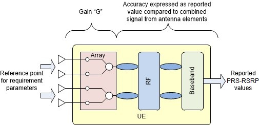

Technical Specification Group Radio Access Network;
NR;
Requirements for support of radio resource management
(Release 17)

The present document has been developed within the 3rd
Generation Partnership Project (3GPP TM) and may be further
elaborated for the purposes of 3GPP.
The present document has not been subject to any approval process by the
3GPP Organizational Partners and shall not be implemented.
This Specification is provided for future development work within 3GPP
only. The Organizational Partners accept no liability for any use of
this Specification.
Specifications and Reports for implementation of the 3GPP TM
system should be obtained via the 3GPP Organizational Partners'
Publications Offices.
3GPP
Postal address
3GPP support office address
650 Route des Lucioles - Sophia Antipolis
Valbonne - FRANCE
Tel.: +33 4 92 94 42 00 Fax: +33 4 93 65 47 16
Internet
http://www.3gpp.org
Copyright
Notification
No part may be reproduced except as authorized by written
permission.
The copyright and the foregoing restriction extend to reproduction in
all media.
UMTS™ is a Trade Mark of ETSI registered for the benefit of its
members
3GPP™ is a Trade Mark of ETSI registered for the benefit of its
Members and of the 3GPP Organizational Partners
LTE™ is a Trade Mark of ETSI registered for the benefit of its Members
and of the 3GPP Organizational Partners
GSM® and the GSM logo are registered and owned by the GSM
Association
Contents
Foreword 82
1 Scope 84
2 References 84
3 Definitions, symbols and abbreviations 85
3.1 Definitions 85
3.2 Symbols 86
3.3 Abbreviations 87
3.4 Test tolerances 90
3.5 Frequency bands grouping 90
3.5.1 Introduction 90
3.5.2 NR operating bands in FR1 90
3.5.2A NR operating bands for satellite access in FR1 91
3.5.3 NR operating bands in FR2 91
3.6 Applicability of requirements in this specification version
92
3.6.1 RRC connected state requirements in DRX 93
3.6.2 Number of serving carriers 93
3.6.2.1 Number of serving carriers for SA 93
3.6.2.2 Number of serving carriers for EN-DC 93
3.6.2.3 Number of serving carriers for NE-DC 93
3.6.2.4 Number of serving carriers for NR-DC 94
3.6.3 Applicability for intra-band FR2 94
3.6.4 Applicability for FR2 UE power classes 94
3.6.5 Applicability for SDL bands 94
3.6.6 Applicability of requirements for NGEN-DC operation 94
3.6.7 Applicability of QCL 94
3.6.9 Applicability of requirements for scheduling availability
95
3.6.10 Applicability of requirements for measurement restrictions
95
3.6.11 Applicability of requirements for Redcap UEs 95
3.6.11.1 RRC connected state requirements in DRX 95
3.6.11.2 Applicability for FR2 Redcap UE power classes 95
3.6.11.3 Applicability of QCL 95
3.6.12 Applicability of requirements for Satellite Access 96
3.6.13 Applicability of requirements for FR2 96
3.6.14 Applicability of requirements for FR2 Power Class 6 96
4 SA: RRC_IDLE state mobility 96
4.1 Cell Selection 96
4.2 Cell Re-selection 96
4.2.1 Introduction 96
4.2.2 Requirements 97
4.2.2.1 UE measurement capability 97
4.2.2.2 Measurement and evaluation of serving cell 97
4.2.2.3 Measurements of intra-frequency NR cells 98
4.2.2.4 Measurements of inter-frequency NR cells 100
4.2.2.5 Measurements of inter-RAT E-UTRAN cells 102
4.2.2.6 Maximum interruption in paging reception 104
4.2.2.7 General requirements 104
4.2.2.8 Minimum requirement at transitions 104
4.2.2.9 Measurements of intra-frequency NR cells for UE configured
with relaxed measurement criterion 105
4.2.2.9.1 Introduction 105
4.2.2.9.2 Measurements for UE fulfilling low mobility criterion
105
4.2.2.9.3 Measurements for UE fulfilling not-at-cell edge criterion
106
4.2.2.9.4 Measurements for UE fulfilling low mobility and not-at-cell
edge criteria 107
4.2.2.10 Measurements of inter-frequency NR cells for UE configured
with relaxed measurement criterion 107
4.2.2.10.1 Introduction 107
4.2.2.10.2 Measurements for UE fulfilling low mobility criterion
107
4.2.2.10.3 Measurements for UE fulfilling not-at-cell edge criterion
108
4.2.2.10.4 Measurements for UE fulfilling low mobility and
not-at-cell edge criterion 109
4.2.2.11 Measurements of inter-RAT E-UTRAN cells for UE configured
with relaxed measurement criterion 110
4.2.2.11.1 Introduction 110
4.2.2.11.2 Measurements for UE fulfilling low mobility criterion
110
4.2.2.11.3 Measurements for UE fulfilling with not-at-cell edge
criterion 111
4.2.2.11.4 Measurements for UE fulfilling low mobility and
not-at-cell edge criterion 112
4.2A Cell Re-selection when subject to CCA 112
4.2A.1 Introduction 112
4.2A.2 Requirements 113
4.2A.2.1 UE measurement capability 113
4.2A.2.2 Measurement and evaluation when subject to CCA on the
serving cell 113
4.2A.2.3 Measurements of intra-frequency NR cells when subject to CCA
on the serving cell and target cell 114
4.2A.2.4 Measurements of inter-frequency NR cells when subject to CCA
on the target cell 115
4.2A.2.5 Measurements of inter-RAT E-UTRAN cells when subject to CCA
on the serving cell 117
4.2A.2.6 Maximum interruption in paging reception when subject to CCA
on the target cell 117
4.2A.2.7 General requirements 118
4.2B Cell Re-selection for RedCap 118
4.2B.1 Introduction 118
4.2B.2 Requirements 118
4.2B.2.1 UE measurement capability for RedCap 118
4.2B.2.1.1 UE measurement capability for 1 Rx RedCap 118
4.2B.2.1.2 UE measurement capability for 2 Rx RedCap 118
4.2B.2.2 Measurement and evaluation of serving cell for RedCap UE
118
4.2B.2.3 Measurements of intra-frequency NR cells for RedCap UE
121
4.2B.2.4 Measurements of inter-frequency NR cells for RedCap UE
123
4.2B.2.5 Measurements of inter-RAT E-UTRAN cells for RedCap UE
126
4.2B.2.6 Maximum interruption in paging reception for RedCap 128
4.2B.2.7 General requirements for RedCap 128
4.2B.2.8 Minimum requirement at transitions 129
4.2B.2.9 Measurements of intra-frequency NR cells for UE configured
with relaxed measurement criterion for RedCap 129
4.2B.2.9.1 Introduction 129
4.2B.2.9.2 Measurements for UE fulfilling stationary criterion
130
4.2B.2.9.3 Measurements for a UE fulfilling stationary and
not-at-cell edge criteria 133
4.2B.2.9.3A Measurements for a UE fulfilling stationary and Rel-16
not at cell edge criteria 133
4.2B.2.9.4 Measurements for a UE fulfilling low mobility and
stationary criteria 134
4.2B.2.9.5 Measurements for a UE fulfilling low mobility criterion
and stationary and not-at-cell edge criteria 134
4.2B.2.9.6 Measurements for a UE fulfilling not-at-cell edge
criterion and stationary and not-at-cell edge criteria 134
4.2B.2.9.7 Measurements for a UE fulfilling low mobility and
not-at-cell edge criteria and stationary and notatcell edge criteria
134
4.2B.2.9.8 Measurements for a UE fulfilling low mobility and
not-at-cell edge criteria and stationary criterion 135
4.2B.2.9.9 Measurements for UE fulfilling low mobility criterion
135
4.2B.2.9.10 Measurements for UE fulfilling not-at-cell edge criterion
138
4.2B.2.9.11 Measurements for UE fulfilling low mobility and
not-at-cell edge criteria 140
4.2B.2.10 Measurements of inter-frequency NR cells for UE configured
with relaxed measurement criterion 141
4.2B.2.10.1 Introduction 141
4.2B.2.10.2 Measurements for UE fulfilling stationary criterion
141
4.2B.2.10.3 Measurements for a UE fulfilling stationary not at cell
edge criterion 144
4.2B.2.10.3A Measurements for a UE fulfilling stationary and Rel-16
not at cell edge criterion 144
4.2B.2.10.4 Measurements for a UE fulfilling low mobility and
stationary criteria 145
4.2B.2.10.5 Measurements for a UE fulfilling low mobility and
stationary not at cell edge criteria 145
4.2B.2.10.6 Measurements for a UE fulfilling not-at-cell edge
criterion and stationary not at cell edge criteria 145
4.2B.2.10.7 Measurements for a UE fulfilling low mobility not-at-cell
edge criterion and stationary not at cell edge criteria 145
4.2B.2.10.8 Measurements for a UE fulfilling low mobility not-at-cell
edge criterion and stationary criteria 146
4.2B.2.10.9 Measurements for UE fulfilling low mobility criterion
146
4.2B.2.10.10 Measurements for UE fulfilling not-at-cell edge
criterion 149
4.2B.2.10.11 Measurements for UE fulfilling low mobility and
not-at-cell edge criterion 152
4.2B.2.11 Measurements of inter-RAT E-UTRAN cells for UE configured
with relaxed measurement criterion 152
4.2B.2.11.1 Introduction 152
4.2B.2.11.2 Measurements for UE fulfilling stationary criterion
152
4.2B.2.11.3 Measurements for a UE fulfilling stationary not at cell
edge criterion 154
4.2B.2.11.3A Measurements for a UE fulfilling stationary and Rel-16
not at cell edge criterion 154
4.2B.2.11.4 Measurements for a UE fulfilling low mobility and
stationary criteria 155
4.2B.2.11.5 Measurements for a UE fulfilling low mobility and
stationary not at cell edge criteria 155
4.2B.2.11.6 Measurements for a UE fulfilling not-at-cell edge
criterion and stationary not at cell edge criteria 155
4.2B.2.11.7 Measurements for a UE fulfilling low mobility not-at-cell
edge criterion and stationary not at cell edge criteria 156
4.2B.2.11.8 Measurements for a UE fulfilling low mobility not-at-cell
edge criterion and stationary criteria 156
4.2B.2.11.9 Measurements for UE fulfilling low mobility criterion
156
4.2B.2.11.10 Measurements for UE fulfilling with not-at-cell edge
criterion 157
4.2B.2.11.11 Measurements for UE fulfilling low mobility and
not-at-cell edge criterion 159
4.2C Cell Re-selection for NR UE for Satellite Access 159
4.2C.1 Introduction 159
4.2C.2 Requirements 159
4.2C.2.1 UE measurement capability 159
4.2C.2.2 Measurement and evaluation of serving cell 159
4.2C.2.3 Measurements of intra-frequency NR cells 160
4.2C.2.4 Measurements of inter-frequency NR cells 163
4.2C.2.5 Maximum interruption in paging reception 165
4.2C.2.6 Minimum requirement at transitions 166
4.2C.2.7 Measurements of intra-frequency NR cells for UE configured
with relaxed measurement criterion 166
4.2C.2.8 Measurements of inter-frequency NR cells for UE configured
with relaxed measurement criterion 166
4.2C.2.9 General requirements 166
4.3 Minimization of Drive Tests (MDT) 166
4.3.1 Introduction 166
4.3.2 Measurement Requirements 167
4.3.3 Requirements for Relative Time Stamp Accuracy 167
4.3.4 Requirements for Relative Time Stamp Accuracy for RRC
Connection Establishment Failure Log Reporting 167
4.3.5 Requirements for Relative Time Stamp Accuracy for Radio Link
Failure and Handover Failure Log Reporting 168
4.3C Minimization of Drive Tests (MDT) for Satellite Access 168
4.3C.1 Introduction 168
4.3C.2 Measurement Requirements 168
4.3C.3 Requirements for Relative Time Stamp Accuracy 169
4.3C.4 Requirements for Relative Time Stamp Accuracy for RRC
Connection Establishment Failure Log Reporting 169
4.3C.5 Requirements for Relative Time Stamp Accuracy for Radio Link
Failure and Handover Failure Log Reporting 169
4.4 Idle Mode CA/DC Measurements 170
4.4.1 Introduction 170
4.4.2 Measurement Requirements 170
4.4.2.1 Detected cell requirement during state transition and Idle
mode 170
4.4.2.2 Measurements of inter-frequency CA/DC candidate cells 170
4.4.2.3 Measurements on serving cell 172
4.4.2.4 Measurements of E-UTRAN inter-RAT DC candidate cells 172
5 SA: RRC_INACTIVE state mobility 173
5.1 Cell Re-selection 173
5.1.1 Introduction 173
5.1.2 Requirements 173
5.1.2.1 UE measurement capability 173
5.1.2.2 Measurement and evaluation of serving cell 173
5.1.2.3 Measurements of intra-frequency NR cells 173
5.1.2.4 Measurements of inter-frequency NR cells 173
5.1.2.5 Measurements of inter-RAT E-UTRAN cells 173
5.1.2.6 Maximum interruption in paging reception 173
5.1.2.7 General requirements 174
5.1A Cell Re-selection with CCA 174
5.1A.1 Introduction 174
5.1A.2 Requirements 174
5.1A.2.1 UE measurement capability 174
5.1A.2.2 Measurement and evaluation when CCA is used on the serving
cell 174
5.1A.2.3 Measurements of intra-frequency NR cells when CCA is used on
the serving cell and target cell 174
5.1A.2.4 Measurements of inter-frequency NR cells when CCA is used on
the target cell 174
5.1A.2.5 Measurements of inter-RAT E-UTRAN cells when CCA is used on
the serving cell 174
5.1A.2.6 Maximum interruption in paging reception when CCA is used on
the target cell 174
5.1A.2.7 General requirements 174
5.1B Cell Re-selection for RedCap 175
5.1B.1 Introduction 175
5.1B.2 Requirements 175
5.1B.2.1 UE measurement capability 175
5.1B.2.2 Measurement and evaluation of serving cell 175
5.1B.2.3 Measurements of intra-frequency NR cells 176
5.1B.2.4 Measurements of inter-frequency NR cells 177
5.1B.2.5 Measurements of inter-RAT E-UTRAN cells 178
5.1B.2.6 Maximum interruption in paging reception 178
5.1B.2.7 General requirements 178
5.1B.2.8 Minimum requirement at transitions 178
5.1B.2.9 Measurements of intra-frequency NR cells for UE configured
with relaxed measurement criterion 178
5.1B.2.10 Measurements of inter-frequency NR cells for UE configured
with relaxed measurement criterion 179
5.1B.2.11 Measurements of inter-RAT E-UTRAN cells for UE configured
with relaxed measurement criterion 179
5.2 Void 179
5.2B Configured Grant based Small Data Transmissions (CG-SDT) for
RedCap 179
5.2B.1 Introduction 179
5.2B.2 Requirements on UE synchronization for small data
transmissions for RedCap 179
5.2B.2.2 Scheduling restriction 180
5.2B.2.3 Applicability conditions for SDT 180
5.3 Minimization of Drive Tests (MDT) 181
5.3.1 Introduction 181
5.3.2 Measurement Requirements 181
5.3.3 Requirements for Relative Time Stamp Accuracy 181
5.3.4 Requirements for Relative Time Stamp Accuracy for RRC
Connection Establishment Failure Log Reporting 181
5.3.5 Requirements for Relative Time Stamp Accuracy for Radio Link
Failure and Handover Failure Log Reporting 181
5.3.6 Requirements for Relative Time Stamp Accuracy for RRC Resume
Failure Log Reporting 181
5.3C Minimization of Drive Tests (MDT) for Satellite Access 181
5.3C.1 Introduction 182
5.3C.2 Measurement Requirements 182
5.3C.3 Requirements for Relative Time Stamp Accuracy 182
5.3C.4 Requirements for Relative Time Stamp Accuracy for RRC
Connection Establishment Failure Log Reporting 182
5.3C.5 Requirements for Relative Time Stamp Accuracy for Radio Link
Failure and Handover Failure Log Reporting 182
5.3C.6 Requirements for Relative Time Stamp Accuracy for RRC Resume
Failure Log Reporting 182
5.4 Idle Mode CA/DC Measurements 183
5.4.1 Introduction 183
5.4.2 Measurement Requirements 183
5.4.2.1 Detected cell requirement during state transition and Idle
mode 183
5.4.2.2 Measurements of inter-frequency CA/DC candidate cells 183
5.4.2.3 Measurements on serving cell 183
5.4.2.4 Measurements on E-UTRAN inter-RAT DC candidate cells 183
5.5 Configured Grant based Small Data Transmissions (CG-SDT) 183
5.5.1 Introduction 183
5.5.2 Requirements on UE synchronization for small data transmissions
183
5.5.3 TA validation requirements 184
5.5.4 Scheduling restriction 184
5.5.4.1 Scheduling availability of UE performing measurements in TDD
bands on FR1 184
5.5.4.2 Scheduling availability of UE performing measurements with a
different subcarrier spacing than PDSCH/PDCCH on FR1 185
5.5.4.3 Scheduling availability of UE performing measurements on FR2
185
5.5.5 Applicability conditions for SDT 185
5.6 NR measurements for positioning 186
5.6.1 Introduction 186
5.6.2 RSTD measurements 186
5.6.2.1 Introduction 186
5.6.2.2 Requirements Applicability 186
5.6.2.3 Measurement Capability 187
5.6.2.5 Measurements Period Requirements 187
5.6.3 PRS-RSRP measurements 190
5.6.3.1 Introduction 190
5.6.3.2 Requirements applicability 190
5.6.3.3 Measurement Capability 190
5.6.3.4 Measurement Reporting Requirements 190
5.6.3.5 Measurement Period Requirements 191
5.6.4 UE Rx-Tx time difference measurements 193
5.6.4.1 Introduction 193
5.6.4.2 Requirements Applicability 193
5.6.4.3 Measurement Capability 193
5.6.4.4 Measurement Reporting Requirements 193
5.6.4.5 Measurement Period Requirements 194
5.6.5 PRS-RSRPP measurements 196
5.6.5.1 Introduction 196
5.6.5.2 Requirements applicability 196
5.6.5.3 Measurement capability 196
5.6.5.4 Measurement reporting requirements 196
5.6.5.5 Measurement period requirements 197
5.7 Random access based Small Data Transmissions (RA-SDT) 197
5.7.1 Introduction 197
5.7.2 Requirements for small data transmissions based on 2-step RA
197
5.7.3 Requirements for small data transmissions based on 4-step RA
197
6 RRC_CONNECTED state mobility 198
6.1 Handover 198
6.1.1 NR Handover 198
6.1.1.1 Introduction 198
6.1.1.2 NR FR1 - NR FR1 Handover 198
6.1.1.2.1 Handover delay 198
6.1.1.2.2 Interruption time 198
6.1.1.3 NR FR2- NR FR1 Handover 199
6.1.1.3.1 Handover delay 199
6.1.1.3.2 Interruption time 199
6.1.1.4 NR FR2- NR FR2 Handover 200
6.1.1.4.1 Handover delay 200
6.1.1.4.2 Interruption time 200
6.1.1.5 NR FR1- NR FR2 Handover 201
6.1.1.5.1 Handover delay 201
6.1.1.5.2 Interruption time 201
6.1.2 NR Handover to other RATs 202
6.1.2.1 NR – E-UTRAN Handover 202
6.1.2.1.1 Introduction 202
6.1.2.1.2 Handover delay 202
6.1.2.1.3 Interruption time 202
6.1.2.2 NR – UTRAN Handover 202
6.1.2.2.1 Introduction 202
6.1.2.2.2 Handover delay 202
6.1.2.2.3 Interruption time 203
6.1.3 NR DAPS Handover 203
6.1.3.1 Introduction 203
6.1.3.2 NR FR1 - NR FR1 DAPS Handover 204
6.1.3.2.1 DAPS handover delay 204
6.1.3.2.2 Interruption time 205
6.1.3.3 NR FR2- NR FR1 DAPS Handover 206
6.1.3.3.1 DAPS handover delay 207
6.1.3.3.2 Interruption time 207
6.1.3.4 NR FR1- NR FR2 DAPS Handover 208
6.1.3.4.1 DAPS handover delay 208
6.1.3.4.2 Interruption time 208
6.1.4 NR Conditional Handover 209
6.1.4.1 Introduction 209
6.1.4.2 NR FR1 – NR FR1 conditional handover 209
6.1.4.3 NR FR2 – NR FR1 conditional handover 210
6.1.4.4 NR FR2 – NR FR2 conditional handover 210
6.1.4.4.1 Handover delay 210
6.1.4.4.2 Measurement time 211
6.1.4.4.3 Preparation time 211
6.1.4.4.4 Interruption time 211
6.1.4.5 NR FR1 – NR FR2 conditional handover 212
6.1.5 NR Handover with PSCell 212
6.1.5.1 Introduction 212
6.1.5.2 Handover with PSCell from NR SA to EN-DC 212
6.1.5.2.1 Interruption time for inter-RAT HO from NR to E-UTRAN
212
6.1.5.2.2 PSCell addition in HO with PSCell for NR SA to EN-DC
213
6.1.5.3 HO with PSCell from NE-DC to NE-DC 213
6.1.5.3.1 Handover delay 213
6.1.5.3.2 HO with PSCell - PCell Interruption time 214
6.1.5.3.3 PSCell addition/change in NE-DC to NE-DC HO with PSCell
214
6.1.5.4 HO with PSCell from NR-DC to NR-DC 214
6.1.5.5 Handover with PSCell from NR SA to EN-DC with PSCell using
CCA 215
6.1.5.5.1 Introduction 215
6.1.5.5.2 NR SA to EN-DC HO with PSCell- NR to E-UTRA HO Interruption
time 216
6.1.5.5.3 NR SA to EN-DC HO with PSCell - NR PSCell Addition Delay
requirements 216
6.1A Void 217
6.1A.1 Void 217
6.1A.1.1 Void 217
6.1A.1.2 Void 217
6.1A.1.2.1 Void 217
6.1A.1.2.2 Void 217
6.1B Handover to target cell using CCA 217
6.1B.1 NR Handover 217
6.1B.1.1 Introduction 217
6.1B.1.2 NR FR1 - NR FR1 Handover 218
6.1B.1.2.1 Handover delay 218
6.1B.1.2.2 Interruption time 218
6.1B.1.3 NR FR2-2 NR FR2-2 Handover 219
6.1B.1.3.1 Handover delay 219
6.1B.1.3.2 Interruption time 219
6.1B.1.4 NR FR1- NR FR2-2 Handover 220
6.1B.1.4.1 Handover delay 220
6.1B.1.4.2 Interruption time 220
6.1C Handover for SAN 221
6.1C.1 NR SAN Handover 221
6.1C.1.1 Introduction 221
6.1C.1.2 NR SAN FR1 – NR SAN FR1 Handover 221
6.1C.1.2.1 Handover delay 221
6.1C.1.2.2 Interruption time 221
6.1C.2 NR SAN Conditional Handover 222
6.1C.2.1 Introduction 222
6.1C.2.2 NR SAN FR1 – NR SAN FR1 conditional handover 222
8.1.1.1 Introduction of Requirement on Radio Link Monitoring for UE
Configured with Relaxed Measurement Criteria 256
8.1.2 Requirements for SSB based radio link monitoring 256
8.1.2.1 Introduction 257
8.1.2.2 Minimum requirement 257
8.1.2.3 Measurement restrictions for SSB based RLM 261
8.1.2.4 Minimum requirement of SSB based radio link monitoring for UE
fulfilling relaxed measurement criteria 261
8.1.3 Requirements for CSI-RS based radio link monitoring 262
8.1.3.1 Introduction 262
8.1.3.2 Minimum requirement 263
8.1.3.3 Measurement restrictions for CSI-RS based RLM 266
8.1.3.4 Minimum requirement of CSI-RS based radio link monitoring for
UE fulfilling relaxed measurement criteria 267
8.1.4 Minimum requirement at transitions 268
8.1.5 Minimum requirement for UE turning off the transmitter 268
8.1.6 Minimum requirement for L1 indication 268
8.1.7 Scheduling availability of UE during radio link monitoring
269
8.1.7.1 Scheduling availability of UE performing radio link
monitoring with a same subcarrier spacing as PDSCH/PDCCH on FR1 269
8.1.7.2 Scheduling availability of UE performing radio link
monitoring with a different subcarrier spacing than PDSCH/PDCCH on FR1
269
8.1.7.3 Scheduling availability of UE performing radio link
monitoring on FR2 269
8.1.7.4 Scheduling availability of UE performing radio link
monitoring on FR1 or FR2 in case of FR1-FR2 inter-band CA and NR-DC
270
8.1A Radio Link Monitoring with CCA on Target Frequency 270
8.1A.1 Introduction 270
8.1A.2 Requirements for SSB Based Radio Link Monitoring 271
8.1A.2.1 Introduction 271
8.1A.2.2 Minimum Requirement 272
8.1A.3 Minimum requirement at transitions 275
8.1A.4 Minimum requirement for UE turning off the transmitter 276
8.1A.5 Minimum requirement for L1 indication 276
8.1A.6 Scheduling availability of UE during radio link monitoring
276
8.1A.6.3 Scheduling availability of UE performing radio link
monitoring on FR2-2 276
8.1A.6.4 Scheduling availability of UE performing radio link
monitoring on FR1 or FR2-2 in case of FR1-FR2-2 inter-band CA and NR-DC
277
8.1B Radio Link Monitoring for RedCap 277
8.1B.1 Introduction 277
8.1B.2 Requirements for SSB based radio link monitoring 278
8.1B.2.1 Introduction 278
8.1B.2.2 Minimum requirement 279
8.1B.2.3 Measurement restrictions for SSB based RLM 281
8.1B.3 Requirements for CSI-RS based radio link monitoring 282
8.1B.3.1 Introduction 282
8.1B.3.2 Minimum requirement 282
8.1B.3.3 Measurement restrictions for CSI-RS based RLM 285
8.1B.4 Minimum requirement at transitions 286
8.1B.5 Minimum requirement for UE turning off the transmitter 286
8.1B.6 Minimum requirement for L1 indication 286
8.1B.7 Scheduling availability of UE during radio link monitoring
286
8.1B.7.1 Scheduling availability of UE performing radio link
monitoring with a same subcarrier spacing as PDSCH/PDCCH on FR1 287
8.1B.7.2 Scheduling availability of UE performing radio link
monitoring with a different subcarrier spacing than PDSCH/PDCCH on FR1
287
8.1B.7.3 Scheduling availability of UE performing radio link
monitoring on FR2 287
8.1C Radio Link Monitoring for Satellite Access 287
8.1C.1 Introduction 287
8.1C.2 Requirements for SSB based radio link monitoring 288
8.1C.2.1 Introduction 288
8.1C.2.2 Minimum requirement 289
8.1C.2.3 Measurement restrictions for SSB based RLM 290
8.1C.3 Requirements for CSI-RS based radio link monitoring 290
8.1C.3.1 Introduction 290
8.1C.3.2 Minimum requirement 291
8.1C.3.3 Measurement restrictions for CSI-RS based RLM 292
8.1C.4 Minimum requirement at transitions 293
8.1C.5 Minimum requirement for UE turning off the transmitter 293
8.1C.6 Minimum requirement for L1 indication 293
8.1C.7 Scheduling availability of UE during radio link monitoring
293
8.1C.7.1 Scheduling availability of UE performing radio link
monitoring with a same subcarrier spacing as PDSCH/PDCCH on FR1 294
8.1C.7.2 Scheduling availability of UE performing radio link
monitoring with a different subcarrier spacing than PDSCH/PDCCH on FR1
294
8.2 Interruption 294
8.2.1 EN-DC Interruption 294
8.2.1.1 Introduction 294
8.2.1.2 Requirements 295
8.2.1.2.1 Interruptions at transitions between active and non-active
during DRX 295
8.2.1.2.2 Interruptions at transitions from non-DRX to DRX 295
8.2.1.2.3 Interruptions at SCell addition/release 295
8.2.1.2.4 Interruptions at SCell activation/deactivation 296
8.2.1.2.5 Interruptions during measurements on SCC 298
8.2.1.2.5.1 Interruptions during measurements on deactivated NR SCC
298
8.2.1.2.5.2 Interruptions during measurements on deactivated E-UTRAN
SCC 298
8.2.1.2.5.3 Interruptions during CQI measurements on dormant E-UTRAN
SCell 298
8.2.1.2.5.4 Interruptions during RRM measurements on dormant E-UTRAN
SCC 298
8.2.1.2.6 Interruptions at UL carrier RRC reconfiguration 299
8.2.1.2.7 Interruptions due to Active BWP switching Requirement
299
8.2.1.2.8 Interruptions at direct SCell activation and hibernation
300
8.2.1.2.8.1 Interruptions during direct SCell activation and
hibernation of E-UTRA SCell 300
8.2.1.2.8.2 Interruptions during direct SCell activation 301
8.2.1.2.9 Interruptions at SCell hibernation 301
8.2.1.2.10 Interruptions at SCell activation/deactivation with
multiple downlink SCells 301
8.2.1.2.11 Interruptions due to UE-specific CBW change 301
8.2.1.2.12 Interruptions at NR SRS carrier based switching 301
8.2.1.2.13 Interruptions at E-UTRA SRS carrier based switching
303
8.2.1.2.14 DL Interruptions at switching between two uplink carriers
304
8.2.1.2.15 Interruptions due to SCell dormancy 304
8.2.1.2.15.1 Interruptions due to SCell dormancy switch 304
8.2.1.2.15.2 Interruptions due to CQI measurements during SCell
dormancy 304
8.2.1.2.15.3 Interruptions due to RRM measurements during SCell
dormancy 305
8.2.1.2.16 Interruptions when identifying CGI of an NR cell with
autonomous gaps 305
8.2.1.2.17 Interruptions when identifying CGI of an E-UTRA cell with
autonomous gaps 305
8.2.1.2.18 Interruptions at NR SRS antenna port switching 306
8.2.1.2.19 Interruptions at fast SCell activation 307
8.2.1.2.20 Interruptions due to PUCCH SCell activation/deactivation
308
8.2.2 SA: Interruptions with Standalone NR Carrier Aggregation
308
8.2.2.1 Introduction 308
8.2.2.2 Requirements 309
8.2.2.2.1 Interruptions at SCell addition/release 309
8.2.2.2.2 Interruptions at SCell activation/deactivation 310
8.2.2.2.3 Interruptions during measurements on deactivated SCC
311
8.2.2.2.4 Interruptions at UL carrier RRC reconfiguration 312
8.2.2.2.5 Interruptions due to Active BWP switching Requirement
312
8.2.2.2.6 Interruptions at inter-frequency SFTD measurement 313
8.2.2.2.7 Interruptions at SCell activation/deactivation with
multiple downlink SCells 315
8.2.2.2.8 Interruptions due to UE-specific CBW change 315
8.2.2.2.9 Interruptions at NR SRS carrier based switching 315
8.2.2.2.10 DL Interruptions at UE switching between two uplink
carriers 317
8.2.2.2.10A DL Interruptions at UE switching between two uplink
carriers with two transmit antenna connectors 317
8.2.2.2.10B DL Interruptions at UE switching between one uplink band
with one transmit antenna connector and one uplink band with two
transmit antenna connectors 318
8.2.2.2.10C DL Interruptions at UE switching between two uplink bands
with two transmit antenna connectors 318
8.2.2.2.11 Interruptions at direct SCell activation 318
8.2.2.2.12 Interruptions due to SCell dormancy 319
8.2.2.2.12.1 Interruptions due to SCell dormancy switch 319
8.2.2.2.12.2 Interruptions due to CQI measurements during SCell
dormancy 319
8.2.2.2.12.3 Interruptions due to RRM measurements during SCell
dormancy 319
8.2.2.2.13 Interruptions at transitions between active and non-active
during DRX 319
8.2.2.2.14 Interruptions when identifying CGI of an NR cell with
autonomous gaps 319
8.2.2.2.15 Interruptions when identifying CGI of an E-UTRA cell with
autonomous gaps 320
8.2.2.2.16 Interruptions at NR SRS antenna port switching 320
8.2.2.2.17 Interruptions at fast SCell activation 321
8.2.2.2.18 Interruptions due to PUCCH SCell activation/deactivation
322
8.2.3 NE-DC Interruptions 322
8.2.3.1 Introduction 322
8.2.3.2 Requirements 323
8.2.3.2.1 Interruptions at transitions between active and non-active
during DRX 323
8.2.3.2.2 Interruptions at transitions from non-DRX to DRX 323
8.2.3.2.3 Interruptions at PSCell/SCell addition/release 323
8.2.3.2.4 Interruptions at SCell activation/deactivation 325
8.2.3.2.5 Interruptions during measurements on SCC 326
8.2.3.2.5.1 Interruptions during measurements on deactivated NR SCC
326
8.2.3.2.5.2 Interruptions during measurements on deactivated E-UTRAN
SCC 326
8.2.3.2.5.3 Interruptions during CQI measurements on dormant E-UTRAN
SCC 327
8.2.3.2.5.4 Interruptions during RRM measurements on dormant E-UTRAN
SCC 327
8.2.3.2.6 Interruptions at UL carrier RRC reconfiguration 327
8.2.3.2.7 Interruptions due to Active BWP switching Requirement
328
8.2.3.2.8 Interruptions at direct SCell activation and hibernation
328
8.2.3.2.9 Interruptions at SCell hibernation 328
8.2.3.2.10 Interruptions at SCell activation/deactivation with
multiple downlink SCells 329
8.2.3.2.11 Interruptions at NR SRS carrier based switching 329
8.2.3.2.12 Interruptions at E-UTRA SRS carrier based switching
330
8.2.3.2.13 Interruptions due to SCell dormancy 331
8.2.3.2.14 Interruptions when identifying CGI of an NR cell with
autonomous gaps 332
8.2.3.2.15 Interruptions when identifying CGI of an E-UTRA cell with
autonomous gaps 332
8.2.3.2.17 Interruptions at fast SCell activation 334
8.2.3.2.18 Interruptions due to UE-specific CBW change 334
8.2.3.2.19 Interruptions due to PUCCH SCell activation/deactivation
335
8.2.4 NR-DC: Interruptions 335
8.2.4.1 Introduction 335
8.2.4.2 Requirements 336
8.2.4.2.1 Interruptions at PSCell/SCell addition/release 336
8.2.4.2.2 Interruptions at SCell activation/deactivation 337
8.2.4.2.3 Interruptions during measurements on SCC 338
8.2.4.2.4 Interruptions at UL carrier RRC reconfiguration 338
8.2.4.2.5 Interruptions due to Active BWP switching Requirement
339
8.2.4.2.6 Interruptions at transitions between active and non-active
during DRX 339
8.2.4.2.7 Interruptions at transitions from non-DRX to DRX 339
8.2.4.2.8 Interruptions at SCell activation/deactivation with
multiple downlink SCells 340
8.2.4.2.9 Interruptions at NR SRS carrier based switching 340
8.2.4.2.10 Interruptions at direct SCell activation 341
8.2.4.2.11 Interruptions when identifying CGI of an NR cell with
autonomous gaps 342
8.2.4.2.12 Interruptions when identifying CGI of an E-UTRA cell with
autonomous gaps 342
8.2.4.2.13 Interruptions due to SCell dormancy 343
8.2.4.2.14 Interruptions at NR SRS antenna port switching 343
8.2.4.2.15 Interruptions at fast SCell activation 344
8.2.4.2.16 Interruptions at SCG activation/deactivation 345
8.2.4.2.17 Interruptions due to RRM measurements on deactivated SCG
345
8.2.4.2.18 Interruptions during RLM/BFD measurements on deactivated
PScell 346
8.2.4.2.19 Interruptions due to UE-specific CBW change 346
8.2.4.2A Void 346
8.2.4.2A.1 Void 346
8.2.4.2A.2 Void 346
8.2.4.2A.3 Void 346
8.3 SCell Activation and Deactivation Delay 346
8.3.1 Introduction 346
8.3.2 SCell Activation Delay Requirement for Deactivated SCell
346
8.3.3 SCell Deactivation Delay Requirement for Activated SCell
351
8.3.4 Direct SCell Activation at SCell addition 351
8.3.5 Direct SCell Activation at Handover 353
8.3.7 SCell Activation Delay Requirement for Deactivated SCell with
Multiple Downlink SCells 354
8.3.8 SCell Deactivation Delay Requirement for Activated SCell with
Multiple Downlink SCells 358
8.3.9 Direct SCell Activation of Multiple Downlink SCells at SCell
addition 359
8.3.10 Direct SCell Activation of Multiple Downlink SCells at
Handover 360
8.3.12 SCell Activation Delay Requirement for Deactivated PUCCH SCell
361
8.3.13 SCell activation delay Requirement for Deactivated PUCCH SCell
with Multiple SCells 364
8.3.13.1 Introduction 364
8.3.14 SCell Deactivation Delay Requirement for Activated PUCCH SCell
366
8.3.15 SCell Deactivation Delay Requirement for Activated PUCCH SCell
with Multiple Downlink SCells 366
8.3.16 Fast SCell Activation Delay Requirement for Deactivated SCell
367
8.3A SCell Activation and Deactivation Delay in Carriers with CCA
369
8.3A.1 Introduction 369
8.3A.2 SCell Activation Delay Requirement for Deactivated SCell
370
8.3A.3 SCell Deactivation Delay Requirement for Activated SCell
374
8.4 UE UL carrier RRC reconfiguration delay 374
8.4.1 Introduction 374
8.4.2 UE UL carrier configuration delay requirement 374
8.4.3 UE UL carrier deconfiguration delay requirement 375
8.5 Link Recovery Procedures 375
8.5.1 Introduction 375
8.5.1.1 Introduction of Requirement on Link Recovery Procedures for
UE configured with relaxed measurement criteria 376
8.5.2 Requirements for SSB based beam failure detection 377
8.5.2.1 Introduction 377
8.5.2.2 Minimum requirement 377
8.5.2.3 Measurement restriction for SSB based beam failure detection
380
8.5.2.4 Minimum requirement of SSB based beam failure detection for
UE fulfilling relaxed measurement criteria 381
8.5.3 Requirements for CSI-RS based beam failure detection 382
8.5.3.1 Introduction 382
8.5.3.2 Minimum requirement 382
8.5.3.3 Measurement restrictions for CSI-RS beam failure detection
386
8.5.3.4 Minimum requirement of CSI-RS based beam failure detection
for UE fulfilling relaxed measurement criteria 387
8.5.4 Minimum requirement for L1 indication 387
8.5.5 Requirements for SSB based candidate beam detection 388
8.5.5.1 Introduction 388
8.5.5.2 Minimum requirement 388
8.5.5.3 Measurement restriction for SSB based candidate beam
detection 391
8.5.6 Requirements for CSI-RS based candidate beam detection 391
8.5.6.1 Introduction 391
8.5.6.2 Minimum requirement 392
8.5.6.3 Measurement restriction for CSI-RS based candidate beam
detection 395
8.5.7 Scheduling availability of UE during beam failure detection
395
8.5.7.1 Scheduling availability of UE performing beam failure
detection with a same subcarrier spacing as PDSCH/PDCCH on FR1 395
8.5.7.2 Scheduling availability of UE performing beam failure
detection with a different subcarrier spacing than PDSCH/PDCCH on FR1
396
8.5.7.3 Scheduling availability of UE performing beam failure
detection on FR2 396
8.5.7.4 Scheduling availability of UE performing beam failure
detection on FR1 or FR2 in case of FR1-FR2 inter-band CA and NR DC
397
8.5.8 Scheduling availability of UE during candidate beam detection
397
8.5.8.1 Scheduling availability of UE performing L1-RSRP measurement
with a same subcarrier spacing as PDSCH/PDCCH on FR1 397
8.5.8.2 Scheduling availability of UE performing L1-RSRP measurement
with a different subcarrier spacing than PDSCH/PDCCH on FR1 397
8.5.8.3 Scheduling availability of UE performing L1-RSRP measurement
on FR2 397
8.5.8.4 Scheduling availability of UE performing L1-RSRP measurement
on FR1 or FR2 in case of FR1-FR2 inter-band CA and NR-DC 398
8.5.9 Requirements for Beam Failure Recovery in SCell 398
8.5.9.1 Introduction 398
8.5.9.2 Requirement 398
8.5.10 Minimum requirement at transitions for beam failure detection
398
8.5A Link Recovery Procedures when CCA is used on target frequency
399
8.5A.1 Introduction 399
8.5A.2 Requirements for SSB based beam failure detection 400
8.5A.2.1 Introduction 400
8.5A.2.2 Minimum requirement 400
8.5A.2.3 Measurement restriction for SSB based beam failure detection
402
8.5A.3 Void 403
8.5A.4 Minimum requirement for L1 indication 403
8.5A.5 Requirements for SSB based candidate beam detection 403
8.5A.5.1 Introduction 403
8.5A.5.2 Minimum requirement 403
8.5A.5.3 Measurement restriction for SSB based candidate beam
detection 405
8.5A.6 Void 406
8.5A.7 Scheduling availability of UE during beam failure detection
406
8.5A.7.1 Scheduling availability of UE performing beam failure
detection with a same subcarrier spacing as PDSCH/PDCCH 406
8.5A.7.2 Scheduling availability of UE performing beam failure
detection with a different subcarrier spacing than PDSCH/PDCCH 406
8.5A.7.3 Scheduling availability of UE performing beam failure
detection on FR2-2 406
8.5A.7.4 Scheduling availability of UE performing beam failure
detection on FR1 or FR2-2 in case of FR1-FR2-2 inter-band CA and NR DC
406
8.5A.8 Scheduling availability of UE during candidate beam detection
406
8.5A.8.3 Scheduling availability of UE performing L1-RSRP measurement
on FR2-2 407
8.5.8.4 Scheduling availability of UE performing L1-RSRP measurement
on FR1 or FR2-2 in case of FR1-FR2-2 inter-band CA and NR-DC 407
8.5B Link Recovery Procedures for Redcap 407
8.5B.1 Introduction 407
8.5B.2 Requirements for SSB based beam failure detection for Redcap
407
8.5B.2.1 Introduction 407
8.5B.2.2 Minimum requirement 408
8.5B.2.3 Measurement restriction for SSB based beam failure detection
409
8.5B.3 Requirements for CSI-RS based beam failure detection for
Redcap 410
8.5B.3.1 Introduction 410
8.5B.3.2 Minimum requirement 410
8.5B.3.3 Measurement restrictions for CSI-RS beam failure detection
412
8.5B.4 Minimum requirement for L1 indication for Redcap 413
8.5B.5 Requirements for SSB based candidate beam detection for Redcap
414
8.5B.5.1 Introduction 414
8.5B.5.2 Minimum requirement 414
8.5B.5.3 Measurement restriction for SSB based candidate beam
detection 416
8.5B.6 Requirements for CSI-RS based candidate beam detection for
Redcap 416
8.5B.6.1 Introduction 416
8.5B.6.2 Minimum requirement 416
8.5B.6.3 Measurement restriction for CSI-RS based candidate beam
detection 418
8.5B.7 Scheduling availability of UE during beam failure detection
for Redcap 419
8.5B.7.1 Scheduling availability of UE performing beam failure
detection with a same subcarrier spacing as PDSCH/PDCCH on FR1 419
8.5B.7.2 Scheduling availability of UE performing beam failure
detection with a different subcarrier spacing than PDSCH/PDCCH on FR1
419
8.5B.7.3 Scheduling availability of UE performing beam failure
detection on FR2 419
8.5B.8 Scheduling availability of UE during candidate beam detection
for Redcap 420
8.5B.8.1 Scheduling availability of UE performing L1-RSRP measurement
with a same subcarrier spacing as PDSCH/PDCCH on FR1 420
8.5B.8.2 Scheduling availability of UE performing L1-RSRP measurement
with a different subcarrier spacing than PDSCH/PDCCH on FR1 420
8.5B.8.3 Scheduling availability of UE performing L1-RSRP measurement
on FR2 420
8.5B.9 Minimum requirement at transitions for beam failure detection
for Redcap 420
8.5C Link Recovery Procedures for Satellite Access 421
8.5C.1 Introduction 421
8.5C.2 Requirements for SSB based beam failure detection 421
8.5C.2.1 Introduction 421
8.5C.2.2 Minimum requirement 422
8.5C.2.3 Measurement restriction for SSB based beam failure detection
422
8.5C.3 Requirements for CSI-RS based beam failure detection 423
8.5C.3.1 Introduction 423
8.5C.3.2 Minimum requirement 423
8.5C.3.3 Measurement restrictions for CSI-RS beam failure detection
424
8.5C.4 Minimum requirement for L1 indication 425
8.5C.5 Requirements for SSB based candidate beam detection 425
8.5C.5.1 Introduction 425
8.5C.5.2 Minimum requirement 425
8.5C.5.3 Measurement restriction for SSB based candidate beam
detection 426
8.5C.6 Requirements for CSI-RS based candidate beam detection 427
8.5C.6.1 Introduction 427
8.5C.6.2 Minimum requirement 427
8.5C.6.3 Measurement restriction for CSI-RS based candidate beam
detection 428
8.5C.7 Scheduling availability of UE during beam failure detection
428
8.5C.7.1 Scheduling availability of UE performing beam failure
detection with a same subcarrier spacing as PDSCH/PDCCH on FR1 428
8.5C.7.2 Scheduling availability of UE performing beam failure
detection with a different subcarrier spacing than PDSCH/PDCCH on FR1
428
8.5C.8 Scheduling availability of UE during candidate beam detection
429
8.5C.8.1 Scheduling availability of UE performing L1-RSRP measurement
with a same subcarrier spacing as PDSCH/PDCCH on FR1 429
8.5C.8.2 Scheduling availability of UE performing L1-RSRP measurement
with a different subcarrier spacing than PDSCH/PDCCH on FR1 429
8.5C.9 Minimum requirement at transitions for beam failure detection
429
8.6 Active BWP switch delay 429
8.6.1 Introduction 429
8.6.2 DCI and timer based BWP switch delay on a single CC 430
8.6.2A DCI based BWP switch delay on multiple CCs 431
8.6.2A.1 Simultaneous DCI based BWP switch delay on multiple CCs
431
8.6.2A.2 Non-simultaneous DCI based BWP switch delay on multiple CCs
433
8.6.2B Timer based BWP switch delay on multiple CCs 433
8.6.2B.1 Simultaneous timer based BWP switch delay on multiple CCs
433
8.6.2B.2 Non-simultaneous timer based BWP switch delay on multiple
CCs 433
8.6.3 RRC based BWP switch delay on a single CC 434
8.6.3A RRC based BWP switch delay on multiple CCs 435
8.6.3A.1 Simultaneous RRC based BWP switch delay on multiple CCs
435
8.6.3A.2 Non-simultaneous RRC based BWP switch delay on multiple CCs
435
8.6.4 BWP switch delay on Consistent UL CCA recovery 436
8.6A Active BWP switch delay for RedCap 436
8.6A.1 Introduction 436
8.6A.2 DCI and timer based BWP switch delay on a single CC 436
8.6A.3 RRC based BWP switch delay on a single CC 438
8.6C Active BWP switch delay for satellite access 438
8.6C.1 Introduction 438
8.6C.2 DCI and timer based BWP switch delay on a single CC 438
8.6C.3 RRC based BWP switch delay on a single CC 440
8.7 Void 440
8.8 NE-DC: E-UTRAN PSCell Addition and Release Delay 440
8.9B NR-DC: PSCell Addition and Release Delay in Carriers with CCA
443
8.9B.1 Introduction 443
8.9B.2 PSCell Addition Delay Requirement 444
8.9B.3 PSCell Release Delay Requirement 444
8.10 Active TCI state switching delay 445
8.10.3A MAC-CE based TCI state switch delay in HST FR2 scenarios
446
8.10.4 DCI based TCI state switch delay 446
8.10.5 RRC based TCI state switch delay 447
8.10.6 Active TCI state list update delay 447
8.10A Active TCI state switching delay with CCA 447
8.10A.1 Introduction 447
8.10A.2 Known conditions for TCI state 448
8.10A.3 MAC-CE based TCI state switch delay 448
8.10A.4 DCI based TCI state switch delay 449
8.10A.5 RRC based TCI state switch delay 449
8.10A.6 Active TCI state list update delay 450
8.10B Active TCI state switching delay for RedCap 450
8.10B.1 Introduction 450
8.10B.2 Known conditions for TCI state 450
8.10B.3 MAC-CE based TCI state switch delay 451
8.10B.4 DCI based TCI state switch delay 451
8.10B.5 RRC based TCI state switch delay 452
8.10B.6 Active TCI state list update delay 452
8.10C Active TCI state switching delay for satellite access 453
8.10C.1 Introduction 453
8.10C.2 MAC-CE based TCI state switch delay 453
8.10C.4 DCI based TCI state switch delay 453
8.10C.5 RRC based TCI state switch delay 453
8.10C.6 Active TCI state list update delay 453
8.11 PSCell Change 454
8.11A PSCell Change in Carriers with CCA 454
8.11B Conditional PSCell Change 454
8.11B.1 Introduction 454
8.11B.2 Conditoinal PSCell Change delay 455
8.11B.2.1 Measurement time 455
8.11D Conditional PSCell Change in Carriers with CCA 456
8.11D.1 Introduction 456
8.11D.2 Conditional PSCell Change delay 456
8.11D.2.1 Measurement time 457
8.12 Uplink spatial relation switch delay 457
8.12.1 Introduction 457
8.12.2 Known conditions for spatial relation when associated with
DL-RS 457
8.12.3 MAC-CE based spatial relation switch delay 458
8.12.4 DCI based spatial relation switch delay 458
8.12.5 RRC based spatial relation switch delay 459
8.12A Uplink spatial relation switch delay for RedCap 459
8.12A.1 Introduction 459
8.12A.2 Known conditions for spatial relation when associated with
DL-RS 459
8.12A.3 MAC-CE based spatial relation switch delay 460
8.12A.4 DCI based spatial relation switch delay 460
8.12A.5 RRC based spatial relation switch delay 461
8.12C Uplink spatial relation switch delay for satellite access
461
8.12C.1 Void 462
8.12C.2 Void 462
8.12C.3 Void 462
8.12C.4 Void 462
8.12C.5 Void 462
8.13 UE-specific CBW change 462
8.13.1 Introduction 462
8.13.2 UE-specific CBW change delay 462
8.13A UE-specific CBW change for RedCap 462
8.13A.1 Introduction 462
8.13A.2 UE-specific CBW change delay 462
8.13C UE-specific CBW change for satellite access 463
8.13C.1 Introduction 463
8.13C.2 UE-specific CBW change delay 463
8.14 Pathloss reference signal switching delay 463
8.14.1 Introduction 463
8.14.2 Known conditions for pathloss reference signal 464
8.14.3 MAC-CE based pathloss reference signal switch delay 464
8.14C Pathloss reference signal switching delay for satellite access
464
8.14C.1 Introduction 465
8.14C.2 Known conditions for pathloss reference signal 465
8.14C.3 MAC-CE based pathloss reference signal switch delay 465
8.15 Active downlink TCI state switching delay for unified TCI
466
8.15.1 Introduction 466
8.15.4 DCI based downlink TCI state switch delay 467
8.15.5 Active Downlink TCI state list update delay 468
8.16 Active uplink TCI state switching delay for unified TCI 469
8.16.1 Introduction 469
8.16.4 DCI based uplink TCI state switch delay 471
8.16.5 Active Uplink TCI state list update delay 471
8.17 SCG Activation and Deactivation Delay 473
8.17.1 Introduction 473
8.17.2 SCG Activation Delay Requirement 473
8.17.3 SCG Deactivation Delay Requirement 474
8.18 TRP specific Link Recovery Procedures 474
8.18.1 Introduction 474
8.18.2 Requirements for TRP specific SSB based beam failure detection
475
8.18.2.1 Introduction 475
8.18.2.2 Minimum requirement 475
8.18.2.3 Measurement restriction for SSB based beam failure detection
477
8.18.3 Requirements for CSI-RS based beam failure detection 478
8.18.3.1 Introduction 478
8.18.3.2 Minimum requirement 478
8.18.3.3 Measurement restrictions for CSI-RS beam failure detection
480
8.18.4 Minimum requirement for L1 indication 481
8.18.5 Requirements for SSB based candidate beam detection 481
8.18.5.1 Introduction 481
8.18.5.2 Minimum requirement 481
8.18.5.3 Measurement restriction for SSB based candidate beam
detection 483
8.18.6 Requirements for CSI-RS based candidate beam detection 484
8.18.6.1 Introduction 484
8.18.6.2 Minimum requirement 484
8.18.6.3 Measurement restriction for CSI-RS based candidate beam
detection 486
8.18.7 Requirements for TRP specific Beam Failure Recovery 487
8.18.7.1 Introduction 487
8.18.7.2 Requirement 487
8.18.8 Scheduling availability of UE during TRP specific beam failure
detection 488
8.18.8.1 Scheduling availability of UE performing TRP specific beam
failure detection with a same subcarrier spacing as PDSCH/PDCCH on FR1
488
8.18.8.2 Scheduling availability of UE performing TRP specific beam
failure detection with a different subcarrier spacing than PDSCH/PDCCH
on FR1 488
8.18.8.3 Scheduling availability of UE performing TRP specific beam
failure detection on FR2 488
8.18.8.4 Scheduling availability of UE performing TRP specific beam
failure detection on FR1 or FR2 in case of FR1-FR2 inter-band CA and NR
DC 489
8.18.9 Scheduling availability of UE during TRP specific candidate
beam detection 489
8.18.9.1 Scheduling availability of UE performing L1-RSRP measurement
with a same subcarrier spacing as PDSCH/PDCCH on FR1 489
8.18.9.2 Scheduling availability of UE performing L1-RSRP measurement
with a different subcarrier spacing than PDSCH/PDCCH on FR1 489
8.18.9.3 Scheduling availability of UE performing L1-RSRP measurement
on FR2 489
8.18.9.4 Scheduling availability of UE performing L1-RSRP measurement
on FR1 or FR2 in case of FR1-FR2 inter-band CA and NR-DC 490
8.19 Pre-configured measurement gap activation/deactivation delay
490
8.19.1 Introduction 490
8.19.2 Pre-configured measurement gap activation/deactivation upon
DCI/timer-based BWP switch 490
8.19.2.1 Activation/deactivation upon DCI/timer-based BWP switch
delay on a single CC 490
8.19.3 Pre-configured measurement gap activation/deactivation upon
SCell activation/deactivation 491
8.19.4 Pre-configured measurement gap activation/deactivation upon
RRC reconfiguration 491
9 Measurement Procedure 492
9.1 General measurement requirement 492
9.1.1 Introduction 492
9.1.2 Measurement gap 492
9.1.2.1 EN-DC: Measurement Gap Sharing 504
9.1.2.1a SA: Measurement Gap Sharing 505
9.1.2.1b NE-DC: Measurement Gap Sharing 506
9.1.2.1c NR-DC: Measurement Gap Sharing 507
9.1.3 UE Measurement capability 508
9.1.3.1 EN-DC: Monitoring of multiple layers using gaps 508
9.1.3.1a SA: Monitoring of multiple layers using gaps 508
9.1.3.1b NE-DC: Monitoring of multiple layers using gaps 509
9.1.3.1c NR-DC: Monitoring of multiple layers using gaps 509
9.1.3.2 EN-DC: Maximum allowed layers for multiple monitoring 510
9.1.3.2a SA: Maximum allowed layers for multiple monitoring 511
9.1.3.2b NE-DC: Maximum allowed layers for multiple monitoring
511
9.1.3.2c NR-DC: Maximum allowed layers for multiple monitoring
512
9.1A.3.2 Void 513
9.1.3A UE Measurement capability under operation mode with CCA
513
9.1.3A.1 EN-DC: Monitoring of multiple layers using gaps under CCA
513
9.1.3A.1a SA: Monitoring of multiple layers using gaps under CCA
513
9.1.3A.2 EN-DC: Maximum allowed layers for multiple monitoring under
CCA 513
9.1.3A.2a SA: Maximum allowed layers for multiple monitoring under
CCA 514
9.1.3C UE Measurement capability under operation mode with satellite
access 514
9.1.3C.1a SA: Monitoring of multiple layers using gaps under
satellite access 514
9.1.3C.2a SA: Maximum allowed layers for multiple monitoring for SAN
515
9.1.4 Capabilities for Support of Event Triggering and Reporting
Criteria 515
9.1.4.1 Introduction 515
9.1.4.2 Requirements 515
9.1.5 Carrier-specific scaling factor 519
9.1.5.1 Monitoring of multiple layers outside gaps 520
9.1.5.1.1 EN-DC mode: carrier-specific scaling factor for SSB-based,
CSI-RS based L3 measurements and RSSI and channel occupancy measurements
performed outside gaps 522
9.1.5.1.2 SA mode: carrier-specific scaling factor for SSB-based,
CSI-RS based L3 measurements and RSSI and channel occupancy measurements
performed outside gaps 523
9.1.5.1.3 NR-DC mode: carrier-specific scaling factor for SSB-based
and CSI-RS based L3 measurements performed outside gaps 524
9.1.5.1.4 NE-DC mode: carrier-specific scaling factor for SSB-based
and CSI-RS based measurements performed outside gaps 525
9.1.5.2 Monitoring of multiple layers within gaps 526
9.1.5.2.1 EN-DC mode: carrier-specific scaling factor for SSB,
CSI-RS-based L3 measurements and RSSI and channel occupancy measurements
performed within gaps 528
9.1.5.2.2 SA mode: carrier-specific scaling factor for SSB,
CSI-RS-based L3 measurements and RSSI and channel occupancy measurements
performed within gaps 530
9.1.5.2.3 NE-DC: carrier-specific scaling factor for SSB-based and
CSI-RS based L3 measurements performed within gaps 532
9.1.5.2.4 NR-DC: carrier-specific scaling factor for SSB-based and
CSI-RS-based L3 measurements performed within gaps 533
9.1.5.2.5 SA mode: carrier-specific scaling factor for PRS-based
measurements performed within gaps 535
9.1.5.2.6 NE-DC: carrier-specific scaling factor for PRS-based
measurements performed within gaps 536
9.1.5.2.7 NR-DC: carrier-specific scaling factor for PRS-based
measurements performed within gaps 536
9.1.5.3 Monitoring of multiple layers within NCSG 536
9.1.5.3.1 SA mode: carrier-specific scaling factor for measurements
performed within NCSG 536
9.1.6 Minimum requirement at transitions 537
9.1.7 Pre-configured measurement gap 538
9.1.7.1 Introduction 538
9.1.7.2 Requirements applicability 538
9.1.7.3 Requirements 538
9.1.7.3.1 Requirements for autonomous activation/deactivation
mechanism 539
9.1.7.3.2 Requirements for network-controlled activation/deactivation
mechanism 539
9.1.7.3.3 Requirements for reception/transmission during
activation/deactivation 540
9.1.8 Concurrent measurement gaps 540
9.1.8.1 Introduction 540
9.1.8.2 Requirements 540
9.1.8.3 Collision between concurrent measurement gaps 542
9.1.8.4 Measurement gap related requirements of concurrent
measurement gaps 542
9.1.9 Network controlled small gap 542
9.1.9.1 Introduction 542
9.1.9.2 Requirements applicability 543
9.1.10 MUSIM gaps 545
9.1.11 UL gap for Tx power management 546
9.1A General measurement requirement for RedCap 547
9.1A.1 Introduction 547
9.1A.2 Measurement gap 547
9.1A.2.1 SA: Measurement Gap Sharing 551
9.1A.3 UE Measurement capability 552
9.1A.3.1 SA: Monitoring of multiple layers using gaps 552
9.1A.3.2 SA: Maximum allowed layers for multiple monitoring 552
9.1A.4 Capabilities for Support of Event Triggering and Reporting
Criteria 552
9.1A.4.1 Introduction 552
9.1A.4.2 Requirements 553
9.1A.5 Carrier-specific scaling factor 553
9.1A.5.1 Monitoring of multiple layers outside gaps 553
9.1A.5.1.1 SA mode: carrier-specific scaling factor for SSB-based
measurements performed outside gaps 554
9.1A.5.2 Monitoring of multiple layers within gaps 554
9.1A.5.2.1 SA mode: carrier-specific scaling factor for SSB
measurements performed within gaps 554
9.1A.6 Minimum requirement at transitions 555
9.1C General measurement requirement 556
9.1C.1 Introduction 556
9.1C.2 Measurement gap 556
9.1C.8 Concurrent measurement gaps for SAN 558
9.1C.8.1 Introduction 558
9.1C.8.2 Requirements 558
9.1C.8.3 Collision between concurrent measurement gaps 559
9.1C.8.4 Measurement gap related requirements of concurrent
measurement gaps 559
9.1C.9 Collision between SMTC and measurement gap for SAN 559
9.1C.9.1 Introduction 559
9.1C.9.2 Collision between SMTCs and measurement gap 559
9.1C.9.3 Collision between multiple SMTCs on a SAN carrier 560
9.2 NR intra-frequency measurements 560
9.2.1 Introduction 560
9.2.2 Requirements applicability 561
9.2.3 Number of cells and number of SSB 562
9.2.3.1 Requirements for FR1 562
9.2.3.2 Requirements for FR2 562
9.2.4 Measurement Reporting Requirements 562
9.2.4.1 Periodic Reporting 562
9.2.4.2 Event-triggered Periodic Reporting 562
9.2.4.3 Event Triggered Reporting 562
9.2.5 Intrafrequency measurements without measurement gaps 563
9.2.5.1 Intrafrequency cell identification 563
9.2.5.2 Measurement period 568
9.2.5.3 Scheduling availability of UE during intra-frequency
measurements 571
9.2.5.3.1 Scheduling availability of UE performing measurements in
TDD bands on FR1 571
9.2.5.3.2 Scheduling availability of UE performing measurements with
a different subcarrier spacing than PDSCH/PDCCH on FR1 571
9.2.5.3.3 Scheduling availability of UE performing measurements on
FR2 572
9.2.5.3.4 Scheduling availability of UE performing measurements on
FR1 or FR2 in case of FR1-FR2 inter-band CA 573
9.2.5.4 SFTD Measurements between PCell and PSCell 574
9.2.5.4.1 Introduction 574
9.2.5.4.2 SFTD Measurement delay 574
9.2.5.4.3 SFTD Measurement Reporting Delay 574
9.2.6 Intra-frequency measurements with measurement gaps 575
9.2.6.1 Void 575
9.2.6.2 Intra-frequency cell identification 575
9.2.6.3 Intrafrequency Measurement Period 577
9.2.7 Intra-frequency measurements with NCSG 579
9.2.7.1 Intra-frequency cell identification 579
9.2.7.2 Measurement period 581
9.2.7.3 Scheduling availability during intra-frequency measurement
with NCSG 582
9.2A NR intra-frequency measurements with CCA 582
9.2A.1 Introduction 582
9.2A.2 Requirements applicability 583
9.2A.3 Number of cells and number of SSB 583
9.2A.3.1 Requirements for FR1 583
9.2A.3.2 Requirements for FR2-2 584
9.2A.4 Measurement Reporting Requirements 584
9.2A.5 Intra-frequency measurements without measurement gaps 585
9.2A.5.2 Measurement period 589
9.2A.5.3 Scheduling availability of UE during intra-frequency
measurements 591
9.2A.5.3.1 Scheduling availability of UE performing measurements in
TDD bands on FR1 592
9.2A.5.3.2 Scheduling availability of UE performing measurements with
a different subcarrier spacing than PDSCH/PDCCH on FR1 592
9.2A.5.3.3 Scheduling availability of UE performing measurements in
TDD bands on FR2-2 592
9.2A.6 Intra-frequency measurements with measurement gaps 592
9.2A.6.1 Intra-frequency cell identification 592
9.2A.6.2 Intra-frequency Measurement Period 595
9.2A.7 Intra-frequency RSSI and Channel occupancy measurements
596
A.4.5.1.1 Radio Link Monitoring Out-of-sync Test for FR1 PSCell
configured with SSB-based RLM RS in non-DRX mode 1128
A.4.5.1.1.1 Test Purpose and Environment 1128
A.4.5.1.1.2 Test Requirements 1132
A.4.5.1.2 Radio Link Monitoring In-sync Test for FR1 PSCell
configured with SSB-based RLM RS in non-DRX mode 1132
A.4.5.1.2.1 Test Purpose and Environment 1132
A.4.5.1.2.2 Test Requirements 1138
A.4.5.1.3 Radio Link Monitoring Out-of-sync Test for FR1 PSCell
configured with SSB-based RLM RS in DRX mode 1138
A.4.5.1.3.1 Test Purpose and Environment 1138
A.4.5.1.3.2 Test Requirements 1143
A.4.5.1.4 Radio Link Monitoring In-sync Test for FR1 PSCell
configured with SSB-based RLM RS in DRX mode 1143
A.4.5.1.4.1 Test Purpose and Environment 1143
A.4.5.1.4.2 Test Requirements 1149
A.4.5.1.5 EN-DC Radio Link Monitoring Out-of-sync Test for FR1 PSCell
configured with CSI-RS-based RLM in non-DRX mode 1149
A.4.5.1.5.1 Test Purpose and Environment 1149
A.4.5.1.5.2 Test Requirements 1154
A.4.5.1.6 EN-DC Radio Link Monitoring In-sync Test for FR1 PSCell
configured with CSI-RS-based RLM in non-DRX mode 1154
A.4.5.1.6.1 Test Purpose and Environment 1154
A.4.5.1.6.2 Test Requirements 1160
A.4.5.1.7 EN-DC Radio Link Monitoring Out-of-sync Test for FR1 PSCell
configured with CSI-RS-based RLM in DRX mode 1160
A.4.5.1.7.1 Test Purpose and Environment 1160
A.4.5.1.7.2 Test Requirements 1165
A.4.5.1.8 EN-DC Radio Link Monitoring In-sync Test for FR1 PSCell
configured with CSI-RS-based RLM in DRX mode 1166
A.4.5.1.8.1 Test Purpose and Environment 1166
A.4.5.1.8.2 Test Requirements 1171
A.4.5.1.9 Radio Link Monitoring Out-of-sync Test for FR1 PSCell
configured with SSB-based RLM RS for UE fulfilling relaxed measurement
criterion 1171
A.4.5.1.9.1 Test Purpose and Environment 1171
A.4.5.2 Interruption 1177
A.4.5.2.1 E-UTRAN – NR FR1 interruptions at transitions between
active and non-active during DRX in synchronous EN-DC 1177
A.4.5.2.1.1 Test Purpose and Environment 1177
A.4.5.2.1.2 Test Requirements 1181
A.4.5.2.2 E-UTRAN – NR FR1 interruptions at transitions between
active and non-active during DRX in asynchronous EN-DC 1181
A.4.5.2.2.1 Test Purpose and Environment 1181
A.4.5.2.2.2 Test Requirements 1185
A.4.5.2.3 E-UTRAN – NR FR1 interruptions during measurements on
deactivated NR SCC in synchronous EN-DC 1185
A.4.5.2.3.1 Test Purpose and Environment 1185
A.4.5.2.3.2 Test Requirements 1190
A.4.5.2.4 E-UTRAN – NR FR1 interruptions during measurements on
deactivated NR SCC in asynchronous EN-DC 1191
A.4.5.2.4.1 Test Purpose and Environment 1191
A.4.5.2.4.2 Test Requirements 1195
A.4.5.2.5 E-UTRAN – NR FR1 interruptions during measurements on
deactivated E-UTRAN SCC in synchronous EN-DC 1196
A.4.5.2.5.1 Test Purpose and Environment 1196
A.4.5.2.5.2 Test Requirements 1200
A.4.5.2.6 E-UTRAN – NR FR1 interruptions during measurements on
deactivated E-UTRAN SCC in asynchronous EN-DC 1200
A.4.5.2.6.1 Test Purpose and Environment 1200
A.4.5.2.6.2 Test Requirements 1204
A.4.5.2.7 Void 1204
A.4.5.2.8 E-UTRAN - NR FR1 interruptions at NR SRS carrier based
switching in asynchronous EN-DC 1204
A.4.5.2.8.1 Test Purpose and Environment 1204
A.4.5.2.8.2 Test Requirements 1207
A.4.5.2.9 E-UTRAN – NR interruptions at E-UTRA SRS carrier based
switching 1208
A.4.5.2.9.1 Test Purpose and Environment 1208
A.4.5.2.9.2 Test Requirements 1211
A.4.5.2.10 E-UTRAN – NR FR1 interruptions due to RRM and RLM/BFD
measurements on deactivated NR PSCell 1212
A.4.5.2.10.1 Test Purpose and Environment 1212
A.4.5.2.10.2 Test Requirements 1215
A.4.5.2.11 E-UTRAN - NR FR1 interruptions at NR SRS antenna port
switching with 1 SRS symbol in a slot in synchronous EN-DC 1215
A.4.5.2.11.1 Test Purpose and Environment 1215
A.4.5.2.11.2 Test Requirements 1220
A.4.5.2.12 E-UTRAN - NR FR1 interruptions at NR SRS antenna port
switching in asynchronous EN-DC 1221
A.4.5.2.12.1 Test Purpose and Environment 1221
A.4.5.3 SCell Activation and Deactivation Delay 1228
A.4.5.3.1 SCell Activation and deactivation of known SCell in FR1 for
160ms SCell measurement cycle 1228
A.4.5.3.1.1 Test Purpose and Environment 1228
A.4.5.3.1.2 Test Requirements 1234
A.4.5.3.2 SCell Activation and deactivation of known SCell in FR1 for
640ms SCell measurement cycle 1235
A.4.5.3.2.1 Test Purpose and Environment 1235
A.4.5.3.2.2 Test Requirements 1235
A.4.5.3.3 SCell Activation and deactivation of unknown SCell in FR1
1235
A.4.5.3.3.1 Test Purpose and Environment 1235
A.4.5.3.3.2 Test Requirements 1236
A.4.5.3.4 SCell Activation and deactivation of multiple unknown
SCells in FR1 with single activation/deactivation command 1237
A.4.5.3.4.1 Test Purpose and Environment 1237
A.4.5.3.3.2 Test Requirements 1239
A.4.5.3.5 Direct SCell activation at SCell addition of known SCell in
FR1 1239
A.4.5.3.5.1 Test Purpose and Environment 1239
A.4.5.3.5.2 Test Requirements 1247
A.4.5.3.3 Fast SCell Activation of known SCell in FR1 for 160ms SCell
measurement cycle 1248
A.4.5.3.3.1 Test Purpose and Environment 1248
A.4.5.3.3.2 Test Requirements 1252
A.4.5.3.4 Fast SCell Activation of known SCell in FR1 for 640 ms
SCell measurement cycle 1253
A.4.5.3.4.1 Test Purpose and Environment 1253
A.4.5.3.4.2 Test Requirements 1253
A.4.5.4 UE UL carrier RRC reconfiguration Delay 1254
A.4.5.4.1 UE UL carrier RRC reconfiguration Delay 1254
A.4.5.4.1.1 Test Purpose and Environment 1254
A.4.5.4.1.2 Test Requirements 1264
A.4.5.5 Beam Failure Detection and Link recovery procedures 1264
A.4.5.5.1 EN-DC Beam Failure Detection and Link Recovery Test for FR1
PSCell configured with SSB-based BFD and LR in non-DRX mode 1264
A.4.5.5.1.1 Test Purpose and Environment 1264
A.4.5.5.1.2 Test Requirements 1270
A.4.5.5.2 EN-DC Beam Failure Detection and Link Recovery Test for FR1
PSCell configured with SSB-based BFD and LR in DRX mode 1270
A.4.5.5.2.1 Test Purpose and Environment 1270
A.4.5.5.2.2 Test Requirements 1276
A.4.5.5.3 EN-DC Beam Failure Detection and Link Recovery Test for FR1
PSCell configured with CSI-RS-based BFD and LR in non-DRX mode 1276
A.4.5.5.3.1 Test Purpose and Environment 1276
A.4.5.5.3.2 Test Requirements 1282
A.4.5.5.4 EN-DC Beam Failure Detection and Link Recovery Test for FR1
PSCell configured with CSI-RS-based BFD and LR in DRX mode 1282
A.4.5.5.4.1 Test Purpose and Environment 1282
A.4.5.5.4.2 Test Requirements 1288
A.4.5.5.5 EN-DC Beam Failure Detection and Link Recovery Test for FR1
SCell configured with CSI-RS-based BFD and SSB-based LR in non-DRX mode
1288
A.4.5.5.5.1 Test Purpose and Environment 1288
A.4.5.5.5.2 Test Requirements 1294
A.4.5.5.6 EN-DC Beam Failure Detection and Link Recovery Test for FR1
SCell configured with CSI-RS-based BFD and SSB-based LR in DRX mode
1294
A.4.5.5.6.1 Test Purpose and Environment 1294
A.4.5.5.6.2 Test Requirements 1301
A.4.5.5.7 EN-DC TRP specific Beam Failure Detection and Link Recovery
Test for FR1 PSCell configured with SSB-based BFD and LR in non-DRX mode
1301
A.4.5.5.7.1 Test Purpose and Environment 1301
A.4.5.5.7.2 Test Requirements 1307
A.4.5.5.8 EN-DC TRP specific Beam Failure Detection and Link Recovery
Test for FR1 SCell configured with CSI-RS-based BFD and SSB-based LR in
non-DRX mode 1307
A.4.5.5.8.1 Test Purpose and Environment 1307
A.4.5.5.8.2 Test Requirements 1314
A.4.5.6 Active BWP switch 1315
A.4.5.6.1 DCI-based and Timer-based Active BWP Switch 1315
A.4.5.6.1.1 E-UTRAN – NR PSCell FR1 DL active BWP switch in non-DRX
in synchronous EN-DC 1315
A.4.5.6.1.2 E-UTRAN – NR PSCell FR1 DL active BWP switch with FR1
SCell in non-DRX in synchronous EN-DC 1320
A.4.5.6.2 RRC-based Active BWP Switch 1326
A.4.5.6.3 Simultaneous DCI-based and Timer-based Active BWP Switch on
multiple CCs 1330
A.4.5.6.3.1 Simultaneous E-UTRAN – NR PSCell FR1 DL active BWP switch
in non-DRX in EN-DC on multiple CCs 1330
A.4.5.6.3.1.1 Test Purpose and Environment 1330
A.4.5.6.3.1.2 Test Requirements 1336
A.4.5.6.4 Simultaneous RRC-based Active BWP Switch on multiple CCs
1336
A.4.5.6.4.1 E-UTRAN – NR PSCell FR1 DL active BWP switch in non-DRX
in synchronous EN-DC on multiple CCs 1336
A.4.5.6.4.1.1 Test Purpose and Environment 1336
A.4.5.6.4.1.2 Test Requirements 1343
A.4.5.6.4.2 E-UTRAN – NR FR1 PSCell SCell dormancy switch of two FR1
SCells inside active time 1343
A.4.5.6.4.2.1 Test Purpose and Environment 1343
A.4.5.6.4.2.2 Test Requirements 1353
A.4.5.6.5 SCell dormancy switch 1354
A.4.5.6.5.1 E-UTRAN – NR FR1 PSCell SCell dormancy switch of single
FR1 SCell outside active time 1354
A.4.5.6.5.1.1 Test Purpose and Environment 1354
A.4.5.6.5.1.2 Test Requirements 1359
A.4.5.6.5.2 E-UTRAN – NR FR1 PSCell SCell dormancy switch of two FR1
SCells inside active time 1359
A.4.5.6.5.2.1 Test Purpose and Environment 1359
A.4.5.6.5.2.2 Test Requirements 1365
A.4.5.7 PSCell addition and release delay 1365
A.4.5.7.1 Addition and Release Delay of known NR PSCell 1365
A.4.5.7.1.1 Test purpose and environment 1365
A.4.5.7.1.2 Test Requirements 1370
A.4.5.8 DL Interruptions at switching between two uplink carriers
1371
A.4.5.8.1 Test Purpose and Environment 1371
A.4.5.8.2 Test Requirements 1374
A.4.5.9 UE specific CBW change 1375
A.4.5.9.1 UE specific CBW change on FR1 NR PSCell with non-DRX in
synchronous EN- DC 1375
A.4.5.9.1.1 Test Purpose and Environment 1375
A.4.5.9.1.2 Test Requirements 1379
A.4.5.10 PSCell activation and deactivation delay 1379
A.4.5.10.1 PSCell activation and deactivation delay 1379
A.4.5.10.1.1 Test purpose and environment 1379
A.4.5.9.1.2 Test Requirements 1383
A.4.5.11 Conditional PSCell addition and release delay (FR1 EN-DC)
1384
A.4.5.11.1 Addition and Release Delay of PSCell 1384
A.4.5.11.1.1 Test purpose and environment 1384
A.4.5.11.1.2 Test Parameters 1384
A.4.5.11.1.3 Test Requirements 1388
A.4.6 Measurement procedure 1388
A.4.6.1 Intra-frequency Measurements 1388
A.4.6.1.1 EN-DC event triggered reporting tests without gap under
non-DRX 1388
A.4.6.1.1.1 Test purpose and Environment 1388
A.4.6.1.1.2 Test parameters 1388
A.4.6.1.1.3 Test Requirements 1392
A.4.6.1.2 EN-DC event triggered reporting tests without gap under DRX
1392
A.4.6.1.2.1 Test purpose and Environment 1392
A.4.6.1.2.2 Test parameters 1392
A.4.6.1.2.2 Test Requirements 1396
A.4.6.1.3 EN-DC event triggered reporting tests with per-UE gaps
under non-DRX 1396
A.4.6.1.3.1 Test purpose and Environment 1396
A.4.6.1.3.2 Test parameters 1396
A.4.6.1.3.3 Test Requirements 1400
A.4.6.1.4 EN-DC event triggered reporting tests with per-UE gaps
under DRX 1400
A.4.6.1.4.1 Test purpose and Environment 1400
A.4.6.1.4.2 Test parameters 1400
A.4.6.1.4.3 Test Requirements 1404
A.4.6.1.5 EN-DC event triggered reporting tests without gap under
non-DRX with SSB index reading 1404
A.4.6.1.5.1 Test purpose and Environment 1404
A.4.6.1.5.2 Test parameters 1404
A.4.6.1.5.3 Test Requirements 1406
A.4.6.1.6 EN-DC event triggered reporting tests with SSB index
reading with per-UE gaps 1407
A.4.6.1.6.1 Test purpose and Environment 1407
A.4.6.1.6.2 Test parameters 1407
A.4.6.1.6.3 Test Requirements 1409
A.4.6.1.7 EN-DC event triggered reporting tests under DRX for UE
configured with highSpeedMeasFlag-r16 1410
A.4.6.1.7.1 Test purpose and Environment 1410
A.4.6.1.7.2 Test parameters 1410
A.4.6.1.7.3 Test Requirements 1414
A.4.6.1.8 EN-DC event triggered reporting tests for FR1 cell without
SSB time index detection when DRX is used for UE configured with
highSpeedMeasCA-Scell-r17 1414
A.4.6.1.8.1 Test Purpose and Environment 1414
A.4.6.1.8.2 Test Requirements 1419
A.4.6.2 Inter-frequency Measurements 1420
A.4.6.2.1 EN-DC event triggered reporting tests for FR1 cell without
SSB time index detection when DRX is not used 1420
A.4.6.2.1.1 Test Purpose and Environment 1420
A.4.6.2.1.2 Test Requirements 1424
A.4.6.2.2 EN-DC event triggered reporting tests for FR1 cell without
SSB time index detection when DRX is used 1424
A.4.6.2.2.1 Test Purpose and Environment 1424
A.4.6.2.2.2 Test Requirements 1428
A.4.6.2.3 Void 1429
A.4.6.2.4 Void 1429
A.4.6.2.5 EN-DC event triggered reporting tests for FR1 cell with SSB
time index detection when DRX is not used 1429
A.4.6.2.5.1 Test Purpose and Environment 1429
A.4.6.2.5.2 Test Requirements 1433
A.4.6.2.6 EN-DC event triggered reporting tests for FR1 cell with SSB
time index detection when DRX is used 1433
A.4.6.2.6.1 Test Purpose and Environment 1433
A.4.6.2.6.2 Test Requirements 1438
A.4.6.2.7 Void 1439
A.4.6.2.8 Void 1439
A.4.6.2.9 EN-DC event triggered reporting tests for FR1 cell without
SSB time index detection when DRX is used for UE configured with
highSpeedMeasInterFreq-r17 1439
A.4.6.2.9.1 Test Purpose and Environment 1439
A.4.6.2.9.2 Test Requirements 1442
A.4.6.3 Void 1443
A.4.6.4 L1-RSRP measurement for beam reporting 1443
A.4.6.4.1 SSB based L1-RSRP measurement when DRX is not used 1443
A.4.6.4.1.1 Test Purpose and Environment 1443
A.4.6.4.1.2 Test parameters 1443
A.4.6.4.1.3 Test Requirements 1446
A.4.6.4.2 SSB based L1-RSRP measurement when DRX is used 1446
A.4.6.4.2.1 Test Purpose and Environment 1446
A.4.6.4.2.2 Test parameters 1447
A.4.6.4.2.3 Test Requirements 1450
A.4.6.4.3 CSI-RS based L1-RSRP measurement when DRX is not used
1450
A.4.6.4.3.1 Test Purpose and Environment 1450
A.4.6.4.3.2 Test parameters 1451
A.4.6.4.3.3 Test Requirements 1454
A.4.6.4.4 CSI-RS based L1-RSRP measurement when DRX is used 1454
A.4.6.4.4.1 Test Purpose and Environment 1454
A.4.6.4.4.2 Test parameters 1455
A.4.6.4.4.3 Test Requirements 1457
A.4.6.4.5 SSB based L1-RSRP measurement when DRX is used for UE
configured with highSpeedMeasFlag-r16 1457
A.4.6.4.5.1 Test Purpose and Environment 1457
A.4.6.4.5.2 Test parameters 1458
A.4.6.4.5.3 Test Requirements 1461
A.4.6.5 CLI measurements 1461
A.4.6.5.1 SRS-RSRP measurement with non-DRX 1461
A.4.6.5.1.1 Test Purpose and Environment 1461
A.4.6.5.1.2 Test Parameters 1462
A.4.6.5.1.3 Test Requirements 1465
A.4.6.5.2 CLI-RSSI measurement with non-DRX 1465
A.4.6.5.2.1 Test Purpose and Environment 1465
A.4.6.5.2.2 Test Parameters 1466
A.4.6.5.2.3 Test Requirements 1467
A.4.6.6.1.2 Test Requirements 1472
A.4.6.7 L1-SINR measurement for beam reporting 1472
A.4.6.7.2 L1-SINR measurement with SSB based CMR and dedicated IMR
when DRX is used 1475
A.4.6.7.2.1 Test Purpose and Environment 1475
A.4.6.7.2.2 Test parameters 1475
A.4.6.7.2.3 Test Requirements 1478
A.4.6.7.3 L1-SINR measurement with CSI-RS based CMR and dedicated IMR
configured when DRX is used 1478
A.4.6.7.3.1 Test Purpose and Environment 1478
A.4.6.7.3.2 Test parameters 1478
A.4.6.7.3.3 Test Requirements 1480
A.4.6.8 CSI-RS based intra-frequency Measurement 1481
A.4.6.8.1 EN-DC event triggered reporting tests without gap under DRX
1481
A.4.6.8.1.1 Test purpose and Environment 1481
A.4.6.8.1.2 Test Requirements 1485
A.4.6.9 CSI-RS based inter-frequency Measurement 1485
A.4.6.9.1 EN-DC event triggered reporting tests for FR1 cell when
non-DRX is used 1485
A.4.6.9.1.1 Test Purpose and Environment 1485
A.4.6.9.1.2 Test Requirements 1489
A.4.7 Measurement Performance requirements 1490
A.4.7.1 SS-RSRP 1490
A.4.7.1.1 EN-DC Intra-frequency measurement accuracy with FR1 serving
cell and FR1 target cell 1490
A.4.7.1.1.1 Test Purpose and Environment 1490
A.4.7.1.1.2 Test parameters 1490
A.4.7.1.1.3 Test Requirements 1494
A.4.7.1.2 EN-DC inter-frequency measurement accuracy with FR1 serving
cell and FR1 target cell 1494
A.4.7.1.2.1 Test Purpose and Environment 1494
A.4.7.1.2.2 Test parameters 1495
A.4.7.1.2.3 Test Requirements 1499
A.4.7.1.3 Void 1499
A.4.7.2 SS-RSRQ 1499
A.4.7.2.1 EN-DC Intra-frequency measurement accuracy with FR1 serving
cell and FR1 target cell 1499
A.4.7.2.1.1 Test Purpose and Environment 1499
A.4.7.2.1.2 Test Parameters 1500
A.4.7.2.1.3 Test Requirements 1505
A.4.7.2.2 EN-DC Inter-frequency measurement accuracy with FR1 serving
cell and FR1 target cell 1505
A.4.7.2.2.1 Test Purpose and Environment 1505
A.4.7.2.2.2 Test Parameters 1505
A.4.7.2.2.3 Test Requirements 1510
A.4.7.3 SS-SINR 1510
A.4.7.3.1 EN-DC Intra-frequency measurement accuracy with FR1 serving
cell and FR1 target cell 1510
A.4.7.3.1.1 Test Purpose and Environment 1510
A.4.7.3.1.2 Test Parameters 1510
A.4.7.3.1.3 Test Requirements 1514
A.4.7.3.2 EN-DC Inter-frequency measurement accuracy with FR1 serving
cell and FR1 target cell 1514
A.4.7.3.2.1 Test Purpose and Environment 1514
A.4.7.3.2.2 Test Parameters 1514
A.4.7.3.2.3 Test Requirements 1519
A.4.7.4 L1-RSRP measurement for beam reporting 1519
A.4.7.4.1 SSB based L1-RSRP measurement 1519
A.4.7.4.1.1 Test Purpose and Environment 1519
A.4.7.4.1.2 Test parameters 1520
A.4.7.4.1.3 Test Requirements 1523
A.4.7.4.2 CSI-RS based L1-RSRP measurement on resource set with
repetition off 1523
A.4.7.4.2.1 Test Purpose and Environment 1523
A.4.7.4.2.2 Test parameters 1524
A.4.7.4.2.3 Test Requirements 1527
A.4.7.5 SFTD accuracy 1527
A.4.7.5.1 SFTD accuracy 1527
A.4.7.5.1.1 Test Purpose and Environment 1527
A.4.7.5.1.2 Test Parameters 1527
A.4.7.5.1.3 Test Requirements 1532
A.4.7.5.2 Void 1532
A.4.7.5.3 Void 1532
A.4.7.6 CLI measurements 1532
A.4.7.6.1 EN-DC SRS-RSRP measurement accuracy with FR1 serving cell
1532
A.4.7.6.1.1 Test Purpose and Environment 1532
A.4.7.6.1.2 Test parameters 1533
A.4.7.6.1.3 Test Requirements 1538
A.4.7.6.2 EN-DC CLI-RSSI measurement accuracy with FR1 serving cell
1538
A.4.7.6.2.1 Test Purpose and Environment 1538
A.4.7.6.2.2 Test parameters 1539
A.4.7.6.2.3 Test Requirements 1542
A.4.7.7 L1-SINR measurement for beam reporting 1542
A.4.7.7.2 L1-SINR measurement with SSB based CMR and dedicated IMR
1546
A.4.7.7.2.1 Test Purpose and Environment 1546
A.4.7.7.2.2 Test parameters 1546
A.4.7.7.2.3 Test Requirements 1550
A.4.7.7.3 L1-SINR measurement with CSI-RS based CMR and dedicated IMR
1550
A.4.7.7.3.1 Test Purpose and Environment 1550
A.4.7.7.3.2 Test parameters 1550
A.4.7.7.3.3 Test Requirements 1553
A.4.7.8 CSI-RSRP 1553
A.4.7.8.1 EN-DC Intra-frequency measurement accuracy with FR1 serving
cell and FR1 target cell 1553
A.4.7.8.1.1 Test Purpose and Environment 1553
A.4.7.8.1.2 Test parameters 1554
A.4.7.8.1.3 Test Requirements 1559
A.4.7.8.2 EN-DC inter-frequency measurement accuracy with FR1 serving
cell and FR1 target cell 1559
A.4.7.8.2.1 Test Purpose and Environment 1559
A.4.7.8.2.2 Test parameters 1559
A.4.7.8.2.3 Test Requirements 1564
A.4.7.9 CSI-RSRQ 1564
A.4.7.9.1 EN-DC Intra-frequency measurement accuracy with FR1 serving
cell and FR1 target cell 1564
A.4.7.9.1.1 Test Purpose and Environment 1564
A.4.7.9.1.2 Test Parameters 1564
A.4.7.9.1.3 Test Requirements 1569
A.4.7.9.2 EN-DC Inter-frequency measurement accuracy with FR1 serving
cell and FR1 target cell 1569
A.4.7.9.2.1 Test Purpose and Environment 1569
A.4.7.9.2.2 Test Parameters 1569
A.4.7.9.2.3 Test Requirements 1574
A.4.7.10 CSI-SINR 1574
A.4.7.10.1 EN-DC Intra-frequency measurement accuracy with FR1
serving cell and FR1 target cell 1574
A.4.7.10.1.1 Test Purpose and Environment 1574
A.4.7.10.1.2 Test Parameters 1575
A.4.7.10.1.3 Test Requirements 1579
A.4.7.10.2 EN-DC Inter-frequency measurement accuracy with FR1
serving cell and FR1 target cell 1579
A.4.7.10.2.1 Test Purpose and Environment 1579
A.4.7.10.2.2 Test Parameters 1580
A.4.7.10.2.3 Test Requirements 1584
A.4.8 Void 1584
A.4A NE-DC test with all NR cells in FR1 1585
A.4A.1 Signaling characteristics 1585
A.4A.1.1 E-UTRAN PSCell addition 1585
A.4A.1.1.1 Test purpose and environment 1585
A.4A.1.1.2 Test Requirements 1589
A.4A.1.2 Active BWP switch 1590
A.4A.1.2.1 E-UTRAN PSCell – NR PCell FR1 DCI-based and Timer-based DL
active BWP switch in non-DRX in synchronous NE-DC 1590
A.4A.1.2.1.1 Test Purpose and Environment 1590
A.4A.1.2.1.2 Test Requirements 1594
A.4A.1.3 Intra-frequency handover with E-UTRAN PSCell 1595
A.4A.1.3.1 Test purpose and environment 1595
A.4A.1.3.2 Test Requirements 1599
A.4A.1.4 Handover with PSCell from NE-DC to NE-DC with unknown target
PSCell 1600
A.4A.1.4.1 Test Purpose and Environment 1600
A.4A.1.4.2 Test Parameters 1600
A.4A.1.4.3 Test Requirements 1605
A.4A.1.4.3.1 Test Requirements for NR HO 1605
A.4A.1.4.3.2 Test Requirements for LTE PSCell Change 1605
A.4A.2 Measurement performance 1606
A.4A.2.1 SFTD accuracy 1606
A.4A.2.1.1 SFTD accuracy 1606
A.4A.2.1.1.1 Test Purpose 1606
A.4A.2.1.1.2 Test Environment 1606
A.4A.2.1.1.3 Test Requirements 1609
A.5 EN-DC tests with one or more NR cells in FR2 1610
A.5.1 Void 1610
A.5.2 Void 1610
A.5.3 RRC_CONNECTED state mobility 1610
A.5.3.1 Void 1610
A.5.3.2 RRC Connection Mobility Control 1610
A.5.3.2.1 Void 1610
A.5.3.2.2 Random Access 1610
A.5.3.2.2.1 4-step RA type c ontention based random access test in
FR2 for PSCell/SCell in EN-DC 1610
A.5.3.2.2.2 4-step RA type non-contention based random access test in
FR2 for PSCell/SCell in EN-DC 1613
A.5.3.2.2.3 2-step RA type contention based random access test in FR2
for PSCell/SCell in EN-DC 1619
A.5.3.2.2.4 2-step RA type non-contention based random access test in
FR2 for PSCell/SCell in EN-DC 1622
A.5.3.2.3 Void 1626
A.5.3.3 Handover with PSCell with known FR2 target PSCell 1626
A.5.3.3.1 Test purpose and environment 1626
A.5.3.3.2 Test Requirements 1630
A.5.5.3.3 PUCCH SCell Activation and deactivation of known SCell in
FR2 1631
A.5.5.3.3.1 Test Purpose and Environment 1631
A.5.5.3.3.2 Test Requirements 1634
A.5.5.3.4 PUCCH SCell Activation and deactivation of unknown SCell in
FR2 1635
A.5.5.3.4.1 Test Purpose and Environment 1635
A.5.5.3.4.2 Test Requirements 1638
A.5.5.3.5 Multiple SCell activation and deactivation of one known
PUCCH SCell and one unknown SCell in FR2 1639
A.5.5.3.5.1 Test Purpose and Environment 1639
A.5.5.3.5.2 Test Requirements 1642
A.5.5.3.6 SCell Activation and deactivation of unknown PUCCH SCell
and unknown DL SCell in FR2 in non-DRX 1643
A.5.5.1.1 Radio Link Monitoring Out-of-sync Test for FR2 PSCell
configured with SSB-based RLM RS in non-DRX mode 1655
A.5.5.1.1.1 Test Purpose and Environment 1655
A.5.5.1.1.2 Test Requirements 1659
A.5.5.1.2 Radio Link Monitoring In-sync Test for FR2 PSCell
configured with SSB-based RLM RS in non-DRX mode 1660
A.5.5.1.2.1 Test Purpose and Environment 1660
A.5.5.1.2.2 Test Requirements 1663
A.5.5.1.3 Radio Link Monitoring Out-of-sync Test for FR2 PSCell
configured with SSB-based RLM RS in DRX mode 1664
A.5.5.1.3.1 Test Purpose and Environment 1664
A.5.5.1.3.2 Test Requirements 1668
A.5.5.1.4 Radio Link Monitoring In-sync Test for FR2 PSCell
configured with SSB-based RLM RS in DRX mode 1668
A.5.5.1.4.1 Test Purpose and Environment 1668
A.5.5.1.4.2 Test Requirements 1672
A.5.5.1.5 EN-DC Radio Link Monitoring Out-of-sync Test for FR2 PSCell
configured with CSI-RS-based RLM in non-DRX mode 1672
A.5.5.1.6 EN-DC Radio Link Monitoring In-sync Test for FR2 PSCell
configured with CSI-RS-based RLM in non-DRX mode 1676
A.5.5.1.7 EN-DC Radio Link Monitoring Out-of-sync Test for FR2 PSCell
configured with CSI-RS-based RLM in DRX mode 1680
A.5.5.1.8 EN-DC Radio Link Monitoring In-sync Test for FR2 PSCell
configured with CSI-RS-based RLM in DRX mode 1685
A.5.5.1.8.2 Test Requirements 1689
A.5.5.1.9 EN-DC Radio Link Monitoring UE Scheduling Restrictions on
FR2 1690
A.5.5.1.9.1 Test Purpose and Environment 1690
A.5.5.1.9.2 Test Requirements 1692
A.5.5.1.10 Radio Link Monitoring Out-of-sync Test for FR2 PSCell
configured with SSB-based RLM RS for UE fulfilling relaxed measurement
criterion 1692
A.5.5.1.10.1 Test Purpose and Environment 1692
A.5.5.1.10.2 Test Requirements 1695
A.5.5.2 Interruption 1695
A.5.5.2.1 E-UTRAN – NR FR2 interruptions at transitions between
active and non-active during DRX in synchronous EN-DC 1695
A.5.5.2.1.1 Test Purpose and Environment 1695
A.5.5.2.1.2 Test Requirements 1698
A.5.5.2.2 E-UTRAN – NR FR2 interruptions at transitions between
active and non-active during DRX in asynchronous EN-DC 1698
A.5.5.2.2.1 Test Purpose and Environment 1698
A.5.5.2.2.2 Test Requirements 1701
A.5.5.2.3 E-UTRAN – NR FR2 interruptions during measurements on
deactivated NR SCC in synchronous EN-DC 1701
A.5.5.2.3.1 Test Purpose and Environment 1701
A.5.5.2.3.2 Test Requirements 1705
A.5.5.2.4 E-UTRAN – NR FR2 interruptions during measurements on
deactivated NR SCC in asynchronous EN-DC 1705
A.5.5.2.4.1 Test Purpose and Environment 1705
A.5.5.2.4.2 Test Requirements 1708
A.5.5.2.5 E-UTRAN – NR FR2 interruptions during measurements on
deactivated E-UTRAN SCC in synchronous EN-DC 1709
A.5.5.2.5.1 Test Purpose and Environment 1709
A.5.5.2.5.2 Test Requirements 1712
A.5.5.2.6 E-UTRAN – NR FR2 interruptions during measurements on
deactivated E-UTRAN SCC in asynchronous EN-DC 1712
A.5.5.2.6.1 Test Purpose and Environment 1712
A.5.5.2.6.2 Test Requirements 1715
A.5.5.2.7 E-UTRAN – NR FR2 interruptions at E-UTRA SRS carrier based
switching 1715
A.5.5.2.7.1 Test Purpose and Environment 1715
A.5.5.2.7.2 Test Requirements 1719
A.5.5.2.8 E-UTRAN – NR FR2 interruptions at NR SRS carrier based
switching 1719
A.5.5.2.8.1 Test Purpose and Environment 1719
A.5.5.2.8.3 Test Requirements 1721
A.5.5.3 SCell Activation and Deactivation Delay 1721
A.5.5.3.1 SCell Activation and deactivation of SCell in FR2
intra-band 1721
A.5.5.3.1.1 Test Purpose and Environment 1721
A.5.5.3.1.2 Test Requirements 1723
A.5.5.3.2 SCell Activation and deactivation of known SCell in FR1 for
160ms SCell measurement cycle 1723
A.5.5.3.2.1 Test Purpose and Environment 1723
A.5.5.3.2.2 Test Requirements 1727
A.5.5.3.3 Void 1727
A.5.5.3.4 Void 1727
A.5.5.3.5 SCell Activation and deactivation of SCell in FR2 1727
A.5.5.3.5.1 Test Purpose and Environment 1727
A.5.5.3.5.2 Test Requirements 1730
A.5.5.3.6 Multiple SCell Activation and deactivation of one unknown
SCell and one known SCell in FR2 1731
A.5.5.3.6.1 Test Purpose and Environment 1731
A.5.5.3.6.2 Test Requirements 1735
A.5.5.3.7 Direct SCell activation at SCell addition of known SCell in
FR2 1736
A.5.5.3.7.1 Test Purpose and Environment 1736
A.5.5.3.7.2 Test Requirements 1739
A.5.5.3.8 Fast SCell Activation of SCell in FR2 intra-band 1739
A.5.5.3.8.1 Test Purpose and Environment 1739
A.5.5.3.8.2 Test Requirements 1743
A.5.5.4 Void 1744
A.5.5.5 Beam Failure Detection and Link recovery procedures 1744
A.5.5.5.1 EN-DC Beam Failure Detection and Link Recovery Test for FR2
PSCell configured with SSB-based BFD and LR in non-DRX mode 1744
A.5.5.5.1.1 Test Purpose and Environment 1744
A.5.5.5.1.2 Test Requirements 1748
A.5.5.5.2 EN-DC Beam Failure Detection and Link Recovery Test for FR2
PSCell configured with SSB-based BFD and LR in DRX mode 1749
A.5.5.5.2.1 Test Purpose and Environment 1749
A.5.5.5.2.2 Test Requirements 1753
A.5.5.5.3 EN-DC Beam Failure Detection and Link Recovery Test for FR2
PSCell configured with CSI-RS-based BFD and LR in non-DRX mode 1754
A.5.5.5.3.1 Test Purpose and Environment 1754
A.5.5.5.3.2 Test Requirements 1758
A.5.5.5.4 EN-DC Beam Failure Detection and Link Recovery Test for FR2
PSCell configured with CSI-RS-based BFD and LR in DRX mode 1759
A.5.5.5.4.1 Test Purpose and Environment 1759
A.5.5.5.4.2 Test Requirements 1763
A.5.5.5.5 EN-DC scheduling availability restriction during Beam
Failure Detection and Link Recovery for FR2 PSCell configured with
SSB-based BFD and LR in non-DRX mode 1764
A.5.5.5.5.1 Test Purpose and Environment 1764
A.5.5.5.5.2 Test Requirements 1768
A.5.5.5.6 EN-DC Beam Failure Detection and Link Recovery Test for FR2
SCell configured with CSI-RS-based BFD and LR in non-DRX mode 1769
A.5.5.5.6.1 Test Purpose and Environment 1769
A.5.5.5.6.2 Test Requirements 1773
A.5.5.5.7 EN-DC Beam Failure Detection and Link Recovery Test for FR2
SCell configured with CSI-RS-based BFD and LR in DRX mode 1774
A.5.5.5.7.1 Test Purpose and Environment 1774
A.5.5.5.7.2 Test Requirements 1778
A.5.5.5.8 EN-DC TRP specific Beam Failure Detection and Link Recovery
Test for FR2 PSCell configured with CSI-RS-based BFD and LR in DRX mode
1779
A.5.5.5.8.1 Test Purpose and Environment 1779
A.5.5.5.8.2 Test Requirements 1784
A.5.5.5.9 Beam Failure Detection and Link Recovery Test for FR2
PSCell configured with SSB-based BFD and LR in DRX mode for UE
fulfilling relaxed measurement criterion 1784
A.5.5.5.9.1 Test Purpose and Environment 1784
A.5.5.5.9.2 Test Requirements 1788
A.5.5.6 Active BWP switch 1788
A.5.5.6.1 DCI-based and Timer-based Active BWP Switch 1788
A.5.5.6.1.1 E-UTRAN – NR PSCell FR2 DL active BWP switch with non-DRX
in synchronous EN-DC 1788
A.5.5.6.1.1.1 Test Purpose and Environment 1788
A.5.5.6.1.1.2 Test Requirements 1792
A.5.5.6.1.2 E-UTRAN – NR PSCell FR2 with FR2 SCell DL active BWP
switch in non-DRX in synchronous EN-DC 1792
A.5.5.6.2 RRC-based Active BWP Switch 1797
A.5.5.6.2.1 E-UTRAN – NR PSCell FR2 DL active BWP switch with non-DRX
in synchronous EN-DC 1797
A.5.5.6.3 Simultaneous DCI-based and Timer-based Active BWP Switch on
multiple CCs 1801
A.5.5.6.3.1 E-UTRAN – NR PSCell FR2 and NR SCell FR2 DL active BWP
switch on multiple CCs in synchronous EN-DC 1801
A.5.5.6.3.1.1 Test Purpose and Environment 1801
A.5.5.6.3.1.2 Test Requirements 1805
A.5.5.6.4 SCell dormancy switch 1805
A.5.5.6.4.1 E-UTRAN – NR FR2 PSCell SCell dormancy switch of single
FR2 SCell inside active time 1805
A.5.5.6.4.1.1 Test Purpose and Environment 1805
A.5.5.6.4.1.2 Test Requirements 1809
A.5.5.6.4.2 E-UTRAN – NR FR1 PSCell SCell dormancy switch of two FR2
SCells outside active time 1809
A.5.5.6.4.2.1 Test Purpose and Environment 1809
A.5.5.6.4.2.2 Test Requirements 1816
A.5.5.6.5 Simultaneous RRC-based Active BWP Switch on multiple CCs
1816
A.5.5.6.5.1 E-UTRAN – NR PSCell FR2 and NR SCell FR2 DL active BWP
switch on multiple CCs with non-DRX in synchronous EN-DC 1816
A.5.5.7 PSCell addition and release delay 1819
A.5.5.7.1 Addition and Release Delay of NR PSCell 1819
A.5.5.7.1.1 Test purpose and environment 1819
A.5.5.7.1.2 Test Requirements 1822
A.5.5.8 Active TCI state switch delay 1823
A.5.5.8.1 MAC-CE based active TCI state switch 1823
A.5.5.8.1.1 E-UTRAN – NR PSCell FR2 active TCI state switch for a
known TCI state 1823
A.5.5.8.1.1.1 Test Purpose and Environment 1823
A.5.5.8.1.1.2 Test Requirements 1826
A.5.5.8.2 RRC based active TCI state switch 1826
A.5.5.8.2.1 E-UTRAN – NR PSCell FR2 active TCI state switch for a
known TCI state 1826
A.5.5.8.2.1.1 Test Purpose and Environment 1826
A.5.5.8.2.1.2 Test Requirements 1830
A.5.5.9 Uplink spatial relation switch delay 1830
A.5.5.9.1 MAC-CE based uplink spatial relation switch 1830
A.5.5.9.1.1 E-UTRAN – NR PSCell FR2 uplink spatial relation switch
for a known spatial relation 1830
A.5.5.9.1.1.1 Test Purpose and Environment 1830
A.5.5.9.1.1.2 Test Requirements 1833
A.5.5.9.2 RRC based spatial relation switch 1833
A.5.5.9.2.1 E-UTRAN – NR PSCell FR2 spatial relation switch
associated with a known DL-RS 1833
A.5.5.9.2.1.1 Test Purpose and Environment 1833
A.5.5.9.2.1.2 Test Requirements 1836
A.5.5.10 UE specific CBW change 1836
A.5.5.10.1 UE specific CBW change on FR2 NR PSCell 1836
A.5.5.10.1.1 Test Purpose and Environment 1836
A.5.5.10.1.2 Test Requirements 1839
A.5.5.11 Unified TCI state switch delay 1840
A.5.5.11.1 MAC-CE based active joint TCI state switch 1840
A.5.5.11.1.1 E-UTRAN – NR PSCell FR2 active joint TCI state switch
for a known TCI state 1840
A.5.5.11.1.1.1 Test Purpose and Environment 1840
A.5.5.11.1.1.2 Test parameters 1840
A.5.5.11.1.1.3 Test Requirements 1843
A.5.5.11.2 MAC-CE based active uplink TCI state switch 1843
A.5.5.11.2.1 E-UTRAN – NR PSCell FR2 active uplink TCI state switch
for a known TCI state 1843
A.5.5.11.2.1.1 Test Purpose and Environment 1843
A.5.5.11.2.1.2 Test parameters 1844
A.5.5.11.2.1.3 Test Requirements 1846
A.5.5.11.3 MAC-CE based active downlink TCI state switch 1846
A.5.5.11.3.1 E-UTRAN – NR PSCell FR2 downlink TCI state switch to
cell with additional PCI for a known TCI state 1846
A.5.5.11.3.1.1 Test Purpose and Environment 1846
A.5.5.11.3.1.2 Test Parameters 1847
A.5.5.11.3.1.3 Test Requirements 1851
A.5.5.12 PSCell activation and deactivation delay 1851
A.5.5.12.1 PSCell activation and deactivation delay 1851
A.5.5.12.1.1 Test purpose and environment 1851
A.5.5.12.1.2 Test Requirements 1854
A.5.5.13 Conditional PSCell addition and release delay 1855
A.5.5.13.1 Addition and Release Delay of NR PSCell 1855
A.5.5.13.1.1 Test purpose and environment 1855
A.5.5.13.1.2 Test Requirements 1858
A.5.6 Measurement procedure 1859
A.5.6.1 Intra-frequency Measurements 1859
A.5.6.1.1 EN-DC event triggered reporting test without gap under
non-DRX 1859
A.5.6.1.1.1 Test purpose and Environment 1859
A.5.6.1.1.2 Test Requirements 1862
A.5.6.1.2 EN-DC event triggered reporting test without gap under DRX
1862
A.5.6.1.2.1 Test purpose and Environment 1862
A.5.6.1.2.2 Test Requirements 1864
A.5.6.1.3 EN-DC event triggered reporting test with per-UE gaps under
non-DRX 1865
A.5.6.1.3.1 Test purpose and Environment 1865
A.5.6.1.3.2 Test Requirements 1869
A.5.6.1.4 EN-DC event triggered reporting test with per-UE gaps under
DRX 1869
A.5.6.1.4.1 Test purpose and Environment 1869
A.5.6.1.4.2 Test Requirements 1872
A.5.6.2 Inter-frequency Measurements 1873
A.5.6.2.1 EN-DC event triggered reporting tests for FR2 cell without
SSB time index detection when DRX is not used 1873
A.5.6.2.1.1 Test Purpose and Environment 1873
A.5.6.2.1.2 Test Requirements 1876
A.5.6.2.2 EN-DC event triggered reporting tests for FR2 cell without
SSB time index detection when DRX is used 1876
A.5.6.2.2.1 Test Purpose and Environment 1876
A.5.6.2.2.2 Test Requirements 1880
A.5.6.2.3 EN-DC event triggered reporting tests for FR2 cell with SSB
time index detection when DRX is not used 1880
A.5.6.2.3.1 Test Purpose and Environment 1880
A.5.6.2.3.2 Test Requirements 1885
A.5.6.2.4 EN-DC event triggered reporting tests for FR2 cell with SSB
time index detection when DRX is used 1885
A.5.6.2.4.1 Test Purpose and Environment 1885
A.5.6.2.4.2 Test Requirements 1889
A.5.6.2.5 EN-DC event triggered reporting tests for FR2 cell without
SSB time index detection when DRX is not used 1889
A.5.6.2.5.1 Test Purpose and Environment 1889
A.5.6.2.5.2 Test Requirements 1894
A.5.6.2.6 EN-DC event triggered reporting tests for FR2 cell without
SSB time index detection when DRX is used 1894
A.5.6.2.6.1 Test Purpose and Environment 1894
A.5.6.2.6.2 Test Requirements 1898
A.5.6.2.7 EN-DC event triggered reporting tests for FR2 cell with SSB
time index detection when DRX is not used 1898
A.5.6.2.7.1 Test Purpose and Environment 1898
A.5.6.2.7.2 Test Requirements 1903
A.5.6.2.8 EN-DC event triggered reporting tests for FR2 cell with SSB
time index detection when DRX is used 1903
A.5.6.2.8.1 Test Purpose and Environment 1903
A.5.6.2.8.2 Test Requirements 1908
A.5.6.3 L1-RSRP measurement for beam reporting 1909
A.5.6.3.1 SSB based L1-RSRP measurement when DRX is not used 1909
A.5.6.3.1.1 Test Purpose and Environment 1909
A.5.6.3.1.2 Test parameters 1909
A.5.6.3.1.3 Test Requirements 1911
A.5.6.3.2 SSB based L1-RSRP measurement when DRX is used 1911
A.5.6.3.2.1 Test Purpose and Environment 1911
A.5.6.3.2.2 Test parameters 1912
A.5.6.3.2.3 Test Requirements 1914
A.5.6.3.3 CSI-RS based L1-RSRP measurement when DRX is not used
1914
A.5.6.3.3.1 Test Purpose and Environment 1914
A.5.6.3.3.2 Test parameters 1915
A.5.6.3.3.3 Test Requirements 1917
A.5.6.3.4 CSI-RS based L1-RSRP measurement when DRX is used 1917
A.5.6.3.4.1 Test Purpose and Environment 1917
A.5.6.3.4.2 Test parameters 1918
A.5.6.3.4.3 Test Requirements 1920
A.5.6.4 CLI measurements 1921
A.5.6.4.1 SRS-RSRP measurement with DRX 1921
A.5.6.4.1.1 Test Purpose and Environment 1921
A.5.6.4.1.2 Test Parameters 1921
A.5.6.4.1.3 Test Requirements 1923
A.5.6.4.2 CLI-RSSI measurement with DRX 1923
A.5.6.4.2.1 Test Purpose and Environment 1923
A.5.6.4.2.2 Test Parameters 1924
A.5.6.4.2.3 Test Requirements 1926
A.5.6.5 Measurements with autonomous gaps 1926
A.5.6.5.1 EN-DC inter-frequency CGI identification of NR neighbor
cell in FR2 1926
A.5.6.5.1.1 Test Purpose and Environment 1926
A.5.6.5.1.2 Test Requirements 1929
A.5.6.6 L1-SINR measurement for beam reporting 1930
A.5.6.6.2 L1-SINR measurement with SSB based CMR and dedicated IMR
when DRX is not used 1932
A.5.6.6.2.1 Test Purpose and Environment 1932
A.5.6.6.2.2 Test parameters 1933
A.5.6.6.2.3 Test Requirements 1936
A.5.6.6.3 L1-SINR measurement with CSI-RS based CMR and dedicated IMR
configured when DRX is not used 1936
A.5.6.6.3.1 Test Purpose and Environment 1936
A.5.6.6.3.2 Test parameters 1937
A.5.6.6.3.3 Test Requirements 1939
A.5.6.7 CSI-RS based Intra-frequency Measurements 1939
A.5.6.7.1 EN-DC event triggered reporting test without gap under
non-DRX 1939
A.5.6.7.1.1 Test purpose and Environment 1939
A.5.6.7.1.2 Test Requirements 1942
A.5.6.8 CSI-RS based Inter-frequency Measurements 1942
A.5.6.8.1 EN-DC event triggered reporting tests for NR FR2 cell when
DRX is used 1942
A.5.6.8.1.1 Test Purpose and Environment 1942
A.5.6.8.1.2 Test Requirements 1947
A.5.7 Measurement Performance requirements 1947
A.5.7.1 SS-RSRP 1947
A.5.7.1.1 EN-DC intra-frequency case measurement accuracy with FR2
serving cell and FR2 target cell 1947
A.5.7.1.1.1 Test Purpose and Environment 1947
A.5.7.1.1.2 Test parameters 1948
A.5.7.1.1.3 Test Requirements 1950
A.5.7.1.2 EN-DC inter-frequency case measurement accuracy with FR2
serving cell and FR2 target cell 1951
A.5.7.1.2.1 Test Purpose and Environment 1951
A.5.7.1.2.2 Test parameters 1951
A.5.7.1.2.3 Test Requirements 1955
A.5.7.1.3 EN-DC inter-frequency measurement accuracy with FR1 serving
cell and FR2 target cell 1956
A.5.7.1.3.1 Test Purpose and Environment 1956
A.5.7.1.3.2 Test parameters 1956
A.5.7.1.3.3 Test Requirements 1959
A.5.7.2 SS-RSRQ 1960
A.5.7.2.1 EN-DC Intra-frequency measurement accuracy with FR2 serving
cell and FR2 TDD target cell 1960
A.5.7.2.1.1 Test Purpose and Environment 1960
A.5.7.2.1.2 Test Parameters 1960
A.5.7.2.1.3 Test Requirements 1963
A.5.7.2.2 EN-DC Inter-frequency measurement accuracy with FR2 serving
cell and FR2 TDD target cell 1963
A.5.7.2.2.1 Test Purpose and Environment 1963
A.5.7.2.2.2 Test Parameters 1963
A.5.7.2.2.3 Test Requirements 1965
A.5.7.3 SS-SINR 1966
A.5.7.3.1 EN-DC Intra-frequency measurement accuracy with FR2 serving
cell and FR2 TDD target cell 1966
A.5.7.3.1.1 Test Purpose and Environment 1966
A.5.7.3.1.2 Test Parameters 1966
A.5.7.3.1.3 Test Requirements 1969
A.5.7.3.2 EN-DC Inter-frequency measurement accuracy with FR2 serving
cell and FR2 TDD target cell 1969
A.5.7.3.2.1 Test Purpose and Environment 1969
A.5.7.3.2.2 Test Parameters 1969
A.5.7.3.2.3 Test Requirements 1971
A.5.7.4 L1-RSRP measurement for beam reporting 1971
A.5.7.4.1 SSB based L1-RSRP measurement 1971
A.5.7.4.1.1 Test Purpose and Environment 1971
A.5.7.4.1.2 Test parameters 1972
A.5.7.4.1.3 Test Requirements 1974
A.5.7.4.2 CSI-RS based L1-RSRP measurement on resource set with
repetition off 1975
A.5.7.4.2.1 Test Purpose and Environment 1975
A.5.7.4.2.2 Test parameters 1975
A.5.7.4.2.3 Test Requirements 1977
A.5.7.5 CLI measurements 1978
A.5.7.5.1 EN-DC SRS-RSRP measurement accuracy with FR2 serving cell
1978
A.5.7.5.1.1 Test Purpose and Environment 1978
A.5.7.5.1.2 Test parameters 1978
A.5.7.5.1.3 Test Requirements 1981
A.5.7.5.2 EN-DC CLI-RSSI measurement accuracy with FR2 serving cell
1982
A.5.7.5.2.1 Test Purpose and Environment 1982
A.5.7.5.2.2 Test parameters 1982
A.5.7.5.2.3 Test Requirements 1984
A.5.7.6 L1-SINR measurement for beam reporting 1985
A.5.7.6.2 L1-SINR measurement with SSB based CMR and dedicated IMR
1988
A.5.7.6.2.1 Test Purpose and Environment 1988
A.5.7.6.2.2 Test parameters 1988
A.5.7.6.2.3 Test Requirements 1990
A.5.7.6.3 L1-SINR measurement with CSI-RS based CMR and dedicated IMR
1991
A.5.7.6.3.1 Test Purpose and Environment 1991
A.5.7.6.3.2 Test parameters 1991
A.5.7.6.3.3 Test Requirements 1993
A.5.7.7 CSI-RSRP 1994
A.5.7.7.1 EN-DC intra-frequency case measurement accuracy with FR2
serving cell and FR2 target cell 1994
A.5.7.7.1.1 Test Purpose and Environment 1994
A.5.7.7.1.2 Test parameters 1994
A.5.7.7.1.3 Test Requirements 1996
A.5.7.7.2 EN-DC inter-frequency case measurement accuracy with FR2
serving cell and FR2 target cell 1997
A.5.7.7.2.1 Test Purpose and Environment 1997
A.5.7.7.2.2 Test parameters 1997
A.5.7.7.2.3 Test Requirements 2001
A.5.7.8 CSI-RSRQ 2002
A.5.7.8.1 EN-DC Intra-frequency measurement accuracy with FR2 serving
cell and FR2 target cell 2002
A.5.7.8.1.1 Test Purpose and Environment 2002
A.5.7.8.1.2 Test Parameters 2002
A.5.7.8.1.3 Test Requirements 2004
A.5.7.8.2 EN-DC Inter-frequency measurement accuracy with FR2 serving
cell and FR2 TDD target cell 2004
A.5.7.8.2.1 Test Purpose and Environment 2004
A.5.7.8.2.2 Test Parameters 2004
A.5.7.8.2.3 Test Requirements 2006
A.5.7.9 CSI-SINR 2006
A.5.7.9.1 EN-DC Intra-frequency measurement accuracy with FR2 serving
cell and FR2 TDD target cell 2006
A.5.7.9.1.1 Test Purpose and Environment 2006
A.5.7.9.1.2 Test Parameters 2006
A.5.7.9.1.3 Test Requirements 2009
A.5.7.9.2 EN-DC Inter-frequency measurement accuracy with FR2 serving
cell and FR2 TDD target cell 2009
A.5.7.9.2.1 Test Purpose and Environment 2009
A.5.7.9.2.2 Test Parameters 2009
A.5.7.9.2.3 Test Requirements 2012
A.5.8 Void 2012
A.6 NR standalone tests with all NR cells in FR1 2005
A.6.1 SA: RRC_IDLE state mobility 2005
A.6.1.1 Cell re-selection to NR 2005
A.6.1.1.1 Cell reselection to FR1 intra-frequency NR case 2005
A.6.1.1.1.1 Test Purpose and Environment 2005
A.6.1.1.1.2 Test Parameters 2005
A.6.1.1.1.3 Test Requirements 2009
A.6.1.1.2 Cell reselection to FR1 inter-frequency NR case 2009
A.6.1.1.2.1 Test Purpose and Environment 2009
A.6.1.1.2.2 Test Parameters 2009
A.6.1.1.2.3 Test Requirements 2013
A.6.1.1.3 Cell reselection to FR1 intra-frequency NR case for UE
fulfilling low mobility relaxed measurement criterion 2013
A.6.1.1.3.1 Test Purpose and Environment 2013
A.6.1.1.3.2 Test Parameters 2013
A.6.1.1.3.3 Test Requirements 2018
A.6.1.1.4 Cell reselection to FR1 intra-frequency NR case for UE
fulfilling not-at-cell edge relaxed measurement criterion 2018
A.6.1.1.4.1 Test Purpose and Environment 2018
A.6.1.1.4.2 Test Parameters 2018
A.6.1.1.4.3 Test Requirements 2021
A.6.1.1.5 Cell reselection to FR1 inter-frequency NR case for UE
fulfilling low mobility relaxed measurement criterion 2021
A.6.1.1.5.1 Test Purpose and Environment 2021
A.6.1.1.5.2 Test Parameters 2021
A.6.1.1.5.3 Test Requirements 2026
A.6.1.1.6 Cell reselection to FR1 inter-frequency NR case for UE
fulfilling not-at-cell edge relaxed measurement criterion 2027
A.6.1.1.6.1 Test Purpose and Environment 2027
A.6.1.1.6.2 Test Parameters 2027
A.6.1.1.6.3 Test Requirements 2031
A.6.1.1.7 Cell reselection to FR1 intra-frequency NR case for UE
configured with highSpeedMeasFlag-r16 2032
A.6.1.1.7.1 Test Purpose and Environment 2032
A.6.1.1.7.2 Test Parameters 2032
A.6.1.1.7.3 Test Requirements 2035
A.6.1.1.8 Cell reselection to FR1 inter-frequency NR case for UE
configured with highSpeedMeasInterFreq-r17 2035
A.6.1.1.8.1 Test Purpose and Environment 2035
A.6.1.1.8.2 Test Parameters 2035
A.6.1.1.8.3 Test Requirements 2039
A.6.1.2 Inter-RAT E-UTRAN cell re-selection 2039
A.6.1.2.1 Cell reselection to higher priority E-UTRAN 2039
A.6.1.2.1.1 Test Purpose and Environment 2039
A.6.1.2.1.2 Test Parameters 2039
A.6.1.2.1.3 Test Requirements 2042
A.6.1.2.2 Cell reselection to lower priority E-UTRAN 2043
A.6.1.2.2.1 Test Purpose and Environment 2043
A.6.1.2.2.2 Test Parameters 2043
A.6.1.2.2.3 Test Requirements 2046
A.6.1.2.3 Cell reselection to lower priority E-UTRAN for UE
fulfilling low mobility relaxed measurement criterion 2047
A.6.1.2.3.1 Test Purpose and Environment 2047
A.6.1.2.3.2 Test Parameters 2047
A.6.1.2.3.3 Test Requirements 2050
A.6.1.2.4 Cell reselection to lower priority E-UTRAN for UE
fulfilling not-at-cell edge relaxed measurement criterion 2051
A.6.1.2.4.1 Test Purpose and Environment 2051
A.6.1.2.4.2 Test Parameters 2051
A.6.1.2.4.3 Test Requirements 2054
A.6.1.2.5 Cell reselection to lower priority E-UTRAN cell for UE
configured with highSpeedMeasFlag-r16 2055
A.6.1.2.5.1 Test Purpose and Environment 2055
A.6.1.2.5.2 Test Parameters 2055
A.6.1.2.5.3 Test Requirements 2059
A.6.1.1.7 Void 2060
A.6.2 SA: RRC_INACTIVE state mobility 2060
A.6.2.1 Configured Grant based Small Data Transmissions (CG-SDT)
2060
A.6.2.1.1 Test purpose and Environment 2060
A.6.2.1.2 Test Parameters 2061
A.6.2.1.3 Test requirements 2063
A.6.3 RRC_CONNECTED state mobility 2063
A.6.3.1 Handover 2063
A.6.3.1.1 Intra-frequency handover from FR1 to FR1; known target cell
2063
A.6.3.1.1.1 Test Purpose and Environment 2063
A.6.3.1.1.2 Test Parameters 2063
A.6.3.1.1.3 Test Requirements 2067
A.6.3.1.2 Intra-frequency handover from FR1 to FR1; unknown target
cell 2067
A.6.3.1.2.1 Test Purpose and Environment 2067
A.6.3.1.2.2 Test Parameters 2067
A.6.3.1.2.3 Test Requirements 2071
A.6.3.1.3 Inter-frequency handover from FR1 to FR1; unknown target
cell 2071
A.6.3.1.3.1 Test Purpose and Environment 2071
A.6.3.1.3.2 Test Parameters 2071
A.6.3.1.3.3 Test Requirements 2075
A.6.3.1.4 SA NR - E-UTRAN handover 2075
A.6.3.1.4.1 Test Purpose and Environment 2075
A.6.3.1.4.2 Test Requirements 2081
A.6.3.1.5 SA NR - E-UTRAN handover with unknown target cell 2081
A.6.3.1.5.1 Test Purpose and Environment 2081
A.6.3.1.5.2 Test Requirements 2087
A.6.3.1.6 SA NR - UTRAN FDD handover 2087
A.6.3.1.6.1 Test Purpose and Environment 2087
A.6.3.1.6.2 Test Requirements 2091
A.6.3.1.7 Intra-frequency synchronous DAPS handover in FR1 2091
A.6.3.1.7.1 Test Purpose and Environment 2091
A.6.3.1.7.2 Test Parameters 2091
A.6.3.1.7.3 Test Requirements 2095
A.6.3.1.8 Intra-frequency asynchronous DAPS handover in FR1 2096
A.6.3.1.8.1 Test Purpose and Environment 2096
A.6.3.1.8.2 Test Parameters 2096
A.6.3.1.8.3 Test Requirements 2100
A.6.3.1.9 Intra-band inter-frequency synchronous DAPS handover test
in SA for FR1 2101
A.6.3.1.9.1 Test Purpose and Environment 2101
A.6.3.1.9.2 Test Parameters 2101
A.6.3.1.9.3 Test Requirements 2105
A.6.3.1.10 Intra-band inter-frequency asynchronous DAPS handover test
in SA for FR1 2105
A.6.3.1.10.1 Test Purpose and Environment 2105
A.6.3.1.10.2 Test Parameters 2105
A.6.3.1.10.3 Test Requirements 2108
A.6.3.1.11 Inter-band inter-frequency synchronous DAPS handover from
FR1 to FR1 2108
A.6.3.1.11.1 Test Purpose and Environment 2108
A.6.3.1.11.2 Test Parameters 2108
A.6.3.1.11.3 Test Requirements 2115
A.6.3.1.12 Inter-band inter-frequency asynchronous DAPS handover from
FR1 to FR1 2115
A.6.3.1.12.1 Test Purpose and Environment 2115
A.6.3.1.12.2 Test Parameters 2115
A.6.3.1.12.3 Test Requirements 2123
A.6.3.1.13 SA NR - E-UTRAN with NR PSCell addition in FR1 2123
A.6.3.1.13.1 Test Purpose and Environment 2123
A.6.3.1.13.2 Test Requirements 2132
A.6.3.1.14 SA NR - E-UTRAN handover with NR FR1 PScell addition
2132
A.6.3.1.14.1 Test Purpose and Environment 2132
A.6.3.1.14.2 Test Requirements 2141
A.6.3.2 RRC Connection Mobility Control 2142
A.6.3.2.1 SA: RRC Re-establishment 2142
A.6.3.2.1.1 Intra-frequency RRC Re-establishment in FR1 2142
A.6.3.2.1.2 Inter-frequency RRC Re-establishment in FR1 2146
A.6.3.2.1.3 Intra-frequency RRC Re-establishment in FR1 without
serving cell timing 2150
A.6.3.2.2 Random Access 2153
A.6.3.2.2.1 4-step RA type contention based random access test in FR1
for NR standalone 2153
A.6.3.2.2.2 4-step RA type non-contention based random access test in
FR1 for NR standalone 2157
A.6.3.2.2.3 2-step RA type contention based random access test in FR1
for NR standalone 2162
A.6.3.2.2.4 2-step RA type non-contention based test in FR1 for NR
standalone 2167
A.6.3.2.3 SA: RRC Connection Release with Redirection 2171
A.6.3.2.3.1 Redirection from NR in FR1 to NR in FR1 2171
A.6.3.2.3.2 Redirection from NR in FR1 to E-UTRAN 2175
A.6.3.3 Conditional handover 2182
A.6.3.3.1 Intra-frequency conditional handover from FR1 to FR1
2182
A.6.3.3.1.1 Test Purpose and Environment 2182
A.6.3.3.1.2 Test Parameters 2182
A.6.3.3.1.3 Test Requirements 2186
A.6.3.3.2 Inter-frequency conditional handover from FR1 to FR1
2186
A.6.3.3.2.1 Test Purpose and Environment 2186
A.6.3.3.2.2 Test Parameters 2186
A.6.3.3.2.3 Test Requirements 2190
A.6.4 Timing 2190
A.6.4.1 UE transmit timing 2190
A.6.4.1.1 NR UE Transmit Timing Test for FR1 2190
A.6.4.1.1.1 Test Purpose and environment 2190
A.6.4.1.1.2 Test requirements 2194
A.6.4.2 UE timer accuracy 2194
A.6.4.3 Timing advance 2194
A.6.4.3.1 SA FR1 timing advance adjustment accuracy 2194
A.6.4.3.1.1 Test Purpose and Environment 2194
A.6.4.3.1.2 Test Parameters 2194
A.6.4.3.1.3 Test Requirements 2198
A.6.5 Signalling characteristics 2198
A.6.5.1 Radio link Monitoring 2198
A.6.5.1.1 Radio Link Monitoring Out-of-sync Test for FR1 PCell
configured with SSB-based RLM RS in non-DRX mode 2199
A.6.5.1.1.1 Test Purpose and Environment 2199
A.6.5.1.1.2 Test Requirements 2204
A.6.5.1.2 Radio Link Monitoring In-sync Test for FR1 PCell configured
with SSB-based RLM RS in non-DRX mode 2204
A.6.5.1.2.1 Test Purpose and Environment 2204
A.6.5.1.2.2 Test Requirements 2210
A.6.5.1.3 Radio Link Monitoring Out-of-sync Test for FR1 PCell
configured with SSB-based RLM RS in DRX mode 2210
A.6.5.1.3.1 Test Purpose and Environment 2210
A.6.5.1.3.2 Test Requirements 2216
A.6.5.1.4 Radio Link Monitoring In-sync Test for FR1 PCell configured
with SSB-based RLM RS in DRX mode 2216
A.6.5.1.4.1 Test Purpose and Environment 2216
A.6.5.1.4.2 Test Requirements 2222
A.6.5.1.5 Radio Link Monitoring Out-of-sync Test for FR1 PCell
configured with CSI-RS-based RLM in non-DRX mode 2222
A.6.5.1.5.1 Test Purpose and Environment 2222
A.6.5.1.5.2 Test Requirements 2228
A.6.5.1.6 Radio Link Monitoring In-sync Test for FR1 PCell configured
with CSI-RS-based RLM in non-DRX mode 2228
A.6.5.1.6.1 Test Purpose and Environment 2228
A.6.5.1.6.2 Test Requirements 2233
A.6.5.1.7 Radio Link Monitoring Out-of-sync Test for FR1 PCell
configured with CSI-RS-based RLM in DRX mode 2233
A.6.5.1.7.1 Test Purpose and Environment 2233
A.6.5.1.7.2 Test Requirements 2238
A.6.5.1.8 Radio Link Monitoring In-sync Test for FR1 PCell configured
with CSI-RS-based RLM in DRX mode 2238
A.6.5.1.8.1 Test Purpose and Environment 2238
A.6.5.1.8.2 Test Requirements 2243
A.6.5.1.9 Radio Link Monitoring Out-of-sync Test for FR1 PCell
configured with CSI-RS-based RLM for UE fulfilling relaxed measurement
criterion 2243
A.6.5.1.9.1 Test Purpose and Environment 2243
A.6.5.1.9.2 Test Requirements 2249
A.6.5.2 Interruption 2249
A.6.5.2.1 Interruptions during measurements on deactivated NR SCC in
FR1 2249
A.6.5.2.1.2 Test Requirements 2253
A.6.5.2.2 SA interruptions at NR SRS carrier based switching 2254
A.6.5.2.2.1 Test Purpose and Environment 2254
A.6.5.2.2.2 Test Parameters 2254
A.6.5.2.2.3 Test Requirements 2256
A.6.5.2.3 SA interruptions at NR SRS antenna port switching with 1
SRS symbol in a slot in NR-CA 2257
A.6.5.2.3.1 Test Purpose and Environment 2257
A.6.5.2.3.2 Test Parameters 2257
A.6.5.2.3.3 Test Requirements 2259
A.6.5.2.4 SA interruptions at NR SRS antenna port switching 2260
A.6.5.2.4.1 Test Purpose and Environment 2260
A.6.5.2.4.2 Test Parameters 2260
A.6.5.2.4.3 Test Requirements 2262
A.6.5.3 SCell Activation and Deactivation Delay 2263
A.6.5.3.1 SCell Activation and deactivation of known SCell in FR1 in
non-DRX for 160ms SCell measurement cycle 2263
A.6.5.3.1.1 Test Purpose and Environment 2263
A.6.5.3.1.2 Test Requirements 2268
A.6.5.3.2 SCell Activation and deactivation of known SCell in FR1 in
non-DRX for 640 ms SCell measurement cycle 2269
A.6.5.3.2.1 Test Purpose and Environment 2269
A.6.5.3.2.2 Test Requirements 2269
A.6.5.3.3 SCell Activation and deactivation of unknown SCell in FR1
in non-DRX 2269
A.6.5.3.3.1 Test Purpose and Environment 2269
A.6.5.3.3.2 Test Requirements 2270
A.6.5.3.4 Direct SCell activation at SCell addition of known SCell in
FR1 2270
A.6.5.3.4.1 Test Purpose and Environment 2270
A.6.5.3.4.2 Test Requirements 2275
A.6.5.3.5 Direct SCell activation at handover with known SCell in FR1
2275
A.6.5.3.5.1 Test Purpose and Environment 2275
A.6.5.3.5.2 Test Requirements 2280
A.6.5.3.4 Fast SCell Activation of known SCell in FR1 in non-DRX for
160ms SCell measurement cycle 2280
A.6.5.3.4.1 Test Purpose and Environment 2280
A.6.5.3.4.2 Test Requirements 2284
A.6.5.3.5 SCell Activation of known SCell in FR1 in non-DRX for 640
ms SCell measurement cycle 2284
A.6.5.3.5.1 Test Purpose and Environment 2284
A.6.5.3.5.2 Test Requirements 2285
A.6.5.3.6 PUCCH SCell Activation and deactivation of known SCell in
FR1 2285
A.6.5.3.6.1 Test Purpose and Environment 2285
A.6.5.3.6.2 Test Requirements 2289
A.6.5.3.7 SCell Activation and deactivation of unknown SCell in FR1
in non-DRX 2289
A.6.5.3.7.1 Test Purpose and Environment 2289
A.6.5.3.7.2 Test Requirements 2293
A.6.5.3.8 SCell Activation and Deactivation of one FR1 known PUCCH
SCell and one FR1 unknown SCell with single activation/deactivation
command 2294
A.6.5.3.8.1 Test Purpose and Environment 2294
A.6.5.3.8.2 Test Requirements 2298
A.6.5.3.9 SCell Activation and deactivation of unknown PUCCH SCell
and unknown DL SCell in FR1 in non-DRX 2299
A.6.5.3.9.1 Test Purpose and Environment 2299
A.6.5.3.9.2 Test Requirements 2303
A.6.5.4 UE UL carrier RRC reconfiguration Delay 2304
A.6.5.4.1 UE UL carrier RRC reconfiguration Delay 2304
A.6.5.4.1.1 Test Purpose and Environment 2304
A.6.5.4.1.2 Test Requirements 2314
A.6.5.4.2 Void 2315
A.6.5.5 Beam Failure Detection and Link recovery procedures 2315
A.6.5.5.1 Beam Failure Detection and Link Recovery Test for FR1 PCell
configured with SSB-based BFD and LR in non-DRX mode 2315
A.6.5.5.1.1 Test Purpose and Environment 2315
A.6.5.5.2 Beam Failure Detection and Link Recovery Test for FR1 PCell
configured with SSB-based BFD and LR in DRX mode 2320
A.6.5.5.2.1 Test Purpose and Environment 2320
A.6.5.5.2.2 Test Requirements 2327
A.6.5.5.3 Beam Failure Detection and Link Recovery Test for FR1 PCell
configured with CSI-RS-based BFD and LR in non-DRX mode 2327
A.6.5.5.3.1 Test Purpose and Environment 2327
A.6.5.5.3.2 Test Requirements 2333
A.6.5.5.4 Beam Failure Detection and Link Recovery Test for FR1 PCell
configured with CSI-RS-based BFD and LR in DRX mode 2333
A.6.5.5.4.1 Test Purpose and Environment 2333
A.6.5.5.4.2 Test Requirements 2339
A.6.5.5.5 Beam Failure Detection and Link Recovery Test for FR1 SCell
configured with CSI-RS-based BFD and SSB-based LR in non-DRX mode
2339
A.6.5.5.5.1 Test Purpose and Environment 2339
A.6.5.5.5.2 Test Requirements 2343
A.6.5.5.6 Beam Failure Detection and Link Recovery Test for FR1 SCell
configured with CSI-RS-based BFD and SSB-based LR in DRX mode 2344
A.6.5.5.6.1 Test Purpose and Environment 2344
A.6.5.5.6.2 Test Requirements 2348
A.6.5.5.7 TRP Specific Beam Failure Detection and Link Recovery Test
for FR1 PCell configured with CSI-RS-based BFD and LR in DRX mode
2348
A.6.5.5.7.1 Test Purpose and Environment 2348
A.6.5.5.7.2 Test Requirements 2354
A.6.5.6 Active BWP switch 2354
A.6.5.6.1 DCI-based and Timer-based Active BWP Switch 2354
A.6.5.6.1.1 NR FR1- NR FR1 DL active BWP switch of SCell with non-DRX
in SA 2354
A.6.5.6.1.2 NR FR1 DL active BWP switch with non-DRX in SA 2360
A.6.5.6.2 RRC-based Active BWP Switch 2365
A.6.5.6.2.1 NR FR1 DL active BWP switch of Cell with non-DRX in SA
2365
A.6.5.6.3 Simultaneous DCI-based and Timer-based Active BWP Switch on
multiple CCs 2369
A.6.5.6.3.1 NR FR1- NR FR1 DL active BWP switch on multiple CCs with
non-DRX in SA 2369
A.6.5.6.3.1.1 Test Purpose and Environment 2369
A.6.5.6.3.1.2 Test Requirements 2376
A.6.5.6.4 SCell dormancy switch 2376
A.6.5.6.4.1 NR FR1 PCell SCell dormancy switch of single FR1 SCell
outside active time 2376
A.6.5.6.4.1.1 Test Purpose and Environment 2376
A.6.5.6.4.1.2 Test Requirements 2382
A.6.5.6.4.2 NR FR1 PCell SCell dormancy switch of two FR1 SCells
inside active time 2382
A.6.5.6.4.2.1 Test Purpose and Environment 2382
A.6.5.6.4.2.2 Test Requirements 2389
A.6.5.6.5 Simultaneous RRC-based Active BWP Switch on multiple CCs
2389
A.6.5.6.5.1 NR FR1- NR FR1 DL active BWP switch on multiple CCs with
non-DRX in SA 2389
A.6.5.7 DL interruptions at switching between two uplink carriers
2394
A.6.5.7.1 DL interruptions at switching between two uplink carriers
in FDD-TDD CA 2394
A.6.5.7.1.1 Test Purpose and Environment 2394
A.6.5.7.1.2 Test Requirements 2398
A.6.5.7.2 DL interruptions at switching between two uplink carriers
in TDD-TDD CA 2398
A.6.5.7.2.1 Test Purpose and Environment 2398
A.6.5.7.2.2 Test Requirements 2402
A.6.5.7A DL interruptions at switching between two uplink carriers
with two transmit antenna connectors 2402
A.6.5.7A.1 DL interruptions at switching between two uplink carriers
in FDD-TDD CA 2402
A.6.5.7A.1.1 Test Purpose and Environment 2402
A.6.5.7A.1.2 Test Requirements 2406
A.6.5.7A.2 DL interruptions at switching between two uplink carriers
in TDD-TDD CA 2406
A.6.5.7A.2.1 Test Purpose and Environment 2406
A.6.5.7A.2.2 Test Requirements 2410
A.6.5.7B DL interruptions at switching between one uplink band with
one transmit antenna connector and one uplink band with two transmit
antenna connectors 2410
A.6.5.7B.1 DL interruptions at switching between two uplink bands in
FDD-TDD CA 2410
A.6.5.7B.1.1 Test Purpose and Environment 2410
A.6.5.7B.1.2 Test Requirements 2414
A.6.5.7B.2 DL interruptions at switching between two uplink bands in
TDD-TDD CA 2414
A.6.5.7B.2.1 Test Purpose and Environment 2414
A.6.5.7B.2.2 Test Requirements 2418
A.6.5.7C DL interruptions at switching between two uplink bands with
two transmit antenna connectors 2418
A.6.5.7C.1 DL interruptions at switching between two uplink bands
with two transmit antenna connectors in FDD-TDD CA 2418
A.6.5.7C.1.1 Test Purpose and Environment 2418
A.6.5.7C.1.2 Test Requirements 2422
A.6.5.7C.2 DL interruptions at switching between two uplink bands
with two transmit antenna connectors in TDD-TDD CA 2423
A.6.5.7C.2.1 Test Purpose and Environment 2423
A.6.5.7C.2.2 Test Requirements 2427
A.6.5.8 UE specific CBW change 2428
A.6.5.8.1 UE specific CBW change on PCell in FR1 in non-DRX 2428
A.6.5.8.1.1 Test Purpose and Environment 2428
A.6.5.8.1.2 Test Requirements 2432
A.6.5.9 Pathloss reference signal switching delay 2432
A.6.5.9.1 MAC-CE based pathloss reference signal switch delay
2432
A.6.5.9.1.1 Test Purpose and Environment 2432
A.6.5.9.1.2 Test Requirements 2435
A.6.6 Measurement procedure 2436
A.6.6.1 Intra-frequency Measurements 2436
A.6.6.1.1 SA event triggered reporting tests without gap under
non-DRX 2436
A.6.6.1.1.1 Test purpose and Environment 2436
A.6.6.1.1.2 Test parameters 2436
A.6.6.1.1.3 Test Requirements 2440
A.6.6.1.2 SA event triggered reporting tests without gap under DRX
2440
A.6.6.1.2.1 Test purpose and Environment 2440
A.6.6.1.2.2 Test parameters 2440
A.6.6.1.2.3 Test Requirements 2444
A.6.6.1.3 SA event triggered reporting tests with per-UE gaps under
non-DRX 2444
A.6.6.1.3.1 Test purpose and Environment 2444
A.6.6.1.3.2 Test parameters 2444
A.6.6.1.3.3 Test Requirements 2448
A.6.6.1.4 SA event triggered reporting tests with per-UE gaps under
DRX 2448
A.6.6.1.4.1 Test purpose and Environment 2448
A.6.6.1.4.2 Test parameters 2448
A.6.6.1.4.3 Test Requirements 2452
A.6.6.1.5 SA event triggered reporting tests without gap under
non-DRX with SSB index reading 2452
A.6.6.1.5.1 Test purpose and Environment 2452
A.6.6.1.5.2 Test parameters 2452
A.6.6.1.5.3 Test Requirements 2454
A.6.6.1.6 SA event triggered reporting tests with per-UE gaps under
non-DRX with SSB index reading 2455
A.6.6.1.6.1 Test purpose and Environment 2455
A.6.6.1.6.2 Test parameters 2455
A.6.6.1.6.3 Test Requirements 2456
A.6.6.1.7 SA event triggered reporting tests under DRX for UE
configured with highSpeedMeasFlag-r16 2457
A.6.6.1.7.1 Test purpose and Environment 2457
A.6.6.1.7.2 Test parameters 2457
A.6.6.1.7.3 Test Requirements 2461
A.6.6.1.8 SA event triggered reporting tests without gap under DRX
for UE configured with highSpeedMeasCA-Scell-r17 2461
A.6.6.1.8.1 Test purpose and Environment 2461
A.6.6.1.8.2 Test parameters 2461
A.6.6.1.8.3 Test Requirements 2465
A.6.6.2 Inter-frequency Measurements 2465
A.6.6.2.1 SA event triggered reporting tests for FR1 without SSB time
index detection when DRX is not used 2465
A.6.6.2.1.1 Test Purpose and Environment 2465
A.6.6.2.1.2 Test Requirements 2469
A.6.6.2.2 SA event triggered reporting tests for FR1 without SSB time
index detection when DRX is used 2469
A.6.6.2.2.1 Test Purpose and Environment 2469
A.6.6.2.2.2 Test Requirements 2473
A.6.6.2.3 Void 2474
A.6.6.2.4 Void 2474
A.6.6.2.5 SA event triggered reporting tests for FR1 with SSB time
index detection when DRX is not used 2474
A.6.6.2.5.1 Test Purpose and Environment 2474
A.6.6.2.5.2 Test Requirements 2478
A.6.6.2.6 SA event triggered reporting tests for FR1 with SSB time
index detection when DRX is used 2478
A.6.6.2.6.1 Test Purpose and Environment 2478
A.6.6.2.6.2 Test Requirements 2482
A.6.6.2.7 Void 2483
A.6.6.2.8 Void 2483
A.6.6.2.9 SA event triggered reporting tests with additional
mandatory gap pattern 2483
A.6.6.2.9.1 Test Purpose and Environment 2483
A.6.6.2.9.2 Test Requirements 2486
A.6.6.2.10 SA event triggered reporting tests for FR1 when DRX is
used 2486
A.6.6.2.10.1 Test Purpose and Environment 2486
A.6.6.2.10.2 Test Requirements 2490
A.6.6.2.12 SA event triggered reporting tests for FR1 without SSB
time index detection when DRX is used for UE configured with
highSpeedMeasInterFreq-r17 2494
A.6.6.2.12.1 Test Purpose and Environment 2494
A.6.6.2.12.2 Test Requirements 2498
A.6.6.3 Inter-RAT Measurements 2498
A.6.6.3.1 SA NR - E-UTRAN event-triggered reporting in non-DRX in FR1
2498
A.6.6.3.1.1 Test Purpose and Environment 2498
A.6.6.3.1.2 Test Requirements 2504
A.6.6.3.2 SA NR - E-UTRAN event-triggered reporting in DRX in FR1
2504
A.6.6.3.2.1 Test Purpose and Environment 2504
A.6.6.3.2.2 Test Requirements 2511
A.6.6.3.3 SA NR - E-UTRAN event-triggered reporting in DRX in FR1 for
UE configured with highSpeedMeasFlag-r16 2511
A.6.6.3.3.1 Test Purpose and Environment 2511
A.6.6.3.3.2 Test Requirements 2516
A.6.6.4 L1-RSRP measurement for beam reporting 2516
A.6.6.4.1 SSB based L1-RSRP measurement when DRX is not used 2516
A.6.6.4.1.1 Test Purpose and Environment 2516
A.6.6.4.1.2 Test parameters 2517
A.6.6.4.1.3 Test Requirements 2520
A.6.6.4.2 SSB based L1-RSRP measurement when DRX is used 2520
A.6.6.4.2.1 Test Purpose and Environment 2520
A.6.6.4.2.2 Test parameters 2521
A.6.6.4.2.3 Test Requirements 2524
A.6.6.4.3 CSI-RS based L1-RSRP measurement when DRX is not used
2524
A.6.6.4.3.1 Test Purpose and Environment 2524
A.6.6.4.3.2 Test parameters 2525
A.6.6.4.3.3 Test Requirements 2528
A.6.6.4.4 CSI-RS based L1-RSRP measurement when DRX is used 2528
A.6.6.4.4.1 Test Purpose and Environment 2528
A.6.6.4.4.2 Test parameters 2529
A.6.6.4.4.3 Test Requirements 2532
A.6.6.4.5 SSB based L1-RSRP measurement when DRX is used for UE
configured with highSpeedMeasFlag-r16 2532
A.6.6.4.5.1 Test Purpose and Environment 2532
A.6.6.4.5.2 Test parameters 2533
A.6.6.4.5.3 Test Requirements 2536
A.6.6.4.6 Inter-cell SSB based L1-RSRP measurements on FR1 PCell when
DRX is used 2536
A.6.6.4.6.1 Test Purpose and Environment 2536
A.6.6.4.6.2 Test parameters 2537
A.6.6.4.6.3 Test Requirements 2540
A.6.6.5 Inter-RAT UTRAN FDD measurements 2541
A.6.6.5.1 SA NR - UTRAN FDD event-triggered reporting in non-DRX in
FR1 2541
A.6.6.5.1.1 Test Purpose and Environment 2541
A.6.6.5.1.2 Test Requirements 2544
A.6.6.6 CLI measurements 2544
A.6.6.6.1 SRS-RSRP measurement with DRX 2544
A.6.6.6.1.1 Test Purpose and Environment 2544
A.6.6.6.1.2 Test Parameters 2545
A.6.6.6.1.3 Test Requirements 2548
A.6.6.6.2 CLI-RSSI measurement with DRX 2548
A.6.6.6.2.1 Test Purpose and Environment 2548
A.6.6.6.2.2 Test Parameters 2549
A.6.6.6.2.3 Test Requirements 2551
A.6.6.7 NR measurements with autonomous gaps 2551
A.6.6.7.1 SA intra-frequency CGI identification of NR neighbor cell
in FR1 2551
A.6.6.7.1.1 Test Purpose and Environment 2551
A.6.6.7.1.2 Test Parameters 2551
A.6.6.7.1.3 Test Requirements 2554
A.6.6.7.2 Identification of a new CGI of inter-RAT E-UTRA cell using
autonomous gaps in NR SA 2554
A.6.6.7.2.1 Test Purpose and Environment 2554
A.6.6.7.2.2 Test Requirements 2557
A.6.6.8 L1-SINR measurement for beam reporting 2558
A.6.6.8.2 L1-SINR measurement with SSB based CMR and dedicated IMR
when DRX is not used 2560
A.6.6.8.2.1 Test Purpose and Environment 2560
A.6.6.8.2.2 Test parameters 2560
A.6.6.8.2.3 Test Requirements 2564
A.6.6.8.3 L1-SINR measurement with CSI-RS based CMR and dedicated IMR
configured when DRX is not used 2564
A.6.6.8.3.1 Test Purpose and Environment 2564
A.6.6.8.3.2 Test parameters 2565
A.6.6.8.3.3 Test Requirements 2567
A.6.6.9 Idle Mode CA/DC Measurements 2567
A.6.6.9.1 SA Idle mode CA/DC measurement for FR1 2567
A.6.6.9.1.1 Test Purpose and Environment 2567
A.6.6.9.1.2 Test Requirements 2574
A.6.6.10 CSI-RS based intra-frequency Measurements 2574
A.6.6.10.1 SA event triggered reporting tests without gap under
non-DRX 2574
A.6.6.10.1.1 Test purpose and Environment 2574
A.6.6.10.1.2 Test Requirements 2577
A.6.6.11 CSI-RS based inter-frequency Measurements 2577
A.6.6.11.1 SA event triggered reporting tests with gap under DRX
2577
A.6.6.11.1.1 Test Purpose and Environment 2577
A.6.6.11.1.2 Test Requirements 2581
A.6.6.12 RSTD measurements 2581
A.6.6.12.1 NR RSTD measurement reporting delay test case for single
positioning frequency layer in FR1 SA 2581
A.6.6.12.1.1 Test Purpose and Environment 2581
A.6.6.12.1.2 Test Requirements 2588
A.6.6.12.2 NR RSTD measurement reporting delay test case for dual
positioning frequency layers in FR1 SA 2589
A.6.6.12.2.1 Test Purpose and Environment 2589
A.6.6.12.2.2 Test Requirements 2595
A.6.6.12.3 NR RSTD measurement reporting delay test case for single
positioning frequency layer with reduced number of samples in FR1 SA
2595
A.6.6.12.3.1 Test Purpose and Environment 2595
A.6.6.12.3.2 Test Requirements 2601
A.6.6.12.4 NR RSTD measurement reporting delay test case for single
positioning frequency layer in FR1 SA without measurement gap 2601
A.6.6.12.4.1 Test Purpose and Environment 2601
A.6.6.12.4.2 Test Requirements 2605
A.6.6.12.5 NR RSTD measurement reporting delay test case for single
positioning frequency layer in FR1 SA in RRC_CONNECTED state with Rx TEG
2606
A.6.6.12.5.1 Test Purpose and Environment 2606
A.6.6.12.5.2 Test Requirements 2610
A.6.6.13 PRS-RSRP measurements 2610
A.6.6.13.1 PRS-RSRP reporting delay test case for single positioning
frequency layer 2610
A.6.6.13.1.1 Test purpose and Environment 2610
A.6.6.13.1.2 Test Requirements 2614
A.6.6.13.2 PRS-RSRP reporting delay test case for dual positioning
frequency layer 2614
A.6.6.13.2.1 Test purpose and Environment 2614
A.6.6.13.2.2 Test Requirements 2618
A.6.6.13.3 PRS-RSRP reporting delay test case for reduced number of
samples 2618
A.6.6.13.3.1 Test purpose and Environment 2618
A.6.6.13.3.2 Test Requirements 2622
A.6.6.13.4 PRS-RSRP reporting delay test case for single positioning
frequency layer outside MG 2622
A.6.6.13.4.1 Test purpose and Environment 2622
A.6.6.14 UE Rx-Tx time difference measurements 2626
A.6.6.14.1 UE Rx-Tx time difference measurement for single
positioning frequency layer in FR1 SA 2626
A.6.6.14.1.1 Test purpose and environment 2626
A.6.6.14.1.2 Test requirements 2630
A.6.6.14.2 UE Rx-Tx time difference measurement for dual positioning
frequency layers in FR1 SA 2630
A.6.6.14.2.1 Test purpose and environment 2630
A.6.6.14.2.2 Test requirements 2634
A.6.6.14.3 UE Rx-Tx time difference measurement for single
positioning frequency layer in FR1 SA with reduced sample number
2634
A.6.6.14.3.1 Test purpose and environment 2634
A.6.6.14.3.2 Test requirements 2638
A.6.6.14.4 UE Rx-Tx time difference measurement without gaps in FR1
SA 2638
A.6.6.14.4.1 Test purpose and environment 2638
A.6.6.14.4.2 Test requirements 2642
A.6.6.14.5 UE Rx-Tx time difference measurement for single
positioning frequency layer in FR1 SA with multiple RxTx TEGs 2642
A.6.6.14.4.1 Test purpose and environment 2642
A.6.6.14.4.2 Test requirements 2646
A.6.6.15 Idle Mode measurements of inter-RAT DC candidate cells for
early reporting 2646
A.6.6.15.1 Test Purpose and Environment 2646
A.6.6.15.2 Test Requirements 2653
A.6.6.16 PRS-RSRPP measurements 2654
A.6.6.16.1 PRS-RSRPP reporting delay test case for single positioning
frequency layer in FR1 in RRC_CONNECTED state 2654
A.6.6.16.1.1 Test purpose and Environment 2654
A.6.6.16.1.2 Test Requirements 2656
A.6.6.16.2 PRS-RSRPP reporting delay test case with reduced number of
samples for single positioning frequency layer in FR1 in RRC_CONNECTED
state 2656
A.6.6.16.2.1 Test purpose and Environment 2656
A.6.6.16.2.2 Test Requirements 2659
A.6.6.16.3 PRS-RSRPP reporting delay test case for single positioning
frequency layer in FR1 in RRC_CONNECTED state without measurement gap
2659
A.6.6.16.3.1 Test purpose and Environment 2659
A.6.6.16.3.2 Test Requirements 2663
A.6.6.17 SA event triggered reporting tests with Pre-MG 2663
A.6.6.17.1 SA event triggered reporting tests with autonomous
activation/deactivation Pre-MG 2663
A.6.6.17.1.1 Test purpose and Environment 2663
A.6.6.17.1.2 Test parameters 2663
A.6.6.17.1.3 Test Requirements 2667
A.6.6.17.2 SA event triggered reporting tests with pre-configured
measurement gaps and network-controlled activation/deactivation 2667
A.6.6.17.2.1 Test purpose and Environment 2667
A.6.6.17.2.2 Test parameters 2667
A.6.6.17.2.3 Test Requirements 2672
A.6.6.17.3 Void 2672
A.6.6.17.3.1 Void 2672
A.6.6.17.3.2 Void 2672
A.6.6.17.3.3 Void 2672
A.6.6.18 SA event triggered reporting tests with concurrent gaps
2672
A.6.6.18.1 SA event triggered reporting tests for FR1 concurrent gaps
with non-overalpping scenario for SSB-based measurements in both
inter-frequency layers 2672
A.6.6.18.1.1 Test Purpose and Environment 2672
A.6.6.18.1.2 Test Requirements 2676
A.6.6.18.2 SA event triggered reporting tests for FR1 concurrent gap
with partially partial overalpping scenario for SSB-based measurements
in both inter-frequency layers 2676
A.6.6.18.2.1 Test Purpose and Environment 2676
A.6.6.18.2.2 Test Requirements 2680
A.6.6.18.3 SA NR - E-UTRAN and NR FR1 concurrent event-triggered
reporting in non-DRX in FR1 2680
A.6.6.18.3.1 Test Purpose and Environment 2680
A.6.6.18.3.2 Test Requirements 2687
A.6.6.18.4 SA event triggered reporting tests for PRS and SSB
measurement in FR1 without SSB time index detection when DRX is not used
2687
A.6.6.18.4.1 Test Purpose and Environment 2687
A.6.6.18.4.2 Test Requirements 2691
A.6.6.19 SA event triggered reporting tests with NCSG 2691
A.6.6.19.1 SA event triggered reporting tests with NCSG under non-DRX
in FR1 2691
A.6.6.19.1.1 Test purpose and Environment 2691
A.6.6.19.1.2 Test parameters 2692
A.6.6.19.1.3 Test Requirements 2696
A.6.6.19.2 SA event triggered reporting tests for FR1 with NCSG for
inter-frequency measurement 2696
A.6.6.19.2.1 Test Purpose and Environment 2696
A.6.6.19.2.2 Test parameters 2696
A.6.6.19.2.3 Test Requirements 2700
A.6.6.19.3 SA NR - E-UTRAN event-triggered reporting in non-DRX in
FR1 with NCSG 2700
A.6.6.19.3.1 Test Purpose and Environment 2700
A.6.6.19.3.2 Test parameters 2701
A.6.6.19.3.3 Test Requirements 2706
A.6.6.19.4 Event triggered reporting on SCC with deactivated SCell
test with per-UE NCSG under non-DRX 2706
A.6.6.19.4.1 Test purpose and Environment 2706
A.6.6.19.4.2 Test parameters 2706
A.6.6.19.4.3 Test Requirements 2709
A.6.6.20 UE Rx-Tx time difference measurement for propagation delay
compensation 2709
A.6.6.20.1 Test purpose and environment 2709
A.6.6.20.2 Test requirements 2713
A.6.6.21 UE Rx-Tx time difference measurement with TRS for RTT-based
PDC in FR1 SA 2713
A.6.6.21.1 Test purpose and environment 2713
A.6.6.21.2 Test requirements 2715
A.6.7 Measurement Performance requirements 2716
A.6.7.1 SS-RSRP 2716
A.6.7.1.1 SA: intra-frequency case measurement accuracy with FR1
serving cell and FR1 target cell 2716
A.6.7.1.1.1 Test Purpose and Environment 2716
A.6.7.1.1.2 Test parameters 2716
A.6.7.1.1.3 Test Requirements 2721
A.6.7.1.2 SA inter-frequency case measurement accuracy with FR1
serving cell and FR1 target cell 2721
A.6.7.1.2.1 Test Purpose and Environment 2721
A.6.7.1.2.2 Test parameters 2721
A.6.7.1.2.3 Test Requirements 2725
A.6.7.1.3 Void 2725
A.6.7.2 SS-RSRQ 2725
A.6.7.2.1 SA: Intra-frequency measurement accuracy with FR1 serving
cell and FR1 target cell 2725
A.6.7.2.1.1 Test Purpose and Environment 2725
A.6.7.2.1.2 Test Parameters 2726
A.6.7.2.1.3 Test Requirements 2731
A.6.7.2.2 SA Inter-frequency measurement accuracy with FR1 serving
cell and FR1 target cell 2731
A.6.7.2.2.1 Test Purpose and Environment 2731
A.6.7.2.2.2 Test Parameters 2731
A.6.7.2.2.3 Test Requirements 2736
A.6.7.3 SS-SINR 2736
A.6.7.3.1 SA intra-frequency measurement accuracy with FR1 serving
cell and FR1 target cell 2736
A.6.7.3.1.1 Test Purpose and Environment 2736
A.6.7.3.1.2 Test Parameters 2737
A.6.7.3.1.3 Test Requirements 2741
A.6.7.3.2 SA Inter-frequency measurement accuracy with FR1 serving
cell and FR1 target cell 2741
A.6.7.3.2.1 Test Purpose and Environment 2741
A.6.7.3.2.2 Test Parameters 2742
A.6.7.3.2.3 Test Requirements 2746
A.6.7.4 L1-RSRP measurement for beam reporting 2747
A.6.7.4.1 SSB based L1-RSRP measurement 2747
A.6.7.4.1.1 Test Purpose and Environment 2747
A.6.7.4.1.2 Test parameters 2747
A.6.7.4.1.3 Test Requirements 2751
A.6.7.4.2 CSI-RS based L1-RSRP measurement on resource set with
repetition off 2751
A.6.7.4.2.1 Test Purpose and Environment 2751
A.6.7.4.2.2 Test parameters 2752
A.6.7.4.2.3 Test Requirements 2756
A.6.7.5 E-UTRAN RSRP 2756
A.6.7.5.1 SA: inter-RAT measurement accuracy with FR1 serving cell
2756
A.6.7.5.1.1 Test Purpose and Environment 2756
A.6.7.5.1.2 Test parameters 2757
A.6.7.5.1.3 Test Requirements 2763
A.6.7.6 E-UTRAN RSRQ 2764
A.6.7.6.1 SA: inter-RAT measurement accuracy with FR1 serving cell
2764
A.6.7.6.1.1 Test Purpose and Environment 2764
A.6.7.6.1.2 Test parameters 2764
A.6.7.6.1.3 Test Requirements 2769
A.6.7.7 E-UTRAN RS-SINR 2770
A.6.7.7.1 SA: inter-RAT measurement accuracy with FR1 serving cell
2770
A.6.7.7.1.1 Test Purpose and Environment 2770
A.6.7.7.1.2 Test parameters 2770
A.6.7.7.1.3 Test Requirements 2776
A.6.7.8 CLI measurements 2777
A.6.7.8.1 SA SRS-RSRP measurement accuracy with FR1 serving cell
2777
A.6.7.8.1.1 Test Purpose and Environment 2777
A.6.7.8.1.2 Test parameters 2777
A.6.7.8.1.3 Test Requirements 2783
A.6.7.8.2 SA CLI-RSSI measurement accuracy with FR1 serving cell
2783
A.6.7.8.2.1 Test Purpose and Environment 2783
A.6.7.8.2.2 Test parameters 2784
A.6.7.8.2.3 Test Requirements 2787
A.6.7.9 L1-SINR measurement for beam reporting 2788
A.6.7.9.2 L1-SINR measurement with SSB based CMR and dedicated IMR
2792
A.6.7.9.2.1 Test Purpose and Environment 2792
A.6.7.9.2.2 Test parameters 2793
A.6.7.9.2.3 Test Requirements 2798
A.6.7.9.3 L1-SINR measurement with CSI-RS based CMR and dedicated IMR
2798
A.6.7.9.3.1 Test Purpose and Environment 2798
A.6.7.9.3.2 Test parameters 2798
A.6.7.9.3.3 Test Requirements 2803
A.6.7.10 CSI-RSRP 2803
A.6.7.10.1 SA: intra-frequency case measurement accuracy with FR1
serving cell and FR1 target cell 2803
A.6.7.9.10.1 Test Purpose and Environment 2803
A.6.7.9.10.2 Test parameters 2804
A.6.7.10.1.3 Test Requirements 2809
A.6.7.10.2 SA inter-frequency case measurement accuracy with FR1
serving cell and FR1 target cell 2809
A.6.7.9.10.1 Test Purpose and Environment 2809
A.6.7.10.2.2 Test parameters 2809
A.6.7.10.2.3 Test Requirements 2814
A.6.7.11 CSI-RSRQ 2814
A.6.7.11.1 SA: Intra-frequency measurement accuracy with FR1 serving
cell and FR1 target cell 2814
A.6.7.11.1.1 Test Purpose and Environment 2814
A.6.7.11.1.2 Test Parameters 2814
A.6.7.11.1.3 Test Requirements 2819
A.6.7.11.2 SA Inter-frequency measurement accuracy with FR1 serving
cell and FR1 target cell 2819
A.6.7.11.2.1 Test Purpose and Environment 2819
A.6.7.11.2.2 Test Parameters 2819
A.6.7.11.2.3 Test Requirements 2825
A.6.7.12 CSI-SINR 2826
A.6.7.12.1 SA intra-frequency measurement accuracy with FR1 serving
cell and FR1 target cell 2826
A.6.7.12.1.1 Test Purpose and Environment 2826
A.6.7.12.1.2 Test Parameters 2826
A.6.7.12.1.3 Test Requirements 2830
A.6.7.12.2 SA Inter-frequency measurement accuracy with FR1 serving
cell and FR1 target cell 2831
A.6.7.12.2.1 Test Purpose and Environment 2831
A.6.7.12.2.2 Test Parameters 2831
A.6.7.12.2.3 Test Requirements 2837
A.6.7.13 RSTD measurements 2837
A.6.7.13.1 RSTD measurement accuracy test case for single positioning
frequency layer 2837
A.6.7.13.1.1 Test purpose and Environment 2837
A.6.7.13.1.2 Test Requirements 2840
A.6.7.13.2 RSTD measurement accuracy test case for dual positioning
frequency layer 2840
A.6.7.13.2.1 Test purpose and Environment 2840
A.6.7.13.2.2 Test Requirements 2844
A.6.7.13.3 RSTD measurement accuracy test case with reduced number of
samples for single positioning frequency layer in FR1 in RRC_CONNECTED
state 2844
A.6.7.13.3.1 Test purpose and Environment 2844
A.6.7.13.3.2 Test Requirements 2846
A.6.7.13.4 RSTD measurement accuracy test case with Rx TEG 2846
A.6.7.14 PRS-RSRP measurements 2850
A.6.7.14.1 SA: measurement accuracy with PRS in FR1 2850
A.6.7.14.1.1 Test Purpose and Environment 2850
A.6.7.14.1.2 Test parameters 2851
A.6.7.14.1.3 Test Requirements 2855
A.6.7.14.2 SA: measurement accuracy with PRS in FR1 with reduced
sample number 2855
A.6.7.14.2.1 Test Purpose and Environment 2855
A.6.7.14.2.2 Test parameters 2855
A.6.7.14.2.3 Test Requirements 2858
A.6.7.14.3 Void 2859
A.6.7.14.3.1 Void 2859
A.6.7.14.3.2 Void 2859
A.6.7.14.3.3 Void 2859
A.6.7.15 UE Rx-Tx time difference measurements 2859
A.6.7.15.1 UE Rx-Tx time difference measurement accuracy for single
positioning frequency layer in FR1 SA 2859
A.6.7.15.1.1 Test purpose and environment 2859
A.6.7.15.1.2 Test parameters 2859
A.6.7.15.1.3 Test requirements 2862
A.6.7.15.2 UE Rx-Tx time difference measurement accuracy with reduced
number of samples in FR1 SA 2863
A.6.7.15.2.1 Test purpose and environment 2863
A.6.7.15.2.2 Test parameters 2863
A.6.7.15.2.3 Test requirements 2866
A.6.7.15.3 UE Rx-Tx time difference measurement accuracy with RxTx
TEG 2866
A.6.7.15.3.1 Test purpose and environment 2866
A.6.7.15.3.2 Test parameters 2867
A.6.7.15.3.3 Test requirements 2870
A.6.7.16 PRS-RSRPP measurements 2870
A.6.7.16.1 SA: measurement accuracy with PRS in FR1 2870
A.6.7.16.1.1 Test Purpose and Environment 2870
A.6.7.16.1.2 Test parameters 2871
A.6.7.16.1.3 Test Requirements 2876
A.6.7.16.2 SA: measurement accuracy with reduced PRS samples in FR1
2876
A.6.7.16.2.1 Test Purpose and Environment 2876
A.6.7.16.2.2 Test parameters 2876
A.6.8 Measurement procedure in RRC_INACTIVE 2880
A.6.8.1 RSTD measurements 2880
A.6.8.1.1 NR RSTD measurement reporting delay test case for single
positioning frequency layer in FR1 SA in RRC_INACTIVE state 2880
A.6.8.1.1.1 Test Purpose and Environment 2880
A.6.8.1.1.2 Test Requirements 2883
A.6.8.1.2 NR RSTD measurement reporting delay test case with reduced
number of samples in RRC_INACTIVE, FR1 SA 2883
A.6.8.1.2.1 Test Purpose and Environment 2883
A.6.8.1.2.2 Test Requirements 2888
A.6.8.2 PRS-RSRP measurements 2888
A.6.8.2.1 PRS-RSRP reporting delay test case for single positioning
frequency layer in RRC_INACTIVE 2888
A.6.8.2.1.1 Test purpose and Environment 2888
A.6.8.2.1.2 Test Requirements 2890
A.6.8.2.2 PRS-RSRP reporting delay test case with reduced number of
samples in RRC_INACTIVE 2891
A.6.8.2.2.1 Test purpose and Environment 2891
A.6.8.2.2.2 Test Requirements 2894
A.6.8.3 UE Rx-Tx time difference measurements 2894
A.6.8.3.1 UE Rx-Tx time difference measurement for single positioning
frequency layer in FR1 SA 2894
A.6.8.3.1.1 Test purpose and environment 2894
A.6.8.3.1.2 Test requirements 2898
A.6.8.3.2 UE Rx-Tx time difference measurement with reduced number of
samples in RRC_INACTIVE, FR1 SA 2898
A.6.8.3.2.1 Test purpose and environment 2898
A.6.8.3.2.2 Test requirements 2901
A.6.8.4 PRS-RSRPP measurements 2901
A.6.8.4.1 PRS-RSRPP reporting delay test case for single positioning
frequency layer in FR1 in RRC_INACTIVE state 2901
A.6.8.4.1.1 Test purpose and Environment 2901
A.6.8.4.1.2 Test Requirements 2904
A.6.8.4.2 PRS-RSRPP reporting delay test case for single positioning
frequency layer in FR1 in RRC_INACTIVE state for reduced number of
samples 2904
A.6.8.4.2.1 Test purpose and Environment 2904
A.6.8.4.2.2 Test Requirements 2906
A.6.9 Measurement performance requirements in RRC_INACTIVE 2906
A.6.9.1 RSTD measurements 2906
A.6.9.1.1 RSTD measurement accuracy test case for single positioning
frequency layer in FR1 in RRC_INACTIVE state 2906
A.6.9.1.1.1 Test purpose and Environment 2906
A.6.9.1.1.2 Test Requirements 2908
A.6.9.1.2 RSTD measurement accuracy test case with reduced number of
samples for single positioning frequency layer in FR1 in RRC_INACTIVE
state 2908
A.6.9.1.2.1 Test purpose and Environment 2908
A.6.9.1.2.2 Test Requirements 2910
A.6.9.2 PRS-RSRP measurements 2910
A.6.9.2.1 SA: measurement accuracy with PRS in FR1 in RRC_INACTIVE
2910
A.6.9.2.1.1 Test Purpose and Environment 2910
A.6.9.2.1.2 Test parameters 2911
A.6.9.2.1.3 Test Requirements 2916
A.6.9.2.2 SA: measurement accuracy with PRS in FR1 with reduced
number of samples in RRC_INACTIVE state 2916
A.6.9.2.2.1 Test Purpose and Environment 2916
A.6.9.2.2.2 Test parameters 2916
A.6.9.2.2.3 Test Requirements 2919
A.6.9.3 UE Rx-Tx time difference measurements 2920
A.6.9.3.1.1 UE Rx-Tx time difference measurement accuracy in FR1 SA
2920
A.6.9.3.1.1.1 Test purpose and environment 2920
A.6.9.3.1.1.2 Test parameters 2920
A.6.9.3.1.1.3 Test requirements 2923
A.6.9.3.2 UE Rx-Tx time difference measurement accuracy with reduced
number of samples 2923
A.6.9.3.2.1 Test purpose and environment 2923
A.6.9.3.2.2 Test parameters 2923
A.6.9.3.2.3 Test requirements 2926
A.6.9.4 PRS-RSRPP measurements 2926
A.6.9.4.1 SA: PRS-RSRPP measurement accuracy in FR1 in RRC INACTIVE
2926
A.6.9.4.1.1 Test Purpose and Environment 2926
A.6.9.4.1.2 Test parameters 2926
A.6.9.4.1.3 Test Requirements 2931
A.6.9.4.2 SA: measurement accuracy with reduced PRS samples in FR1 in
RRC INACTIVE 2931
A.6.9.4.2.1 Test Purpose and Environment 2931
A.6.9.4.2.2 Test parameters 2931
A.6.9.4.2.3 Test Requirements 2934
A.7 NR standalone tests with one or more NR cells in FR2 2934
A.7.1 SA: RRC_IDLE state mobility 2934
A.7.1.1 Cell re-selection to NR 2934
A.7.1.1.1 Cell reselection to FR2 intra-frequency NR case 2934
A.7.1.1.1.1 Test Purpose and Environment 2934
A.7.1.1.1.2 Test Parameters 2934
A.7.1.1.1.3 Test Requirements 2937
A.7.1.1.2 Cell reselection to FR2 inter-frequency NR case 2937
A.7.1.1.2.1 Test Purpose and Environment 2937
A.7.1.1.2.2 Test Parameters 2938
A.7.1.1.2.3 Test Requirements 2940
A.7.1.1.3 Cell reselection to FR2 intra-frequency NR case for UE
fulfilling low mobility relaxed measurement criterion 2940
A.7.1.1.3.1 Test Purpose and Environment 2940
A.7.1.1.3.2 Test Parameters 2940
A.7.1.1.3.3 Test Requirements 2943
A.7.1.1.4 Cell reselection to FR2 intra-frequency NR case for UE
fulfilling not-at-cell edge relaxed measurement criterion 2943
A.7.1.1.4.1 Test Purpose and Environment 2943
A.7.1.1.4.2 Test Parameters 2943
A.7.1.1.4.3 Test Requirements 2946
A.7.1.1.5 Cell reselection to FR2 inter-frequency NR case for UE
fulfilling low mobility relaxed measurement criterion 2946
A.7.1.1.5.1 Test Purpose and Environment 2946
A.7.1.1.5.2 Test Parameters 2946
A.7.1.1.5.3 Test Requirements 2949
A.7.1.1.6 Cell reselection to FR2 inter-frequency NR case for UE
fulfilling not-at-cell edge relaxed measurement criterion 2949
A.7.1.1.6.1 Test Purpose and Environment 2949
A.7.1.1.6.2 Test Parameters 2949
A.7.1.1.6.3 Test Requirements 2952
A.7.1.1.7 Cell reselection to FR2 intra-frequency NR case for FR2
power class 6 UE configured with highSpeedMeasFlagFR2-r17
2952
A.7.1.1.7.1 Test Purpose and Environment 2952
A.7.1.1.7.2 Test Parameters 2952
A.7.1.1.7.3 Test Requirements 2956
A.7.2 SA: RRC_INACTIVE state mobility 2956
A.7.2.1 Small Data Transmission 2956
A.7.2.1.1 TA validation for CG-SDT in FR2 2956
A.7.2.1.1.1 Test Purpose and Environment 2956
A.7.2.1.1.2 Test Requirements 2960
A.7.3 RRC_CONNECTED state mobility 2960
A.7.3.1 Handover 2960
A.7.3.1.1 Inter-frequency handover from FR1 to FR2; unknown target
cell 2960
A.7.3.1.1.1 Test Purpose and Environment 2960
A.7.3.1.1.2 Test Parameters 2960
A.7.3.1.1.3 Test Requirements 2963
A.7.3.1.2 Intra-frequency handover from FR2 to FR2; unknown target
cell 2963
A.7.3.1.2.1 Test Purpose and Environment 2963
A.7.3.1.2.2 Test Parameters 2963
A.7.3.1.2.3 Test Requirements 2966
A.7.3.1.3 Inter-frequency handover from FR2 to FR2; unknown target
cell 2966
A.7.3.1.3.1 Test Purpose and Environment 2966
A.7.3.1.3.2 Test Parameters 2966
A.7.3.1.3.3 Test Requirements 2967
A.7.3.1.4 Inter-band inter-frequency synchronous DAPS handover from
FR1 to FR2 2968
A.7.3.1.4.1 Test Purpose and Environment 2968
A.7.3.1.4.2 Test Parameters 2968
A.7.3.1.4.3 Test Requirements 2975
A.7.3.1.5 Inter-band inter-frequency asynchronous DAPS handover from
FR1 to FR2 2975
A.7.3.1.5.1 Test Purpose and Environment 2975
A.7.3.1.5.2 Test Parameters 2975
A.7.3.1.5.3 Test Requirements 2982
A.7.3.1.6 Handover with PSCell from SA to EN-DC; unknown FR2 target
cell 2982
A.7.3.1.6.1 Test Purpose and Environment 2982
A.7.3.1.6.2 Test Parameters 2982
A.7.3.1.6.3 Test Requirements 2987
A.7.3.1.7 HO with PSCell from FR1 NR-SA to EN-DC with known E-UTRA
PCell and known FR2 PSCell 2987
A.7.3.1.7.1 Test purpose and environment 2987
A.7.3.1.7.2 Test Requirements 2993
A.7.3.1.8 NR PSCell change delay in HO with PSCell from NR-DC to
NR-DC 2993
A.7.3.1.8.1 Test Purpose and Environment 2993
A.7.3.1.8.2 Test Requirements 2999
A.7.3.1.9 Intra-frequency handover from FR2-2 to FR2-2; unknown
target cell 2999
A.7.3.1.9.1 Test Purpose and Environment 2999
A.7.3.1.9.2 Test Parameters 2999
A.7.3.1.9.3 Test Requirements 3002
A.7.3.1.10 Inter-frequency handover from FR2-2 to FR2-2; unknown
target cell 3002
A.7.3.1.10.1 Test Purpose and Environment 3002
A.7.3.1.10.2 Test Parameters 3002
A.7.3.1.10.3 Test Requirements 3006
A.7.3.1.11 Inter-frequency handover from FR1 to FR2-2; unknown target
cell 3006
A.7.3.1.11.1 Test Purpose and Environment 3006
A.7.3.1.11.2 Test Parameters 3006
A.7.3.1.11.3 Test Requirements 3010
A.7.3.2 RRC Connection Mobility Control 3010
A.7.3.2.1 SA: RRC Re-establishment 3010
A.7.3.2.1.1 Intra-frequency RRC Re-establishment in FR2 3010
A.7.3.2.1.2 Inter-frequency RRC Re-establishment in FR2 3013
A.7.3.2.1.3 Intra-frequency RRC Re-establishment in FR2 without
serving cell timing 3016
A.7.3.2.1.3.1 Test Purpose and Environment 3016
A.7.3.2.1.3.2 Test Requirements 3018
A.7.3.2.1.4 Intra-frequency RRC Re-establishment in FR2-2 3019
A.7.3.2.1.4.1 Test Purpose and Environment 3019
A.7.3.2.1.4.2 Test Requirements 3021
A.7.3.2.1.5 Inter-frequency RRC Re-establishment in FR2-2 3022
A.7.3.2.1.5.1 Test Purpose and Environment 3022
A.7.3.2.1.5.2 Test Requirements 3025
A.7.3.2.1.6 Intra-frequency RRC Re-establishment in FR2-2 without
serving cell timing 3025
A.7.3.2.1.6.1 Test Purpose and Environment 3025
A.7.3.2.1.6.2 Test Requirements 3027
A.7.3.2.2 Random Access 3028
A.7.3.2.2.1 4-step RA type c ontention based random access test in
FR2 for NR Standalone 3028
A.7.3.2.2.2 4-step RA type n on-contention based random access test
in FR2 for NR Standalone 3032
A.7.3.2.2.3 2-step RA type contention based random access test in FR2
for NR Standalone 3036
A.7.3.2.2.4 2-step RA type n on-contention based random access test
in FR2 for NR Standalone 3039
A.7.3.2.3 SA: RRC Connection Release with Redirection 3042
A.7.3.2.3.1 Redirection from NR in FR2 to NR in FR2 3042
A.7.3.3 Conditional Handover 3046
A.7.3.3.1 Intra-frequency conditional handover from FR2 to FR2
3046
A.7.3.3.1.1 Test Purpose and Environment 3046
A.7.3.3.1.2 Test Parameters 3046
A.7.3.3.1.2.3 Test Requirements 3049
A.7.3.3.2 Inter-frequency conditional handover from FR2 to FR2;
unknown target cell 3049
A.7.3.3.2.1 Test Purpose and Environment 3049
A.7.3.3.2.2 Test Parameters 3049
A.7.3.3.2.3 Test Requirements 3051
A.7.4 Timing 3051
A.7.4.1 UE transmit timing 3051
A.7.4.1.1 NR UE Transmit Timing Test for FR2 3051
A.7.4.1.1.1 Test Purpose and environment 3051
A.7.4.1.1.2 Test requirements 3054
A.7.4.1.2 NR UE Transmit Timing Test for FR2-2 3055
A.7.4.1.2.1 Test Purpose and environment 3055
A.7.4.1.2.2 Test requirements 3059
A.7.4.2 UE timer accuracy 3060
A.7.4.3 Timing advance 3060
A.7.4.3.1 SA FR2 timing advance adjustment accuracy 3060
A.7.4.3.1.1 Test Purpose and Environment 3060
A.7.4.3.1.2 Test Parameters 3060
A.7.4.3.1.3 Test Requirements 3063
A.7.4.3.2 SA FR2-2 timing advance adjustment accuracy 3064
A.7.4.3.2.1 Test Purpose and Environment 3064
A.7.4.3.2.2 Test Parameters 3064
A.7.4.3.2.3 Test Requirements 3068
A.7.5 Signaling characteristics 3068
A.7.5.1 Radio link Monitoring 3068
A.7.5.1.1 Radio Link Monitoring Out-of-sync Test for FR2 PCell
configured with SSB-based RLM RS in non-DRX mode 3068
A.7.5.1.1.1 Test Purpose and Environment 3068
A.7.5.1.1.2 Test Requirements 3071
A.7.5.1.2 Radio Link Monitoring In-sync Test for FR2 PCell configured
with SSB-based RLM RS in non-DRX mode 3072
A.7.5.1.2.1 Test Purpose and Environment 3072
A.7.5.1.2.2 Test Requirements 3076
A.7.5.1.3 Radio Link Monitoring Out-of-sync Test for FR2 PCell
configured with SSB-based RLM RS in DRX mode 3077
A.7.5.1.3.1 Test Purpose and Environment 3077
A.7.5.1.3.2 Test Requirements 3081
A.7.5.1.4 Radio Link Monitoring In-sync Test for FR2 PCell configured
with SSB-based RLM RS in DRX mode 3081
A.7.5.1.4.1 Test Purpose and Environment 3081
A.7.5.1.4.2 Test Requirements 3086
A.7.5.1.5 Radio Link Monitoring Out-of-sync Test for FR2 PCell
configured with CSI-RS-based RLM in non-DRX mode 3086
A.7.5.1.5.1 Test Purpose and Environment 3086
A.7.5.1.5.2 Test Requirements 3091
A.7.5.1.6 Radio Link Monitoring In-sync Test for FR2 PCell configured
with CSI-RS-based RLM in non-DRX mode 3091
A.7.5.1.6.1 Test Purpose and Environment 3091
A.7.5.1.6.2 Test Requirements 3095
A.7.5.1.7 Radio Link Monitoring Out-of-sync Test for FR2 PCell
configured with CSI-RS-based RLM in DRX mode 3095
A.7.5.1.7.1 Test Purpose and Environment 3095
A.7.5.1.7.2 Test Requirements 3099
A.7.5.1.8 Radio Link Monitoring In-sync Test for FR2 PCell configured
with CSI-RS-based RLM in DRX mode 3099
A.7.5.1.8.1 Test Purpose and Environment 3099
A.7.5.1.8.2 Test Requirements 3104
A.7.5.1.9 UE Radio Link Monitoring Scheduling Restrictions on FR2
3104
A.7.5.1.9.1 Test Purpose and Environment 3104
A.7.5.1.9.2 Test Requirements 3107
A.7.5.2 Interruption 3107
A.7.5.2.1 Interruptions during measurements on deactivated NR SCC in
FR2 3107
A.7.5.2.1.1 Test Purpose and Environment 3107
A.7.5.2.1.2 Test Requirements 3110
A.7.5.2.2 SA interruptions at NR SRS carrier-based switching 3111
A.7.5.2.2.1 Test Purpose and Environment 3111
A.7.5.2.2.2 Test Parameters 3111
A.7.5.2.2.3 Test Requirements 3113
A.7.5.3 SCell Activation and Deactivation Delay 3113
A.7.5.3.1 SCell Activation and deactivation for SCell in FR2
intra-band in non-DRX 3113
A.7.5.3.1.1 Test Purpose and Environment 3113
A.7.5.3.1.2 Test Requirements 3115
A.7.5.3.2 SCell Activation and deactivation for FR1+FR2 inter-band
with target SCell in FR2 3115
A.7.5.3.2.1 Test Purpose and Environment 3115
A.7.5.3.2.2 Test Requirements 3119
A.7.5.3.3 SCell Activation and deactivation for SCell in FR2
inter-band in non-DRX 3120
A.7.5.3.3.1 Test Purpose and Environment 3120
A.7.5.3.3.2 Test Requirements 3123
A.7.5.3.4 Direct SCell activation at SCell addition of known SCell in
FR2 3124
A.7.5.3.4.1 Test Purpose and Environment 3124
A.7.5.3.4.2 Test Requirements 3127
A.7.5.3.5 Direct SCell activation at handover with known SCell in FR2
3128
A.7.5.3.5.1 Test Purpose and Environment 3128
A.7.5.3.5.2 Test Requirements 3131
A.7.5.3.6 PUCCH SCell activation and deactivation for FR1+FR2
inter-band with target SCell in FR2 and known 3132
A.7.5.3.6.1 Test Purpose and Environment 3132
A.7.5.3.6.2 Test Requirements 3136
A.7.5.3.7 PUCCH SCell activation and deactivation delay requirements
of FR2 unknown cell with FR1 PCell 3137
A.7.5.3.7.1 Test Purpose and Environment 3137
A.7.5.3.7.2 Test Requirements 3141
A.7.5.3.8 SCell Activation and deactivation for known PUCCH SCell in
FR2 inter-band in non-DRX 3142
A.7.5.3.8.1 Test Purpose and Environment 3142
A.7.5.3.8.2 Test Requirements 3146
A.7.5.3.9 PUCCH SCell Activation and deactivation of unknown SCell in
FR2 3147
A.7.5.3.9.1 Test Purpose and Environment 3147
A.7.5.3.9.2 Test Requirements 3150
A.7.5.3.10 SCell Activation and deactivation of FR2 known PUCCH SCell
and one FR2 unknown SCell with FR2 PCell 3151
A.7.5.3.10.1 Test Purpose and Environment 3151
A.7.5.3.10.2 Test Requirements 3155
A.7.5.3.11 PUCCH SCell activation and deactivation delay requirements
of FR2 unknown cell with FR2 PCell 3156
A.7.5.3.11.1 PUCCH SCell activation with non-PUCCH SCell in a
secondary PUCCH Group 3156
A.7.5.3.11.1.1 Test Purpose and Environment 3156
A.7.5.3.11.1.2 Test Requirements 3160
A.7.5.3.11.2 PUCCH SCell activation with non-PUCCH SCell in a primary
PUCCH Group 3161
A.7.5.3.11.2.1 Test Purpose and Environment 3161
A.7.5.3.11.2.2 Test Requirements 3165
A.7.5.3.12 PSCell RACH-less based Activation and deactivation for
FR1+FR2 inter-band with target PSCell in FR2 3166
A.7.5.3.12.1 Test Purpose and Environment 3166
A.7.5.3.12.2 Test Requirements 3170
A.7.5.3.13 SCell Activation for SCell in FR2 intra-band in non-DRX
3171
A.7.5.3.13.1 Test Purpose and Environment 3171
A.7.5.3.13.2 Test Requirements 3173
A.7.5.3.14 SCell Activation for known SCell in FR2 inter-band
3173
A.7.5.3.14.1 Test Purpose and Environment 3173
A.7.5.3.14.2 Test Requirements 3176
A.7.5.15 PSCell RACH-less based Activation and deactivation for
FR1+FR2 inter-band with target PSCell in FR2 3177
A.7.5.15.3.1 Test Purpose and Environment 3177
A.7.5.3.2.2 Test Requirements 3179
A.7.5.4 Void 3180
A.7.5.5 Beam Failure Detection and Link recovery procedures 3180
A.7.5.5.1 Beam Failure Detection and Link Recovery Test for FR2 PCell
configured with SSB-based BFD and LR in non-DRX mode 3180
A.7.5.5.1.1 Test Purpose and Environment 3180
A.7.5.5.1.2 Test Requirements 3184
A.7.5.5.2 Beam Failure Detection and Link Recovery Test for FR2 PCell
configured with SSB-based BFD and LR in DRX mode 3185
A.7.5.5.2.1 Test Purpose and Environment 3185
A.7.5.5.2.2 Test Requirements 3188
A.7.5.5.3 Beam Failure Detection and Link Recovery Test for FR2 PCell
configured with CSI-RS-based BFD and LR in non-DRX mode 3189
A.7.5.5.3.1 Test Purpose and Environment 3189
A.7.5.5.3.2 Test Requirements 3193
A.7.5.5.4 Beam Failure Detection and Link Recovery Test for FR2 PCell
configured with CSI-RS-based BFD and LR in DRX mode 3194
A.7.5.5.4.1 Test Purpose and Environment 3194
A.7.5.5.4.2 Test Requirements 3198
A.7.5.5.5 Scheduling availability restriction during Beam Failure
Detection and Link Recovery for FR2 PCell configured with SSB-based BFD
and LR in non-DRX mode 3199
A.7.5.5.5.1 Test Purpose and Environment 3199
A.7.5.5.5.2 Test Requirements 3202
A.7.5.5.6 Beam Failure Detection and Link Recovery Test for FR2 SCell
configured with CSI-RS-based BFD and LR in non-DRX mode 3203
A.7.5.5.6.1 Test Purpose and Environment 3203
A.7.5.5.6.2 Test Requirements 3207
A.7.5.5.7 Beam Failure Detection and Link Recovery Test for FR2 SCell
configured with CSI-RS-based BFD and LR in DRX mode 3208
A.7.5.5.7.1 Test Purpose and Environment 3208
A.7.5.5.7.2 Test Requirements 3212
A.7.5.5.8 Beam Failure Detection and Link Recovery Test for FR2 PCell
configured with CSI-RS-based BFD and LR in DRX mode for UE fulfilling
relaxed measurement criterion 3213
A.7.5.5.8.1 Test Purpose and Environment 3213
A.7.5.5.8.2 Test Requirements 3217
A.7.5.5.9 TRP specific Beam Failure Detection and Link Recovery Test
for FR2 SCell configured with CSI-RS-based BFD and LR in DRX mode
3217
A.7.5.5.9.1 Test Purpose and Environment 3217
A.7.5.5.9.2 Test Requirements 3223
A.7.5.5.10 TRP specific Beam Failure Detection and Link Recovery Test
for FR2 PCell configured with SSB-based BFD and LR in non-DRX mode
3223
A.7.5.5.10.1 Test Purpose and Environment 3223
A.7.5.5.10.2 Test Requirements 3229
A.7.5.5.11 Beam Failure Detection and Link Recovery Test for FR2-2
PCell configured with CSI-RS-based BFD and LR in non-DRX mode 3229
A.7.5.5.11.1 Test Purpose and Environment 3229
A.7.5.5.11.2 Test Requirements 3234
A.7.5.5.12 Beam Failure Detection and Link Recovery Test for FR2-2
PCell configured with CSI-RS-based BFD and LR in DRX mode 3234
A.7.5.5.12.1 Test Purpose and Environment 3234
A.7.5.5.12.2 Test Requirements 3239
A.7.5.5.13 Scheduling availability restriction during Beam Failure
Detection and Link Recovery for FR2-2 PCell configured with SSB-based
BFD and LR in non-DRX mode 3239
A.7.5.5.13.1 Test Purpose and Environment 3239
A.7.5.5.13.2 Test Requirements 3243
A.7.5.6 Active BWP switch 3243
A.7.5.6.1 DCI-based and Timer-based Active BWP Switch 3243
A.7.5.6.1.1 NR FR2- NR FR2 DL active BWP switch of SCell with non-DRX
in SA 3243
A.7.5.6.1.2 NR FR1- NR FR2 DL active BWP switch of SCell with non-DRX
in SA 3248
A.7.5.6.1.3 NR FR2 DL active BWP switch with non-DRX in SA 3253
A.7.5.6.1.3.1 Test Purpose and Environment 3253
A.7.5.6.1.3.2 Test Requirements 3256
A.7.5.6.1.4 NR FR2-2- NR FR2-2 DL active BWP switch of SCell with
non-DRX in SA 3256
A.7.5.6.1.4.1 Test Purpose and Environment 3256
A.7.5.6.1.4.2 Test Requirements 3261
A.7.5.6.2 RRC-based Active BWP Switch 3262
A.7.5.6.2.1.1 Test Purpose and Environment 3262
A.7.5.6.2.1.2 Test Requirements 3265
A.7.5.6.2.2 NR FR2-2 DL active BWP switch of PCell with non-DRX in SA
3266
A.7.5.6.2.2.1 Test Purpose and Environment 3266
A.7.5.6.2.2.2 Test Requirements 3270
A.7.5.6.3 Simultaneous DCI-based and Timer-based Active BWP Switch on
multiple CCs 3271
A.7.5.6.3.1.1 Test Purpose and Environment 3271
A.7.5.6.3.1.2 Test Requirements 3274
A.7.5.6.4 SCell dormancy switch 3274
A.7.5.6.4.1 NR FR2 PCell SCell dormancy switch of single FR2 SCell
inside active time 3274
A.7.5.6.4.1.1 Test Purpose and Environment 3274
A.7.5.6.4.1.2 Test Requirements 3279
A.7.5.6.4.2 NR FR1 PCell SCell dormancy switch of two FR2 SCells
outside active time 3279
A.7.5.6.4.2.1 Test Purpose and Environment 3279
A.7.5.6.4.2.2 Test Requirements 3284
A.7.5.6.5 Simultaneous RRC-based Active BWP Switch on multiple CCs
3284
A.7.5.6.5.1 Active BWP switch on multiple SCells with non-DRX in SA
3284
A.7.5.6.5.2 NR FR2-2 Active BWP switch on multiple SCells with
non-DRX in SA 3287
A.7.5.6.5.2.1 Test Purpose and Environment 3287
A.7.5.6.5.2.2 Test Requirements 3291
A.7.5.7 PSCell addition and release delay 3292
A.7.5.7.1 Addition and Release Delay of known NR PSCell in FR2-2
3292
A.7.5.7.1.1 Test Purpose and Environment 3292
A.7.5.7.1.2 Test Requirements 3295
A.7.5.7.2 Addition and Release Delay of unknown NR PSCell in FR2-2
3295
A.7.5.7.2.1 Test Purpose and Environment 3295
A.7.5.7.2.2 Test Requirements 3298
A.7.5.8 Active TCI state switch delay 3298
A.7.5.8.1 MAC-CE based active TCI state switch 3298
A.7.5.8.2 RRC based active TCI state switch 3302
A.7.5.8.3 MAC-CE based active TCI state switch for HST FR2 scenario
3306
A.7.5.8.3.1 NR PCell FR2 HST active TCI state switch for a known TCI
state 3306
A.7.5.8.3.1.1 Test Purpose and Environment 3306
A.7.5.8.3.1.2 Test Requirements 3310
A.7.5.9 Uplink spatial relation switch delay 3311
A.7.5.9.1.1.1 Test Purpose and Environment 3311
A.7.5.9.1.1.2 Test Requirements 3314
A.7.5.9.2 RRC based spatial relation switch 3314
A.7.5.9.2.1 NR PCell FR2 spatial relation switch associated with a
known DL-RS 3314
A.7.5.9.2.1.1 Test Purpose and Environment 3314
A.7.5.9.2.1.2 Test Requirements 3317
A.7.5.10 UE specific CBW change 3317
A.7.5.10.1 NR FR2 UE specific CBW change of PCell with non-DRX in SA
3317
A.7.5.10.1.1 Test Purpose and Environment 3317
A.7.5.10.1.2 Test Requirements 3320
A.7.5.11 UE UL carrier RRC reconfiguration Delay 3321
A.7.5.11.1 UE UL carrier RRC reconfiguration Delay 3321
A.7.5.11.1.1 Test Purpose and Environment 3321
A.7.5.11.1.2 Test Requirements 3324
A.7.5.12 Conditional PSCell addition and release delay (FR2 SA)
3324
A.7.5.12.1 Addition and Release Delay of PSCell 3324
A.7.5.12.1.1 Test purpose and environment 3324
A.7.5.12.1.2 Test Parameters 3324
A.7.5.12.1.3 Test Requirements 3327
A.7.5.13 Unified TCI state switching delay 3327
A.7.5.13.1 MAC-CE based active joint TCI state switching 3327
A.7.5.13.1.1 NR PCell FR2 active joint TCI state switch for a known
TCI state 3327
A.7.5.13.1.1.1 Test Purpose and Environment 3327
A.7.5.13.1.1.2 Test parameters 3328
A.7.5.13.1.1.3 Test Requirements 3330
A.7.5.13.2 MAC-CE based active uplink TCI state switch 3330
A.7.5.13.2.1 NR FR2 PCell uplink TCI state switch for a known TCI
state 3330
A.7.5.13.2.1.1 Test Purpose and Environment 3330
A.7.5.13.2.1.2 Test parameters 3331
A.7.5.13.2.1.3 Test Requirements 3333
A.7.5.13.3 MAC-CE based active downlink TCI state switch 3333
A.7.5.13.3.1 NR PCell FR2 active downlink TCI state switch to cell
with additional PCI for a known TCI state 3333
A.7.5.13.3.1.1 Test Purpose and Environment 3333
A.7.5.13.3.1.2 Test Parameters 3334
A.7.5.13.3.1.3 Test Requirements 3337
A.7.6 Measurement procedure 3337
A.7.6.1 Intra-frequency Measurements 3337
A.7.6.1.1 SA event triggered reporting test without gap under non-DRX
3337
A.7.6.1.1.1 Test purpose and Environment 3337
A.7.6.1.1.2 Test Requirements 3341
A.7.6.1.2 SA event triggered reporting test without gap under DRX
3341
A.7.6.1.2.1 Test purpose and Environment 3341
A.7.6.1.2.2 Test Requirements 3344
A.7.6.1.3 SA event triggered reporting test with per-UE gaps under
non-DRX 3345
A.7.6.1.3.1 Test purpose and Environment 3345
A.7.6.1.3.2 Test Requirements 3348
A.7.6.1.4 SA event triggered reporting test with per-UE gaps under
DRX 3348
A.7.6.1.4.1 Test purpose and Environment 3348
A.7.6.1.4.2 Test Requirements 3351
A.7.6.1.5 SA event triggered reporting test without gap under non-DRX
for UE configured with highSpeedMeasCA-Scell-r17 3352
A.7.6.1.5.1 Test purpose and Environment 3352
A.7.6.1.5.2 Test Requirements 3355
A.7.6.1.6 SA event triggered reporting test without gap under non-DRX
for FR2-2 3355
A.7.6.1.6.1 Test purpose and Environment 3355
A.7.6.1.6.2 Test Requirements 3358
A.7.6.1.7 SA event triggered reporting test without gap under DRX for
FR2-2 3359
A.7.6.1.7.1 Test purpose and Environment 3359
A.7.6.1.7.2 Test Requirements 3361
A.7.6.1.8 SA event triggered reporting test with per-UE gaps under
non-DRX for FR2-2 3362
A.7.6.1.8.1 Test purpose and Environment 3362
A.7.6.1.8.2 Test Requirements 3365
A.7.6.1.9 SA event triggered reporting test with per-UE gaps under
DRX for FR2-2 3366
A.7.6.1.9.1 Test purpose and Environment 3366
A.7.6.1.9.2 Test Requirements 3368
A.7.6.1.10 SA event triggered reporting test with SSB time index
detection without gap under non-DRX for FR2-2 3369
A.7.6.1.10.1 Test purpose and Environment 3369
A.7.6.1.10.2 Test Requirements 3372
A.7.6.1.11 SA event triggered reporting test with SSB time index
detection with per-UE gaps under non-DRX for FR2-2 3373
A.7.6.1.11.1 Test purpose and Environment 3373
A.7.6.1.11.2 Test Requirements 3375
A.7.6.2 Inter-frequency Measurements 3376
A.7.6.2.1 SA event triggered reporting tests for FR2 without SSB time
index detection when DRX is not used (PCell in FR2) 3376
A.7.6.2.1.1 Test Purpose and Environment 3376
A.7.6.2.1.2 Test Requirements 3379
A.7.6.2.2 SA event triggered reporting tests for FR2 without SSB time
index detection when DRX is used (Pcell in FR2) 3379
A.7.6.2.2.1 Test Purpose and Environment 3379
A.7.6.2.2.2 Test Requirements 3383
A.7.6.2.3 SA event triggered reporting tests for FR2 with SSB time
index detection when DRX is not used (PCell in FR2) 3383
A.7.6.2.3.1 Test Purpose and Environment 3383
A.7.6.2.3.2 Test Requirements 3387
A.7.6.2.4 SA event triggered reporting tests for FR2 with SSB time
index detection when DRX is used (Pcell in FR2) 3387
A.7.6.2.4.1 Test Purpose and Environment 3387
A.7.6.2.4.2 Test Requirements 3391
A.7.6.2.5 SA event triggered reporting tests for FR2 without SSB time
index detection when DRX is not used (PCell in FR1) 3391
A.7.6.2.5.1 Test Purpose and Environment 3391
A.7.6.2.5.2 Test Requirements 3395
A.7.6.2.6 SA event triggered reporting tests for FR2 without SSB time
index detection when DRX is used (Pcell in FR1) 3396
A.7.6.2.6.1 Test Purpose and Environment 3396
A.7.6.2.6.2 Test Requirements 3400
A.7.6.2.7 SA event triggered reporting tests for FR2 with SSB time
index detection when DRX is not used (PCell in FR1) 3401
A.7.6.2.7.1 Test Purpose and Environment 3401
A.7.6.2.7.2 Test Requirements 3405
A.7.6.2.8 SA event triggered reporting tests for FR2 with SSB time
index detection when DRX is used (PCell in FR1) 3406
A.7.6.2.8.1 Test Purpose and Environment 3406
A.7.6.2.8.2 Test Requirements 3410
A.7.6.2.9 SA event triggered reporting tests For FR2 without SSB time
index detection when DRX is not used (PCell in FR2) (rel16 additional
mandatory gap pattern 17) 3411
A.7.6.2.9.1 Test Purpose and Environment 3411
A.7.6.2.9.2 Test Requirements 3415
A.7.6.2.10 SA event triggered reporting test without gap under
non-DRX 3415
A.7.6.2.10.1 Test Purpose and Environment 3415
A.7.6.2.10.2 Test Requirements 3417
A.7.6.2.11 SA event triggered reporting test without gap under DRX
3417
A.7.6.2.11.1 Test Purpose and Environment 3417
A.7.6.2.11.2 Test Requirements 3420
A.7.6.2.12 SA event triggered reporting tests for FR2-2 without SSB
time index detection when DRX is not used (PCell in FR2-2) 3420
A.7.6.2.12.1 Test Purpose and Environment 3420
A.7.6.2.12.2 Test Requirements 3424
A.7.6.2.13 SA event triggered reporting tests for FR2-2 without SSB
time index detection when DRX is used (PCell in FR2-2) 3425
A.7.6.2.13.1 Test Purpose and Environment 3425
A.7.6.2.13.2 Test Requirements 3429
A.7.6.2.14 SA event triggered reporting tests for FR2-2 with SSB time
index detection when DRX is not used (PCell in FR2-2) 3430
A.7.6.2.14.1 Test Purpose and Environment 3430
A.7.6.2.14.2 Test Requirements 3434
A.7.6.2.15 SA event triggered reporting tests for FR2-2 with SSB time
index detection when DRX is used (PCell in FR2-2) 3435
A.7.6.2.15.1 Test Purpose and Environment 3435
A.7.6.2.15.2 Test Requirements 3439
A.7.6.2.16 SA event triggered reporting tests for FR2-2 without SSB
time index detection when DRX is not used (PCell in FR1) 3440
A.7.6.2.16.1 Test Purpose and Environment 3440
A.7.6.2.16.2 Test Requirements 3446
A.7.6.2.17 SA event triggered reporting tests for FR2-2 without SSB
time index detection when DRX is used (PCell in FR1) 3446
A.7.6.2.17.1 Test Purpose and Environment 3446
A.7.6.2.17.2 Test Requirements 3453
A.7.6.2.18 SA event triggered reporting tests for FR2-2 with SSB time
index detection when DRX is not used (PCell in FR1) 3454
A.7.6.2.18.1 Test Purpose and Environment 3454
A.7.6.2.18.2 Test Requirements 3459
A.7.6.2.19 SA event triggered reporting tests for FR2-2 with SSB time
index detection when DRX is used (PCell in FR1) 3460
A.7.6.2.19.1 Test Purpose and Environment 3460
A.7.6.2.19.2 Test Requirements 3468
A.7.6.3 L1-RSRP measurement for beam reporting 3469
A.7.6.3.1 SSB based L1-RSRP measurement when DRX is not used 3469
A.7.6.3.1 SSB based L1-RSRP measurement when DRX is not used 3469
A.7.6.3.1.1 Test Purpose and Environment 3469
A.7.6.3.1.2 Test parameters 3469
A.7.6.3.1.3 Test Requirements 3471
A.7.6.3.2 SSB based L1-RSRP measurement when DRX is used 3471
A.7.6.3.2.1 Test Purpose and Environment 3471
A.7.6.3.2.2 Test parameters 3472
A.7.6.3.2.3 Test Requirements 3474
A.7.6.3.3 CSI-RS based L1-RSRP measurement when DRX is not used
3474
A.7.6.3.3.1 Test Purpose and Environment 3474
A.7.6.3.3.2 Test parameters 3475
A.7.6.3.3.3 Test Requirements 3477
A.7.6.3.4 CSI-RS based L1-RSRP measurement when DRX is used 3478
A.7.6.3.4.1 Test Purpose and Environment 3478
A.7.6.3.4.2 Test parameters 3478
A.7.6.3.3.3 Test Requirements 3480
A.7.6.3.5 SSB based L1-RSRP measurement when DRX is used for power
class 6 UE configured with highSpeedMeasFlagFR2-r17 3481
A.7.6.3.5.1 Test Purpose and Environment 3481
A.7.6.3.5.2 Test parameters 3481
A.7.6.3.5.3 Test Requirements 3483
A.7.6.3.6 Inter-cell SSB based L1-RSRP measurements on FR2 SCell when
DRX is not used 3483
A.7.6.3.6.1 Test Purpose and Environment 3483
A.7.6.3.6.2 Test parameters 3484
A.7.6.3.6.3 Test Requirements 3487
A.7.6.3.7 SSB based L1-RSRP measurement for FR2-2 when DRX is used
3487
A.7.6.3.7.1 Test Purpose and Environment 3487
A.7.6.3.7.2 Test parameters 3488
A.7.6.3.7.3 Test Requirements 3491
A.7.6.4 CLI measurements 3492
A.7.6.4.1 SRS-RSRP measurement with non-DRX 3492
A.7.6.4.1.1 Test Purpose and Environment 3492
A.7.6.4.1.2 Test Parameters 3492
A.7.6.4.1.3 Test Requirements 3494
A.7.6.4.2 CLI-RSSI measurement with non-DRX 3494
A.7.6.4.2.1 Test Purpose and Environment 3494
A.7.6.4.2.2 Test Parameters 3495
A.7.6.4.2.3 Test Requirements 3496
A.7.6.5.1 SA interfrequency CGI reporting in autonomous gaps test
(PCell in FR2) 3497
A.7.6.5.1.1 Test Purpose and Environment 3497
A.7.6.5.1.2 Test Requirements 3500
A.7.6.6 L1-SINR measurement for beam reporting 3500
A.7.6.6.2 L1-SINR measurement with SSB based CMR and dedicated IMR
when DRX is used 3502
A.7.6.6.2.1 Test Purpose and Environment 3502
A.7.6.6.2.2 Test parameters 3503
A.7.6.6.2.3 Test Requirements 3505
A.7.6.6.3 L1-SINR measurement with CSI-RS based CMR and dedicated IMR
configured when DRX is used 3505
A.7.6.6.3.1 Test Purpose and Environment 3505
A.7.6.6.3.2 Test parameters 3506
A.7.6.6.3.3 Test Requirements 3508
A.7.6.7 CSI-RS based intra-frequency Measurements 3508
A.7.6.7.1 SA event triggered reporting test without gap under DRX for
CSI-RS based intra-frequency measurement 3508
A.7.6.7.1.1 Test purpose and Environment 3508
A.7.6.7.1.2 Test Requirements 3511
A.7.6.8 CSI-RS based inter-frequency Measurements 3511
A.7.6.8.1 SA event triggered reporting tests for FR2 CSI-RS based
measurement when non-DRX is used (PCell in FR2) 3511
A.7.6.8.1.1 Test Purpose and Environment 3511
A.7.6.8.1.2 Test Requirements 3514
A.7.6.9 RSTD measurements 3514
A.7.6.9.1 NR RSTD measurement reporting delay test case for single
positioning frequency layer in FR2 SA 3514
A.7.6.9.1.1 Test Purpose and Environment 3514
A.7.6.9.1.2 Test Requirements 3522
A.7.6.9.2 NR RSTD measurement reporting delay test case for dual
positioning frequency layers in FR2 SA 3522
A.7.6.9.2.1 Test Purpose and Environment 3522
A.7.6.9.2.2 Test Requirements 3530
A.7.6.9.3 NR RSTD measurement reporting delay test case for single
positioning frequency layer with reduced number of samples in FR2 SA
3530
A.7.6.9.3.1 Test Purpose and Environment 3530
A.7.6.9.3.2 Test Requirements 3535
A.7.6.9.4 NR RSTD measurement reporting delay test case for single
positioning frequency layer in FR2 SA without measurement gap 3535
A.7.6.9.4.1 Test Purpose and Environment 3535
A.7.6.9.4.2 Test Requirements 3539
A.7.6.9.5 NR RSTD measurement reporting delay test case for single
positioning frequency layer in FR2 SA in RRC_CONNECTED state with Rx TEG
3539
A.7.6.9.5.1 Test Purpose and Environment 3539
A.7.6.9.5.2 Test Requirements 3543
A.7.6.10 PRS-RSRP measurements 3543
A.7.6.10.1 PRS-RSRP reporting delay test case for single positioning
frequency layer 3543
A.7.6.10.1.1 Test Purpose and Environment 3543
A.7.6.10.1.2 Test Requirements 3547
A.7.6.10.2 PRS-RSRP reporting delay test case for dual positioning
frequency layer 3547
A.7.6.10.2.1 Test Purpose and Environment 3547
A.7.6.10.2.2 Test Requirements 3551
A.7.6.10.3 PRS-RSRP reporting delay test case for reduced number of
samples 3551
A.7.6.10.3.1 Test Purpose and Environment 3551
A.7.6.10.3.2 Test Requirements 3555
A.7.6.10.4 PRS-RSRP reporting delay test case for single positioning
frequency layer outside MG 3555
A.7.6.10.4.1 Test Purpose and Environment 3555
A.7.6.10.4.2 Test Requirements 3559
A.7.6.11 UE Rx-Tx time difference measurements 3559
A.7.6.11.1 UE Rx-Tx time difference measurements for single
positioning frequency layer in FR2 SA 3559
A.7.6.11.1.1 Test purpose and environment 3559
A.7.6.11.1.2 Test requirements 3563
A.7.6.11.2 UE Rx-Tx time difference measurement period for dual
positioning frequency layers in FR2 SA 3563
A.7.6.11.2.1 Test purpose and environment 3563
A.7.6.11.2.2 Test requirements 3567
A.7.6.11.3 UE Rx-Tx time difference measurements for single
positioning frequency layer in FR2 SA with reduced sample number
3567
A.7.6.11.3.1 Test purpose and environment 3567
A.7.6.11.3.2 Test requirements 3569
A.7.6.11.4 UE Rx-Tx time difference measurements without gaps in FR2
SA 3570
A.7.6.11.4.1 Test purpose and environment 3570
A.7.6.11.4.2 Test requirements 3572
A.7.6.11.5 UE Rx-Tx time difference measurements for single
positioning frequency layer in FR2 SA with multiple RxTx TEGs 3573
A.7.6.11.5.1 Test purpose and environment 3573
A.7.6.11.5.2 Test requirements 3575
A.7.6.12 PRS-RSRPP measurements 3576
A.7.6.12.1 PRS-RSRPP reporting delay test case for single positioning
frequency layer in FR2 in RRC_CONNECTED state 3576
A.7.6.12.1.1 Test Purpose and Environment 3576
A.7.6.12.1.2 Test Requirements 3578
A.7.6.12.2 PRS-RSRPP reporting delay test case for single positioning
frequency layer in FR2 in RRC_CONNECTED state 3579
A.7.6.12.2.1 Test Purpose and Environment 3579
A.7.6.12.2.2 Test Requirements 3581
A.7.6.12.3 PRS-RSRPP reporting delay test case for gapless
measurement in FR2 3581
A.7.6.12.3.1 Test Purpose and Environment 3581
A.7.6.12.3.2 Test Requirements 3585
A.7.6.13 UE Rx-Tx time difference measurements for PDC 3585
A.7.6.13.1 UE Rx-Tx time difference measurement for propagation delay
compensation using PRS in FR2 3585
A.7.6.13.1.1 Test purpose and environment13 3585
A.7.6.13.1.2 Test requirements 3587
A.7.6.13.2 UE Rx-Tx time difference measurement for propagation delay
compensation using TRS in FR2 3588
A.7.6.13.2.1 Test purpose and environment 3588
A.7.6.13.2.2 Test requirements 3589
A.7.6.14 SA event triggered reporting tests with Pre-MG 3590
A.7.6.14.1 Intra-frequency measurement test with SA event triggered
reporting tests: with autonomous activation/deactivation of Pre-MG in
FR2 3590
A.7.6.14.1.1 Test purpose and Environment 3590
A.7.6.14.1.2 Test parameters 3590
A.7.6.14.1.3 Test Requirements 3592
A.7.6.14.2 Intra-frequency measurement test with SA event triggered
reporting tests: with network-controlled activation/deactivation of
Pre-MG in FR2 3593
A.7.6.14.2.1 Test purpose and Environment 3593
A.7.6.14.2.2 Test parameters 3593
A.7.6.14.2.3 Test Requirements 3595
A.7.6.15 SA event triggered reporting tests with concurrent gaps
3596
A.7.6.15.1 SA event triggered reporting tests For FR2 with fully
non-overlapping concurrent MGs for SSB-based inter-frequency
measurements 3596
A.7.6.15.1.1 Test Purpose and Environment 3596
A.7.6.15.1.2 Test Requirements 3599
A.7.6.15.2 SA event triggered reporting tests For FR2 with concurrent
measurement gaps without SSB time index detection when DRX is not used
(PCell in FR2) 3599
A.7.6.15.2.1 Test Purpose and Environment 3599
A.7.6.15.2.2 Test Requirements 3602
A.7.6.15.3 SA event triggered reporting tests for FR2 concurrent gap
with partially partial overalpping scenario for SSB-based measurements
and PRS-based measurement 3602
A.7.6.15.3.1 Test Purpose and Environment 3602
A.7.6.15.3.2 Test Requirements 3606
A.7.6.16 SA event triggered reporting tests with NCSG 3606
A.7.6.16.1 SA event triggered reporting test with per-UE NCSG under
non-DRX 3606
A.7.6.16.1.1 Test purpose and Environment 3606
A.7.6.16.1.2 Test Requirements 3610
A.7.6.16.2 SA event triggered reporting tests on inter-frequency
measurement with NCSG for FR2 when DRX is not used (PCell in FR2)
3610
A.7.6.16.2.1 Test Purpose and Environment 3610
A.7.6.16.2.2 Test Requirements 3613
A.7.6.16.3 Event triggered reporting test on deactivated Scell
measurement via NCSG in FR2 in non-DRX 3613
A.7.6.16.3.1 Test Purpose and Environment 3613
A.7.6.16.3.2 Test Requirements 3616
A.7.7 Measurement Performance requirements 3616
A.7.7.1 SS-RSRP 3617
A.7.7.1.1 SA intra-frequency case measurement accuracy with FR2
serving cell and FR2 target cell 3617
A.7.7.1.1.1 Test Purpose and Environment 3617
A.7.7.1.1.2 Test parameters 3617
A.7.7.1.1.3 Test Requirements 3621
A.7.7.1.2 SA inter-frequency case measurement accuracy with FR2
serving cell and FR2 target cell 3621
A.7.7.1.2.1 Test Purpose and Environment 3621
A.7.7.1.2.2 Test parameters 3622
A.7.7.1.2.3 Test Requirements 3626
A.7.7.1.3 SA inter-frequency measurement accuracy with FR1 serving
cell and FR2 target cell 3627
A.7.7.1.3.1 Test Purpose and Environment 3627
A.7.7.1.3.2 Test parameters 3627
A.7.7.1.3.3 Test Requirements 3631
A.7.7.2 SS-RSRQ 3631
A.7.7.2.1 SA intra-frequency measurement accuracy with FR2 serving
cell and FR2 target cell 3631
A.7.7.2.1.1 Test Purpose and Environment 3631
A.7.7.2.1.2 Test Parameters 3631
A.7.7.2.1.3 Test Requirements 3633
A.7.7.2.2 SA Inter-frequency measurement accuracy with FR2 serving
cell and FR2 TDD target cell 3633
A.7.7.2.2.1 Test Purpose and Environment 3633
A.7.7.2.2.2 Test Parameters 3633
A.7.7.2.2.3 Test Requirements 3635
A.7.7.3 SS-SINR 3635
A.7.7.3.1 SA intra-frequency case measurement accuracy with FR2
serving cell and FR2 target cell 3635
A.7.7.3.1.1 Test Purpose and Environment 3635
A.7.7.3.1.2 Test Parameters 3635
A.7.7.3.1.3 Test Requirements 3637
A.7.7.3.2 SA Inter-frequency measurement accuracy with FR2 serving
cell and FR2 TDD target cell 3637
A.7.7.3.2.1 Test Purpose and Environment 3637
A.7.7.3.2.2 Test Parameters 3637
A.7.7.3.2.3 Test Requirements 3639
A.7.7.4 L1-RSRP measurement for beam reporting 3639
A.7.7.4.1 SSB based L1-RSRP measurement 3639
A.7.7.4.1.1 Test Purpose and Environment 3639
A.7.7.4.1.2 Test parameters 3640
A.7.7.4.1.3 Test Requirements 3642
A.7.7.4.2 CSI-RS based L1-RSRP measurement on resource set with
repetition off 3643
A.7.7.4.2.1 Test Purpose and Environment 3643
A.7.7.4.2.2 Test parameters 3643
A.7.7.4.2.3 Test Requirements 3645
A.7.7.5 CLI measurements 3646
A.7.7.5.1 SA SRS-RSRP measurement accuracy with FR2 serving cell
3646
A.7.7.5.1.1 Test Purpose and Environment 3646
A.7.7.5.1.2 Test parameters 3646
A.7.7.5.1.3 Test Requirements 3649
A.7.7.5.2 SA CLI-RSSI measurement accuracy with FR2 serving cell
3650
A.7.7.5.2.1 Test Purpose and Environment 3650
A.7.7.5.2.2 Test parameters 3650
A.7.7.5.2.3 Test Requirements 3652
A.7.7.6 L1-SINR measurement for beam reporting 3653
A.7.7.6.1.1 Test Purpose and Environment 3653
A.7.7.6.1.2 Test parameters 3653
A.7.7.6.1.3 Test Requirements 3655
A.7.7.6.2 L1-SINR measurement with SSB based CMR and dedicated IMR
3656
A.7.7.6.2.1 Test Purpose and Environment 3656
A.7.7.6.2.2 Test parameters 3656
A.7.7.6.2.3 Test Requirements 3658
A.7.7.6.3 L1-SINR measurement with CSI-RS based CMR and dedicated IMR
3659
A.7.7.6.3.1 Test Purpose and Environment 3659
A.7.7.6.3.2 Test parameters 3659
A.7.7.6.3.3 Test Requirements 3661
A.7.7.7 CSI-RSRP 3662
A.7.7.7.1 SA intra-frequency case measurement accuracy with FR2
serving cell and FR2 target cell 3662
A.7.7.7.1.1 Test Purpose and Environment 3662
A.7.7.7.1.2 Test parameters 3662
A.7.7.7.1.3 Test Requirements 3665
A.7.7.7.2 SA inter-frequency case measurement accuracy with FR2
serving cell and FR2 target cell 3666
A.7.7.7.2.1 Test Purpose and Environment 3666
A.7.7.7.2.2 Test parameters 3666
A.7.7.7.2.3 Test Requirements 3669
A.7.7.8 CSI-RSRQ 3669
A.7.7.8.1 SA intra-frequency measurement accuracy with FR2 serving
cell and FR2 target cell 3669
A.7.7.8.1.1 Test Purpose and Environment 3669
A.7.7.8.1.2 Test Parameters 3670
A.7.7.8.1.3 Test Requirements 3672
A.7.7.8.2 SA Inter-frequency measurement accuracy with FR2 serving
cell and FR2 TDD target cell 3672
A.7.7.8.2.1 Test Purpose and Environment 3672
A.7.7.8.2.2 Test Parameters 3672
A.7.7.8.2.3 Test Requirements 3674
A.7.7.9 CSI-SINR 3674
A.7.7.9.1 SA intra-frequency case measurement accuracy with FR2
serving cell and FR2 target cell 3674
A.7.7.9.1.1 Test Purpose and Environment 3674
A.7.7.9.1.2 Test Parameters 3674
A.7.7.9.1.3 Test Requirements 3676
A.7.7.9.2 SA Inter-frequency measurement accuracy with FR2 serving
cell and FR2 TDD target cell 3676
A.7.7.9.2.1 Test Purpose and Environment 3676
A.7.7.9.2.2 Test Parameters 3677
A.7.7.9.2.3 Test Requirements 3679
A.7.7.10 RSTD measurements 3679
A.7.7.10.1 RSTD measurement accuracy test case for single positioning
frequency layer 3679
A.7.7.10.1.1 Test purpose and Environment 3679
A.7.7.10.1.2 Test Requirements 3682
A.7.7.10.2 RSTD measurement accuracy test case for dual positioning
frequency layer 3682
A.7.7.10.2.1 Test purpose and Environment 3682
A.7.7.10.2.2 Test Requirements 3686
A.7.7.10.3 RSTD measurement accuracy test case with reduced number of
samples for single positioning frequency layer in FR2 in RRC_CONNECTED
state 3687
A.7.7.10.3.1 Test purpose and Environment 3687
A.7.7.10.3.2 Test Requirements 3688
A.7.7.10.4 RSTD measurement accuracy test case with Rx TEG 3689
A.7.7.10.4.1 Test purpose and Environment 3689
A.7.7.10.4.2 Test Requirements 3691
A.7.7.11 PRS-RSRP measurements 3691
A.7.7.11.1 SA measurement accuracy with PRS in FR2 3691
A.7.7.11.1.1 Test Purpose and Environment 3691
A.7.7.11.1.2 Test parameters 3691
A.7.7.11.1.3 Test Requirements 3695
A.7.7.11.2 SA measurement accuracy with PRS in FR2 with reduced
sample number 3696
A.7.7.11.2.1 Test Purpose and Environment 3696
A.7.7.11.2.2 Test parameters 3696
A.7.7.11.2.3 Test Requirements 3698
A.7.7.12 UE Rx-Tx time difference measurements 3699
A.7.7.12.1 UE Rx-Tx time difference measurement accuracy for single
positioning frequency layer in FR2 SA 3699
A.7.7.12.1.1 Test purpose and environment 3699
A.7.7.12.1.2 Test parameters 3699
A.7.7.12.1.3 Test requirements 3702
A.7.7.12.2 UE Rx-Tx time difference measurement accuracy with reduced
number of samples in FR2 SA 3702
A.7.7.12.2.1 Test purpose and environment 3702
A.7.7.12.2.2 Test parameters 3703
A.7.7.12.2.3 Test requirements 3706
A.7.7.12.3 UE Rx-Tx time difference measurement accuracy with RxTx
TEG 3706
A.7.7.12.3.1 Test purpose and environment 3706
A.7.7.12.3.2 Test parameters 3706
A.7.7.12.3.3 Test requirements 3709
A.7.7.13 PRS-RSRPP measurements 3709
A.7.7.13.1 SA measurement accuracy with PRS in FR2 3709
A.7.7.13.1.1 Test Purpose and Environment 3709
A.7.7.13.1.2 Test parameters 3709
A.7.7.13.1.3 Test Requirements 3712
A.7.7.13.2 SA measurement accuracy with reduced PRS samples in FR2
3713
A.7.7.13.2.1 Test Purpose and Environment 3713
A.7.7.13.2.2 Test parameters 3713
A.7.7.13.2.3 Test Requirements 3715
A.7.8 Measurement procedure in RRC_INACTIVE 3716
A.7.8.1 RSTD measurements 3716
A.7.8.1.1 NR RSTD measurement reporting delay test case for single
positioning frequency layer in FR2 SA in RRC_INACTIVE state 3716
A.7.8.1.1.1 Test Purpose and Environment 3716
A.7.8.1.1.2 Test Requirements 3719
A.7.8.1.2 NR RSTD measurement reporting delay test case with reduced
number of samples in RRC_INACTIVE, FR1 SA 3719
A.7.8.1.2.1 Test Purpose and Environment 3719
A.7.8.1.2.2 Test Requirements 3725
A.7.8.2 PRS-RSRP measurements 3726
A.7.8.2.1 PRS-RSRP reporting delay test case for single positioning
frequency layer in RRC_INACTIVE 3726
A.7.8.2.1.1 Test Purpose and Environment 3726
A.7.8.2.1.2 Test Requirements 3730
A.7.8.2.2 PRS-RSRP reporting delay test case with reduced number of
samples in RRC_INACTIVE 3730
A.7.8.2.2.1 Test purpose and Environment 3730
A.7.8.2.2.2 Test Requirements 3734
A.7.8.3 UE Rx-Tx time difference measurements 3734
A.7.8.3.1 UE Rx-Tx time difference measurements for single
positioning frequency layer in FR2 SA 3734
A.7.8.3.1.1 Test purpose and environment 3734
A.7.8.3.1.2 Test requirements 3738
A.7.8.3.2 UE Rx-Tx time difference measurement with reduced number of
samples in RRC_INACTIVE, FR2 SA 3738
A.7.8.3.2.1 Test purpose and environment 3738
A.7.8.3.2.2 Test requirements 3740
A.7.8.4 PRS-RSRPP measurements 3741
A.7.8.4.1 PRS-RSRPP reporting delay test case for single positioning
frequency layer in FR2 in RRC_INACTIVE state 3741
A.7.8.4.1.1 Test Purpose and Environment 3741
A.7.8.4.1.2 Test Requirements 3743
A.7.8.4.2 PRS-RSRPP reporting delay test with reduced number of
samples for single positioning frequency layer in FR2 in RRC_INACTIVE
state 3743
A.7.8.4.2.1 Test Purpose and Environment 3743
A.7.8.4.2.2 Test Requirements 3746
A.7.9 Measurement performance requirements in RRC_INACTIVE 3746
A.7.9.1 RSTD measurements 3746
A.7.9.1.1 RSTD measurement accuracy test case for single positioning
frequency layer in FR2 in RRC_INACTIVE state 3746
A.7.9.1.1.1 Test purpose and Environment 3746
A.7.9.1.1.2 Test Requirements 3748
A.7.9.1.2 RSTD measurement accuracy test case with reduced number of
samples for single positioning frequency layer in FR2 in RRC_INACTIVE
state 3748
A.7.9.1.2.1 Test purpose and Environment 3748
A.7.9.1.2.2 Test Requirements 3750
A.7.9.2 PRS-RSRP measurements 3750
A.7.9.2.1 SA measurement accuracy with PRS in FR2 in RRC_INACTIVE
3750
A.7.9.2.1.1 Test Purpose and Environment 3750
A.7.9.2.1.2 Test parameters 3750
A.7.9.2.1.3 Test Requirements 3752
A.7.9.2.2 PRS-RSRP measurements with reduced number of sample in
RRC_INACTIVE 3753
A.7.9.2.2.1 Test Purpose and Environment 3753
A.7.9.2.2.2 Test parameters 3753
A.7.9.2.2.3 Test Requirements 3755
A.7.9.3 UE Rx-Tx time difference measurements 3756
A.7.9.3.1 UE Rx-Tx time difference measurements in RRC_INACTIVE
3756
A.7.9.3.1.1 Test purpose and environment 3756
A.7.9.3.1.2 Test parameters 3756
A.7.9.3.1.3 Test requirements 3758
A.7.9.3.2 UE Rx-Tx time difference measurement accuracy with reduced
number of samples in FR2 SA 3758
A.7.9.3.2.1 Test purpose and environment 3758
A.7.9.3.2.2 Test parameters 3758
A.7.9.3.2.3 Test requirements 3761
A.7.9.4 PRS-RSRPP measurements 3761
A.7.9.4.1 SA measurement accuracy in FR2 in RRC INACTIVE 3761
A.7.9.4.1.1 Test Purpose and Environment 3761
A.7.9.4.1.2 Test parameters 3761
A.7.9.4.1.3 Test Requirements 3763
A.7.9.4.2 SA measurement accuracy with reduced PRS samples in FR2 in
RRC INACTIVE 3764
A.7.9.4.2.1 Test Purpose and Environment 3764
A.7.9.4.2.2 Test parameters 3764
A.7.9.4.2.3 Test Requirements 3766
A.8 E-UTRA standalone tests for NR RRM 3758
A.8.1 Void 3758
A.8.2 RRC_IDLE state mobility 3758
A.8.2.1 Inter-RAT NR Cell re-selection 3758
A.8.2.1.1 E-UTRA Cell reselection to higher priority NR target Cell
in FR1 3758
A.8.2.1.1.1 Test Purpose and Environment 3758
A.8.2.1.1.2 Test Requirements 3763
A.8.2.1.2 E-UTRA Cell reselection to lower priority NR target Cell in
FR1 for UE configured with highSpeedInterRAT-NR-r16 3764
A.8.2.1.2.1 Test Purpose and Environment 3764
A.8.2.1.2.2 Test Requirements 3768
A.8.2.2 E-UTRA – NR Inter-RAT Early Measruement Reporting 3769
A.8.2.2.1 E-UTRA – NR Early Measurement Reporting for NR in FR1
3769
A.8.2.2.1.1 Test Purpose and Environment 3769
A.8.2.2.1.2 Test Requirements 3773
A.8.2.2.2 E-UTRA – NR Early Measurement Reporting for NR in FR2
3773
A.8.2.2.2.1 Test Purpose and Environment 3773
A.8.2.2.2.2 Test Requirements 3776
A.8.3 RRC_CONNECTED state mobility 3777
A.8.3.1 Handover 3777
A.8.3.1.1 E-UTRAN - NR handover in FR1 3777
A.8.3.1.1.1 Test Purpose and Environment 3777
A.8.3.1.1.2 Test Requirements 3782
A.8.4 Measurement procedure 3782
A.8.4.1 E-UTRA – NR Inter-RAT SFTD Measurement Delay 3782
A.8.4.1.1 E-UTRA – NR Inter-RAT SFTD Measurement Delay in non-DRX
3782
A.8.4.1.1.1 Test Purpose and Environment 3782
A.8.4.1.1.2 Test Requirements 3784
A.8.4.1.2 E-UTRA – NR Inter-RAT SFTD Measurement Delay in DRX
3785
A.8.4.1.2.1 Test Purpose and Environment 3785
A.8.4.1.2.2 Test Requirements 3786
A.8.4.2 E-UTRA – NR Inter-RAT Measurements 3786
A.8.4.2.1 NR Inter-RAT event triggered reporting tests for FR1
without SSB time index detection when DRX is not used 3786
A.8.4.2.1.1 Test Purpose and Environment 3786
A.8.4.2.1.2 Test Requirements 3791
A.8.4.2.2 NR Inter-RAT event triggered reporting tests for FR1
without SSB time index detection when DRX is used 3791
A.8.4.2.2.1 Test Purpose and Environment 3791
A.8.4.2.2.2 Test Requirements 3795
A.8.4.2.3 NR Inter-RAT event triggered reporting tests for FR1 with
SSB time index detection when DRX is not used 3795
A.8.4.2.3.1 Test Purpose and Environment 3795
A.8.4.2.3.2 Test Requirements 3800
A.8.4.2.4 NR Inter-RAT event triggered reporting tests for FR1 with
SSB time index detection when DRX is used 3800
A.8.4.2.4.1 Test Purpose and Environment 3800
A.8.4.2.4.2 Test Requirements 3804
A.8.4.2.5 NR Inter-RAT event triggered reporting tests for FR2
without SSB time index detection when DRX is not used 3804
A.8.4.2.5.1 Test Purpose and Environment 3804
A.8.4.2.5.2 Test Requirements 3806
A.8.4.2.6 NR Inter-RAT event triggered reporting tests for FR2
without SSB time index detection when DRX is used 3807
A.8.4.2.6.1 Test Purpose and Environment 3807
A.8.4.2.6.2 Test Requirements 3809
A.8.4.2.7 NR Inter-RAT event triggered reporting tests for FR2 with
SSB time index detection when DRX is not used 3810
A.8.4.2.7.1 Test Purpose and Environment 3810
A.8.4.2.7.2 Test Requirements 3812
A.8.4.2.8 NR Inter-RAT event triggered reporting tests for FR2 with
SSB time index detection when DRX is used 3813
A.8.4.2.8.1 Test Purpose and Environment 3813
A.8.4.2.8.2 Test Requirements 3815
A.8.4.2.9 NR Inter-RAT event triggered reporting tests for FR1 with
SSB time index detection in DRX for UE configured with
highSpeedInterRAT-NR-r16 3816
A.8.4.2.9.1 Test Purpose and Environment 3816
A.8.4.2.9.2 Test Requirements 3820
A.8.5 Measurement performance 3820
A.8.5.1 SFTD accuracy 3820
A.8.5.1.1 SFTD accuracy 3820
A.8.5.1.1.1 Test Purpose 3820
A.8.5.1.1.2 Test Environment 3821
A.8.5.1.1.3 Test Requirements 3827
A.8.5.2 E-UTRA – NR Inter-RAT Measurement Performance requirements
3827
A.8.5.2.1.1 E-UTRAN – NR inter-RAT measurements with FR1 target cell
3827
A.8.5.2.1.2 E-UTRAN – NR inter-RAT measurements with FR2 target cell
3832
A.8.5.2.1.2.1 Test Purpose and Environment 3832
A.8.5.2.1.2.2 Test Parameters 3832
A.8.5.2.1.2.3 Test Requirements 3834
A.8.5.2.2 SS-RSRQ 3834
A.8.5.2.2.1 E-UTRAN – NR inter-RAT measurements with FR1 target cell
3834
A.8.5.2.2.2 E-UTRAN – NR inter-RAT measurements with FR2 target cell
3839
A.8.5.2.2.2.1 Test Purpose and Environment 3839
A.8.5.2.2.2.2 Test Parameters 3839
A.8.5.2.2.2.3 Test Requirements 3841
A.8.5.2.3 SS-SINR 3841
A.8.5.2.3.1 E-UTRAN – NR inter-RAT measurements with FR1 target cell
3841
A.8.5.2.3.2 E-UTRAN – NR inter-RAT measurements with FR2 target cell
3845
A.8.5.2.3.2.1 Test Purpose and Environment 3845
A.8.5.2.3.2.2 Test Parameters 3845
A.8.5.2.3.2.3 Test Requirements 3847
A.9 V2X Tests 3848
A.9.1 V2X Tests in FR1 3848
A.9.1.1 Test for V2X UE Transmit Timing 3848
A.9.1.1.1 Test for GNSS as Synchronization Reference Source 3848
A.9.1.1.1.1 Test Purpose and Environment 3848
A.9.1.1.1.2 Test requirements 3848
A.9.1.1.2 Test for SyncRef UE as Synchronization Reference Source
3848
A.9.1.1.2.1 Test Purpose and Environment 3848
A.9.1.1.2.2 Test requirements 3849
A.9.1.1.3 Test for FR1 NR Cell as Synchronization Reference Source
3849
A.9.1.1.3.1 Test Purpose and Environment 3849
A.9.1.1.3.2 Test requirements 3852
A.9.1.2 Test for Initiation/Cease of S-SSB Transmission with V2X
Sidelink Communication 3852
A.9.1.2.1 Test for FR1 NR Cell as synchronization reference source
without gap under non-DRX 3852
A.9.1.2.1.1 Test Purpose and Environment 3852
A.9.1.2.1.2 Test Requirements 3855
A.9.1.2.2 Test for SyncRef UE as synchronization reference source
3855
A.9.1.2.2.1 Test Purpose and Environment 3855
A.9.1.2.2.2 Test Requirements 3856
A.9.1.2.3 Test for SyncRef UE as synchronization reference source
when SL-DRX is used 3857
A.9.1.2.3.1 Test Purpose and Environment 3857
A.9.1.2.3.2 Test Requirements 3859
A.9.1.3 Test for V2X Synchronization Reference Selection/Reselection
3859
A.9.1.3.1 Test for GNSS configured as the highest priority 3859
A.9.1.3.1.1 Test Purpose and Environment 3859
A.9.1.3.1.2 Test Requirements 3861
A.9.1.3.2 Test for FR1 NR Cell configured as the highest priority
3862
A.9.1.3.2.1 Test Purpose and Environment 3862
A.9.1.3.2.2 Test Requirements 3864
A.9.1.3.3 Test for GNSS configured as the highest priority under
SL-DRX 3865
A.9.1.3.3.1 Test Purpose and Environment 3865
A.9.1.3.3.2 Test Requirements 3867
A.9.1.3.4 Test for FR1 NR Cell configured as the highest priority
under SL-DRX 3868
A.9.1.3.4.1 Test Purpose and Environment 3868
A.9.1.3.4.2 Test Requirements 3870
A.9.1.4 Test for L1 SL-RSRP Measurement 3871
A.9.1.4.1 Test for V2X UE Autonomous Resource Selection/Reselection
3871
A.9.1.4.1.1 Test Purpose and Environment 3871
A.9.1.4.1.2 Test Requirements 3874
A.9.1.4.2 Test for V2X UE Resource Pre-emption 3874
A.9.1.4.2.1 Test Purpose and Environment 3874
A.9.1.4.2.2 Test Requirements 3878
A.9.1.4.3 Test for V2X UE Resource Re-evaluation 3878
A.9.1.4.3.1 Test Purpose and Environment 3878
A.9.1.4.3.2 Test Requirements 3885
A.9.1.4.4 Test for V2X UE Autonomous Resource Selection/Reselection
with Periodic Sensing 3885
A.9.1.4.4.1 Test Purpose and Environment 3885
A.9.1.4.4.2 Test Requirements 3889
A.9.1.4.5 Test for V2X UE Autonomous Resource Selection/Reselection
with Contiguous Sensing 3889
A.9.1.4.5.1 Test Purpose and Environment 3889
A.9.1.4.5.2 Test Requirements 3892
A.9.1.4.6 Test for V2X UE Autonomous Resource Selection/Reselection
in SL-DRX 3892
A.9.1.4.6.1 Test Purpose and Environment 3892
A.9.1.4.6.2 Test Requirements 3896
A.9.1.5 Test for Congestion Control Measurement 3896
A.9.1.5.1 Test Purpose and Environment 3896
A.9.1.5.2 Test Requirements 3902
A.9.1.6 Test for Interruption 3902
A.9.1.6.1 Test for Interruption to WAN due to V2X Sidelink
Communication 3902
A.9.1.6.1.1 Test Purpose and Environment 3902
A.9.1.6.1.2 Test Requirements 3906
A.9.1.6.2 Test for interruption to WAN at transitions between active
and non-active during SL-DRX in asynchronous case 3906
A.9.1.6.2.1 Test Purpose and Environment 3906
A.9.1.6.2.2 Test Requirements 3910
A.9.1.6.3 Test for Interruption at NR Sidelink Diccovery
Configuration 3910
A.9.1.6.3.1 Test Purpose and Environment 3910
A.9.1.6.3.2 Test Requirements 3914
A.9.1.7 Selection / Reselection of relay UE 3914
A.9.1.7.1 Test Purpose and Environment 3914
A.9.1.7.2 Test Requirements 3920
A.10 EN-DC Tests with NR PSCell under CCA and Other NR Cells in FR1
3917
A.10.1 RRC_CONNECTED state mobility 3917
A.10.1.1 RRC connection mobility control 3917
A.10.1.1.1 Random Access 3917
A.10.1.1.1.1 4-step RA type contention-based random access for NR
PSCell with CCA 3917
A.10.1.1.1.1.1 Test Purpose and Environment 3917
A.10.1.1.1.1.2 Test Requirements 3920
A.10.1.1.1.1.2.1 Random Access Preamble Transmission 3920
A.10.1.1.1.1.2.2 Random Access Response Reception 3920
A.10.1.1.1.1.2.3 No Random Access Response Reception 3921
A.10.1.1.1.1.2.4 Receiving an UL grant for msg3 retransmission
3921
A.13.3.2.3 Event triggered reporting tests for FR1 with CCA without
SSB time index detection when DRX is not used 4516
A.13.3.2.3.1 Test Purpose and Environment 4516
A.13.3.2.3.2 Test Requirements 4521
A.13.3.2.4 Event triggered reporting tests for FR1 with CCA without
SSB time index detection when DRX is used 4521
A.13.3.2.4.1 Test Purpose and Environment 4521
A.13.3.2.4.2 Test Requirements 4526
A.13.3.2.5 Event triggered reporting tests for FR1 with CCA with SSB
time index detection when DRX is not used 4527
A.13.3.2.5.1 Test Purpose and Environment 4527
A.13.3.2.5.2 Test Requirements 4532
A.13.3.2.6 Event triggered reporting tests for FR1 with CCA with SSB
time index detection when DRX is used 4532
A.13.3.2.6.1 Test Purpose and Environment 4532
A.13.3.2.6.2 Test Requirements 4538
A.13.3.3 L1-RSRP measurements for beam reporting 4539
A.13.3.3.1 SSB based L1-RSRP measurement when DRX is not used
4539
A.13.3.3.1.1 Test Purpose and Environment 4539
A.13.3.3.1.2 Test parameters 4539
A.13.3.3.1.3 Test Requirements 4543
A.13.3.3.2 SSB based L1-RSRP measurement when DRX is used 4543
A.13.3.3.2.1 Test Purpose and Environment 4543
A.13.3.3.2.2 Test parameters 4543
A.13.3.3.2.3 Test Requirements 4547
A.13.4 Measurement performance 4547
A.13.4.1 SS-RSRP 4547
A.13.4.1.1 Intra-frequency measurement accuracy on a carrier
frequency with CCA 4547
A.13.4.1.1.1 Test Purpose and Environment 4547
A.13.4.1.1.2 Test parameters 4547
A.13.4.1.1.3 Test Requirements 4549
A.13.4.2 SS-RSRQ 4549
A.13.4.2.1 Intra-frequency measurement accuracy on SCC 4549
A.13.4.2.1.1 Test Purpose and Environment 4549
A.13.4.2.1.2 Test Parameters 4549
A.13.4.2.1.3 Test Requirements 4556
A.13.4.3 SS-SINR 4557
A.13.4.3.1 Intra-frequency measurement accuracy on SCC 4557
A.13.4.3.1.1 Test Purpose and Environment 4557
A.13.4.3.1.2 Test Parameters 4557
A.13.4.3.1.3 Test Requirements 4564
A.13.4.4 L1-RSRP measurement for beam reporting with CCA serving cell
4564
A.13.4.4.1 SSB based L1-RSRP measurement 4564
A.13.4.4.1.1 Test Purpose and Environment 4564
A.13.4.4.1.2 Test parameters 4564
A.13.4.4.1.3 Test Requirements 4568
A.13.4.5 RSSI 4568
A.13.4.5.1 Intra-frequency RSSI measurement accuracy on a carrier
with CCA 4568
A.13.4.5.1.1 Test Purpose and Environment 4568
A.13.4.5.1.2 Test parameters 4568
A.13.4.5.1.3 Test Requirements 4571
A.13.4.5.2 Inter-frequency RSSI measurement accuracy on a carrier
with CCA 4571
A.13.4.5.2.1 Test Purpose and Environment 4571
A.13.4.5.2.2 Test parameters 4571
A.13.4.5.2.3 Test Requirements 4575
A.13.4.6 Channel occupancy 4575
A.13.4.6.1 Intra-frequency channel occupancy measurement accuracy on
SCC with CCA 4575
A.13.4.6.1.1 Test Purpose and Environment 4575
A.13.4.6.1.2 Test parameters 4575
A.13.4.6.1.3 Test Requirements 4579
A.13.4.6.2 Inter-frequency channel occupancy measurement accuracy on
a carrier with CCA 4579
A.13.4.6.2.1 Test Purpose and Environment 4579
A.13.4.6.2.2 Test parameters 4579
A.13.4.6.2.3 Test Requirements 4583
A.14 NR standalone tests for Satellite access 4583
A.14.1 RRC_IDLE state mobility 4583
A.14.1.1 Cell reselection to FR1 intra-frequency NR case 4583
A.14.1.1.1 Test Purpose and Environment 4583
A.14.1.1.2 Test Parameters 4583
A.14.1.1.3 Test Requirements 4585
A.14.1.2 Cell reselection to FR1 intra-frequency NR cell for UE
configured with [capability for enhanced requirements] 4586
A.14.1.2.1 Test Purpose and Environment 4586
A.14.1.2.2 Test Parameters 4586
A.14.1.2.3 Test Requirements 4590
A.14.1.3 Time-based cell reselection to FR1 intra-frequency NR cell
4590
A.14.1.3.1 Test Purpose and Environment 4590
A.14.1.3.2 Test Parameters 4590
A.14.1.3.3 Test Requirements 4592
A.14.1.4 Location-based cell reselection to FR1 intra-frequency NR
cell 4593
A.14.1.4.1 Test Purpose and Environment 4593
A.14.1.4.2 Test Parameters 4593
A.14.1.4.3 Test Requirements 4595
A.14.1.5 Cell reselection to FR1 inter-frequency NR case 4596
A.14.1.5.1 Test Purpose and Environment 4596
A.14.1.5.2 Test Parameters 4596
A.14.1.5.3 Test Requirements 4598
A.14.1.6 Cell reselection to FR1 inter-frequency NR cell for UE
configured with [capability for enhanced requirements] 4599
A.14.1.6.1 Test Purpose and Environment 4599
A.14.1.6.2 Test Parameters 4599
A.14.1.6.3 Test Requirements 4601
A.14.1.7 Time-based Cell reselection to FR1 inter-frequency NR
satellite access case 4602
A.14.1.7.1 Test Purpose and Environment 4602
A.14.1.7.2 Test Parameters 4602
A.14.1.7.3 Test Requirements 4603
A.14.1.8 Location-based Cell reselection to FR1 inter-frequency NR
satellite access case 4604
A.14.1.8.1 Test Purpose and Environment 4604
A.14.1.8.2 Test Parameters 4604
A.14.1.8.3 Test Requirements 4606
A.14.1.9 Cell reselection to FR1 inter-frequency NR case for UE
fulfilling low mobility relaxed measurement criterion 4607
A.14.1.9.1 Test Purpose and Environment 4607
A.14.1.9.2 Test Parameters 4607
A.14.1.9.3 Test Requirements 4610
A.14.1.10 Cell reselection to FR1 inter-frequency NR case for UE
fulfilling not-at-cell edge relaxed measurement criterion 4610
A.14.1.10.1 Test Purpose and Environment 4610
A.14.1.10.2 Test Parameters 4610
A.14.1.10.3 Test Requirements 4612
A.14.2 RRC_CONNECTED state mobility 4613
A.14.2.1 Handover 4613
A.14.2.1.1 Intra-frequency SAN Handover from FR1 to FR1 4613
A.14.2.1.1.1 Test Purpose and Environment 4613
A.14.2.1.1.2 Test Parameters 4613
A.14.2.1.1.3 Test Requirements 4615
A.14.2.1.2 Inter-frequency SAN Handover from FR1 to FR1 4616
A.14.2.1.2.1 Test Purpose and Environment 4616
A.14.2.1.2.2 Test Parameters 4616
A.14.2.1.2.3 Test Requirements 4618
A.14.2.1.3 Intra-frequency SAN time-based conditional Handover from
FR1 to FR1 4618
A.14.2.1.3.1 Test Purpose and Environment 4618
A.14.2.1.3.2 Test Parameters 4618
A.14.2.1.3.3 Test Requirements 4621
A.14.2.1.4 Inter-frequency SAN time-based conditional Handover from
FR1 to FR1 4621
A.14.2.1.4.1 Test Purpose and Environment 4621
A.14.2.1.4.2 Test Parameters 4621
A.14.2.1.4.3 Test Requirements 4623
A.14.2.1.5 Intra-frequency SAN distance-based conditional Handover
from FR1 to FR1 4623
A.14.2.1.5.1 Test Purpose and Environment 4623
A.14.2.1.5.2 Test Parameters 4624
A.14.2.1.5.3 Test Requirements 4627
A.14.2.1.6 Inter-frequency SAN distance-based conditional Handover
from FR1 to FR1 4627
A.14.2.1.6.1 Test Purpose and Environment 4627
A.14.2.1.6.2 Test Parameters 4627
A.14.2.1.6.3 Test Requirements 4631
A.14.2.2 RRC Connection Mobility Control 4631
A.14.2.2.1 SA: RRC Re-establishment for SAN 4631
A.14.2.2.1.1 Intra-frequency RRC Re-establishment in FR1 4631
A.14.2.2.1.2 Inter-frequency RRC Re-establishment in FR1 4634
A.14.2.2.2 Random Access 4637
A.14.2.2.2.1 4-step RA type contention based random access test in
FR1 for NR standalone 4637
A.14.2.2.2.1.1 Test Purpose and Environment 4637
A.14.2.2.2.1.2 Test Requirements 4640
A.14.2.2.2.2 4-step RA type non-contention based random access test
in FR1 for NR standalone 4641
A.14.2.2.2.2.1 Test Purpose and Environment 4641
A.14.2.2.2.2.2 Test Requirements 4645
A.14.2.2.3 RRC Connection Release with Redirection 4646
A.14.2.2.3.1 Redirection from NR in FR1 to NR in FR1 4646
A.14.2.2.3.1.1 Test Purpose and Environment 4646
A.14.2.2.3.1.2 Test Parameters 4646
A.14.2.2.3.1.3 Test Requirements 4649
A.14.3 Timing for Satellite Access 4649
A.14.3.1 UE transmit timing for Satellite Access 4649
A.14.3.1.1 NR UE Transmit Timing Test for FR1 4649
A.14.3.1.1.1 Test Purpose and environment 4649
A.14.3.1.1.2 Test requirements 4651
A.14.3.2 Timing advance for satellite access 4652
A.14.3.2.1 SA FR1 timing advance adjustment accuracy 4652
A.14.3.2.1.1 Test Purpose and Environment 4652
A.14.3.2.1.2 Test Parameters 4652
A.14.3.2.1.3 Test Requirements 4655
A.14.4 Signalling characteristics 4655
A.14.4.1 Radio link Monitoring 4655
A.14.4.1.1 Radio Link Monitoring Out-of-sync Test for FR1 SAN PCell
configured with SSB-based RLM RS in non-DRX mode 4655
A.14.4.1.1.1 Test Purpose and Environment 4655
A.14.4.1.1.2 Test Requirements 4660
A.14.4.1.2 Radio Link Monitoring In-sync Test for FR1 SAN PCell
configured with SSB-based RLM RS in non-DRX mode 4660
A.14.4.1.2.1 Test Purpose and Environment 4660
A.14.4.1.2.2 Test Requirements 4666
A.14.4.1.3 Radio Link Monitoring Out-of-sync Test for FR1 SAN PCell
configured with SSB-based RLM RS in DRX mode 4666
A.14.4.1.3.1 Test Purpose and Environment 4666
A.14.4.1.3.2 Test Requirements 4670
A.14.4.1.4 Radio Link Monitoring In-sync Test for FR1 SAN PCell
configured with SSB-based RLM RS in DRX mode 4670
A.14.4.1.4.1 Test Purpose and Environment 4670
A.14.4.1.4.2 Test Requirements 4675
A.14.4.1.5 Radio Link Monitoring Out-of-sync Test for FR1 SAN PCell
configured with CSI-RS-based RLM in non-DRX mode 4675
A.14.4.1.5.1 Test Purpose and Environment 4675
A.14.4.1.5.2 Test Requirements 4680
A.14.4.1.6 Radio Link Monitoring In-sync Test for FR1 SAN PCell
configured with CSI-RS-based RLM in non-DRX mode 4680
A.14.4.1.6.1 Test Purpose and Environment 4680
A.14.4.1.6.2 Test Requirements 4685
A.14.4.1.7 Radio Link Monitoring Out-of-sync Test for FR1 SAN PCell
configured with CSI-RS-based RLM in DRX mode 4685
A.14.4.1.7.1 Test Purpose and Environment 4685
A.14.4.1.7.2 Test Requirements 4690
A.14.4.1.8 Radio Link Monitoring In-sync Test for FR1 SAN PCell
configured with CSI-RS-based RLM in DRX mode 4690
A.14.4.1.8.1 Test Purpose and Environment 4690
A.14.4.1.8.2 Test Requirements 4695
A.14.4.2 Beam Failure Detection and Link recovery procedures for
satellite access 4695
A.14.4.2.1 Beam Failure Detection and Link Recovery Test for FR1
PCell for satellite access configured with SSB-based BFD and LR in
non-DRX mode 4695
A.14.4.2.1.1 Test Purpose and Environment 4695
A.14.4.2.1.2 Test Requirements 4701
A.14.4.2.2 Beam Failure Detection and Link Recovery Test for FR1
PCell for satellite access configured with SSB-based BFD and LR in DRX
mode 4701
A.14.4.2.2.1 Test Purpose and Environment 4701
A.14.4.2.2.2 Test Requirements 4706
A.14.4.2.3 Beam Failure Detection and Link Recovery Test for FR1
PCell for satellite access configured with CSI-RS-based BFD and LR in
non-DRX mode 4706
A.14.4.2.3.1 Test Purpose and Environment 4706
A.14.4.2.3.2 Test Requirements 4712
A.14.4.2.4 Beam Failure Detection and Link Recovery Test for FR1
PCell for satellite access configured with CSI-RS-based BFD and LR in
DRX mode 4712
A.14.4.2.4.1 Test Purpose and Environment 4712
A.14.4.2.4.2 Test Requirements 4717
A.14.4.2.5 Beam Failure Detection and Link Recovery Test for FR1
SCell for satellite access configured with CSI-RS-based BFD and
SSB-based LR in non-DRX mode 4717
A.14.4.2.5.1 Test Purpose and Environment 4717
A.14.4.2.5.2 Test Requirements 4722
A.14.4.2.6 Beam Failure Detection and Link Recovery Test for FR1
SCell for satellite access configured with CSI-RS-based BFD and
SSB-based LR in DRX mode 4722
A.14.4.2.6.1 Test Purpose and Environment 4722
A.14.4.2.6.2 Test Requirements 4727
A.14.4.3 Active BWP switch for satellite access 4727
A.14.4.3.1 DCI-based and Timer-based Active BWP Switch 4727
A.14.4.3.1.1 NR FR1 DL active BWP switch with non-DRX in SA 4727
A.14.4.3.1.1.1 Test Purpose and Environment 4727
A.14.4.3.1.1.2 Test Requirements 4732
A.14.4.3.2 RRC-based Active BWP Switch 4732
A.14.4.3.2.1 NR FR1 DL active BWP switch of Cell with non-DRX in SA
4732
A.14.4.3.2.1.1 Test Purpose and Environment 4732
A.14.4.3.2.1.2 Test Requirements 4736
A.14.4.4 UE specific CBW change for satellite access 4736
A.14.4.4.1 UE specific CBW change on PCell in FR1 in non-DRX 4736
A.14.4.4.1.1 Test Purpose and Environment 4736
A.14.4.4.1.2 Test Requirements 4740
A.14.4.5 Pathloss reference signal switching delay 4740
A.14.4.5.1 MAC-CE based pathloss reference signal switch delay
4740
A.14.4.5.1.1 Test Purpose and Environment 4740
A.14.4.5.1.2 Test Requirements 4742
A.14.5 Measurement procedure 4743
A.14.5.1 Intra-frequency Measurements 4743
A.14.5.1.1 SA event triggered reporting tests without gap under
non-DRX 4743
A.14.5.1.1.1 Test purpose and Environment 4743
A.14.5.1.1.2 Test parameters 4743
A.14.5.1.1.3 Test Requirements 4745
A.14.5.1.2 SA event triggered reporting tests without gap under DRX
4746
A.14.5.1.2.1 Test purpose and Environment 4746
A.14.5.1.2.2 Test parameters 4746
A.14.5.1.2.3 Test Requirements 4748
A.14.5.1.3 SA event triggered reporting tests without gap under
non-DRX with SSB index reading 4749
A.14.5.1.3.1 Test purpose and Environment 4749
A.14.5.1.3.2 Test parameters 4749
A.14.5.1.3.3 Test Requirements 4751
A.14.5.1.4 SA event triggered reporting tests with single measurement
gap under non-DRX for satellite access 4752
A.14.5.1.4.1 Test purpose and Environment 4752
A.14.5.1.4.2 Test parameters 4752
A.14.5.1.4.3 Test Requirements 4754
A.14.5.1.5 SA event triggered reporting tests with FNO concurrent
gaps under DRX for satellite access 4755
A.14.5.1.5.1 Test purpose and Environment 4755
A.14.5.1.5.2 Test parameters 4755
A.15.5.1.5.3 Test Requirements 4757
A.14.5.1.6 SA event triggered reporting tests with PPO concurrent
gaps under non-DRX with SSB index reading for satellite access 4758
A.14.5.1.6.1 Test purpose and Environment 4758
A.14.5.1.6.2 Test parameters 4758
A.14.5.1.6.3 Test Requirements 4760
A.14.5.2 Inter-frequency Measurements 4761
A.14.5.2.1 SA event triggered reporting tests for FR1 without SSB
time index detection when DRX is not used with single gap for satellite
access 4761
A.14.5.2.1.1 Test Purpose and Environment 4761
A.14.5.2.1.2 Test Requirements 4765
A.14.5.2.2 SA event triggered reporting tests for FR1 without SSB
time index detection when DRX is used with single gap for satellite
access 4765
A.14.5.2.2.1 Test Purpose and Environment 4765
A.14.5.2.2.2 Test Requirements 4769
A.14.5.2.3 SA event triggered reporting tests for FR1 with SSB time
index detection when DRX is not used with single gap for satellite
access 4769
A.14.5.2.3.1 Test Purpose and Environment 4769
A.14.5.2.3.2 Test Requirements 4773
A.14.5.2.4 SA event triggered reporting tests for FR1 without SSB
time index detection when DRX is not used with two gaps in fully
non-overlapped for satellite access 4773
A.14.5.2.4.1 Test Purpose and Environment 4773
A.14.5.2.4.2 Test Requirements 4777
A.14.5.2.5 void 4777
A.14.5.2.5.1 void 4777
A.14.5.2.5.2 void 4777
A.14.5.2.6 SA event triggered reporting tests for FR1 without SSB
time index detection when DRX is not used with two gaps in partially
partial overalpping for satellite access 4777
A.14.5.2.6.1 Test Purpose and Environment 4777
A.14.5.2.6.2 Test Requirements 4781
A.14.5.2.7 Event triggered reporting test without gap under non-DRX
4781
A.14.5.2.7.1 Test purpose and Environment 4781
A.14.5.2.7.2 Test parameters 4781
A.14.5.2.7.3 Test Requirements 4783
A.14.5.2.8 Event triggered reporting tests without gap under DRX
4784
A.14.5.2.8.1 Test purpose and Environment 4784
A.14.5.2.8.2 Test parameters 4784
A.14.5.2.8.3 Test Requirements 4786
A.14.5.3 L1-RSRP measurement for beam reporting for satellite access
4787
A.14.5.3.1 SSB based L1-RSRP measurement for satellite access when
DRX is not used 4787
A.14.5.3.1.1 Test Purpose and Environment 4787
A.14.5.3.1.2 Test parameters 4787
A.14.5.3.1.3 Test Requirements 4790
A.14.5.3.2 SSB based L1-RSRP measurement for satellite access when
DRX is used 4790
A.14.5.3.2.1 Test Purpose and Environment 4790
A.14.5.3.2.2 Test parameters 4790
A.14.5.3.2.3 Test Requirements 4794
A.14.5.3.3 CSI-RS based L1-RSRP measurement for satellite access when
DRX is not used 4794
A.14.5.3.3.1 Test Purpose and Environment 4794
A.14.5.3.3.2 Test parameters 4794
A.14.5.3.3.3 Test Requirements 4798
A.14.5.3.4 CSI-RS based L1-RSRP measurement for satellite access when
DRX is used 4798
A.14.5.3.4.1 Test Purpose and Environment 4798
A.14.5.3.4.2 Test parameters 4799
A.14.5.3.4.3 Test Requirements 4802
A.14.6 Measurement Performance requirements 4802
A.14.6.1 SS-RSRP for SAN 4802
A.14.6.1.1 SA: intra-frequency case measurement accuracy with FR1
serving cell and FR1 target cell 4802
A.14.6.1.1.1 Test Purpose and Environment 4802
A.14.6.1.1.2 Test parameters 4802
A.14.6.1.1.3 Test Requirements 4806
A.14.6.1.2 SA inter-frequency case measurement accuracy with FR1
serving cell and FR1 target cell 4806
A.14.6.1.2.1 Test Purpose and Environment 4806
A.14.6.1.2.2 Test parameters 4806
A.14.6.1.2.3 Test Requirements 4809
A.14.6.2 SS-RSRQ 4809
A.14.6.2.1 SA: Intra-frequency measurement accuracy with FR1 serving
cell and FR1 target cell for satellite access 4809
A.14.6.2.1.1 Test Purpose and Environment 4809
A.14.6.2.1.2 Test Parameters 4809
A.14.6.2.1.3 Test Requirements 4812
A.14.6.2.2 SA Inter-frequency measurement accuracy with FR1 serving
cell and FR1 target cell for satellite access 4812
A.14.6.2.2.1 Test Purpose and Environment 4812
A.14.6.2.2.2 Test Parameters 4812
A.14.6.2.2.3 Test Requirements 4815
A.14.6.3 SS-SINR 4815
A.14.6.3.1 SA intra-frequency measurement accuracy with FR1 serving
cell and FR1 target cell 4815
A.14.6.3.1.1 Test Purpose and Environment 4815
A.14.6.3.1.2 Test Parameters 4815
A.14.6.3.1.3 Test Requirements 4819
A.14.6.3.2 SA Inter-frequency measurement accuracy with FR1 serving
cell and FR1 target cell 4819
A.14.6.3.2.1 Test Purpose and Environment 4819
A.14.6.3.2.2 Test Parameters 4819
A.14.6.3.2.3 Test Requirements 4823
A.14.6.4 L1-RSRP measurement for beam reporting 4823
A.14.6.4.1 SSB based L1-RSRP measurement 4823
A.14.6.4.1.1 Test Purpose and Environment 4823
A.14.6.4.1.2 Test parameters 4823
A.14.6.4.1.3 Test Requirements 4826
A.14.6.4.2 CSI-RS based L1-RSRP measurement on resource set with
repetition off 4827
A.14.6.4.2.1 Test Purpose and Environment 4827
A.14.6.4.2.2 Test parameters 4827
A.14.6.4.2.3 Test Requirements 4830
A.15 NR standalone tests with one or more NR cells in FR2-2 4831
A.15.1 SA: RRC_IDLE state mobility 4831
A.15.1.1 Cell re-selection to NR 4831
A.15.1.1.1 Cell reselection to FR2-2 intra-frequency NR case 4831
A.15.1.1.1.1 Test Purpose and Environment 4831
A.15.1.1.1.2 Test Parameters 4831
A.15.1.1.1.3 Test Requirements 4835
A.15.1.2 Cell reselection to FR2-2 inter-frequency NR case 4835
A.15.1.2.1 Test Purpose and Environment 4835
A.15.1.2.2 Test Parameters 4835
A.15.1.2.3 Test Requirements 4839
A.15.1.3 Cell reselection to FR2-2 intra-frequency NR case for UE
fulfilling low mobility relaxed measurement criterion 4839
A.15.1.3.1 Test Purpose and Environment 4839
A.15.1.3.2 Test Parameters 4839
A.15.1.3.3 Test Requirements 4842
A.15.1.4 Cell reselection to FR2-2 intra-frequency NR case for UE
fulfilling not-at-cell edge relaxed measurement criterion 4842
A.15.1.4.1 Test Purpose and Environment 4842
A.15.1.4.2 Test Parameters 4842
A.15.1.4.3 Test Requirements 4845
A.15.1.5 Cell reselection to FR2-2 inter-frequency NR case for UE
fulfilling low mobility relaxed measurement criterion 4845
A.15.1.5.1 Test Purpose and Environment 4845
A.15.1.5.2 Test Parameters 4845
A.15.1.5.3 Test Requirements 4849
A.15.1.6 Cell reselection to FR2-2 inter-frequency NR case for UE
fulfilling not-at-cell edge relaxed measurement criterion 4849
A.15.1.6.1 Test Purpose and Environment 4849
A.15.1.6.2 Test Parameters 4849
A.15.1.6.3 Test Requirements 4852
A.15.2 Signaling characteristics 4852
A.15.2.1 SCell Activation and Deactivation Delay 4852
A.15.2.1.1 SCell Activation and deactivation for SCell in FR2-2
intra-band in non-DRX 4852
A.15.2.1.1.1 Test Purpose and Environment 4852
A.15.2.1.1.2 Test Requirements 4855
A.15.2.1.2 SCell Activation and deactivation for FR1+FR2-2 inter-band
with target SCell in FR2-2 4855
A.15.2.1.2.1 Test Purpose and Environment 4855
A.15.2.1.2.2 Test Requirements 4860
A.15.2.1.3 SCell Activation and deactivation for SCell in FR2-2
inter-band in non-DRX 4861
A.15.2.1.3.1 Test Purpose and Environment 4861
A.15.2.1.3.2 Test Requirements 4864
A.15.2.1.4 Direct SCell activation at SCell addition of known SCell
in FR2-2 4865
A.15.2.1.4.1 Test Purpose and Environment 4865
A.15.2.1.4.2 Test Requirements 4868
A.15.2.1.5 Direct SCell activation at handover with known SCell in
FR2-2 4869
A.15.2.1.5.1 Test Purpose and Environment 4869
A.15.2.1.5.2 Test Requirements 4873
A.15.3 RRC_CONNECTED state mobility 4874
A.15.3.1 Handover 4874
A.15.3.1.1 Intra-frequency handover from FR2-2 carrier with CCA to
FR2-2 carrier with CCA; unknown target cell 4874
A.15.3.1.1.1 Test Purpose and Environment 4874
A.15.3.1.1.2 Test Parameters 4874
A.15.3.1.1.3 Test Requirements 4878
A.15.3.1.2 Inter-frequency handover from FR1 to FR2-2 carrier with
CCA; unknown target cell 4878
A.15.3.1.2.1 Test Purpose and Environment 4878
A.15.3.1.2.2 Test Parameters 4878
A.15.3.1.2.3 Test Requirements 4882
A.15.4 Measurement procedure 4883
A.15.4.1 Intra-frequency Measurements 4883
A.15.4.1.1 SA event triggered reporting test without gap under
non-DRX for FR2-2 with CCA 4883
A.15.4.1.1.1 Test purpose and Environment 4883
A.15.4.1.1.2 Test Requirements 4885
A.15.4.2 Inter-frequency Measurements 4886
A.15.4.2.1 SA event triggered reporting tests for FR2-2 with CCA
without SSB time index detection when DRX is not used (PCell in FR2-2)
4886
A.15.4.2.1.1 Test Purpose and Environment 4886
A.15.4.2.1.2 Test Requirements 4889
A.16 NR standalone tests with all NR cells in FR1 for RedCap 4890
A.16.1 SA: RRC_IDLE state mobility for RedCap 4890
A.16.1.1 Cell re-selection to NR 4890
A.16.1.1.1 Cell reselection to FR1 intra-frequency NR case for 1 Rx
UE 4890
A.16.1.1.1.1 Test Purpose and Environment 4890
A.16.1.1.1.2 Test Parameters 4890
A.16.1.1.1.3 Test Requirements 4894
A.16.1.1.2 Cell reselection to FR1 intra-frequency NR case for 2 Rx
UE 4894
A.16.1.1.2.1 Test Purpose and Environment 4894
A.16.1.1.2.2 Test Parameters 4894
A.16.1.1.2.3 Test Requirements 4898
A.16.1.1.3 Cell reselection to FR1 inter-frequency NR case for 1 Rx
UE 4898
A.16.1.1.3.1 Test Purpose and Environment 4898
A.16.1.1.3.2 Test Parameters 4898
A.16.1.1.3.3 Test Requirements 4903
A.16.1.1.4 Cell reselection to FR1 inter-frequency NR case for 2 Rx
UE 4903
A.16.1.1.4.1 Test Purpose and Environment 4903
A.16.1.1.4.2 Test Parameters 4903
A.16.1.1.4.3 Test Requirements 4908
A.16.1.1.5 Cell reselection to FR1 intra-frequency NR case for UE
fulfilling stationary relaxed measurement criterion for 1 Rx UE 4908
A.16.1.1.5.1 Test Purpose and Environment 4908
A.16.1.1.5.2 Test Parameters 4908
A.16.1.1.5.3 Test Requirements 4913
A.16.1.1.6 Cell reselection to FR1 intra-frequency NR case for UE
fulfilling stationary relaxed measurement criterion for 2 Rx UE 4913
A.16.1.1.6.1 Test Purpose and Environment 4913
A.16.1.1.6.2 Test Parameters 4913
A.16.1.1.6.3 Test Requirements 4918
A.16.1.1.7 Cell reselection to FR1 inter-frequency NR case for UE
fulfilling stationary relaxed measurement criterion for 1 Rx UE 4918
A.16.1.1.7.1 Test Purpose and Environment 4918
A.16.1.1.7.2 Test Parameters 4918
A.16.1.1.7.3 Test Requirements 4923
A.16.1.1.8 Cell reselection to FR1 inter-frequency NR case for UE
fulfilling stationary relaxed measurement criterion for 2 Rx UE 4923
A.16.1.1.8.1 Test Purpose and Environment 4923
A.16.1.1.8.2 Test Parameters 4924
A.16.1.1.8.3 Test Requirements 4928
A.16.1.2 Inter-RAT E-UTRAN cell re-selection for RedCap 4929
A.16.1.2.1 Cell reselection to higher priority E-UTRAN for 1RX
4929
A.16.1.2.1.1 Test Purpose and Environment 4929
A.16.1.2.1.2 Test Parameters 4929
A.16.1.2.1.3 Test Requirements 4932
A.16.1.2.2 Cell reselection to higher priority E-UTRAN for 2RX
4933
A.16.1.2.2.1 Test Purpose and Environment 4933
A.16.1.2.2.2 Test Parameters 4933
A.16.1.2.2.3 Test Requirements 4936
A.16.1.2.3.1 Test Purpose and Environment 4937
A. 16.1.2.3.2 Test Parameters 4937
A.16.1.2.3.3 Test Requirements 4940
A.16.1.2.4.1 Test Purpose and Environment 4941
A.16.1.2.4.2 Test Parameters 4941
A.16.1.3.1.3 Test Requirements 4944
A.16.1.2.5 Cell reselection to lower priority E-UTRAN for UE
fulfilling stationary relaxed measurement criterion for 1 Rx UE 4945
A.16.1.2.5.1 Test Purpose and Environment 4945
A.16.1.2.5.2 Test Parameters 4945
A.16.1.2.5.3 Test Requirements 4948
A.16.1.2.6 Cell reselection to lower priority E-UTRAN for UE
fulfilling stationary relaxed measurement criterion for 2 Rx UE 4949
A.16.1.2.6.1 Test Purpose and Environment 4949
A.16.1.2.6.2 Test Parameters 4949
A.16.1.2.6.3 Test Requirements 4952
A.16.2 SA: RRC_INACTIVE state mobility for RedCap 4953
A.16.2.1 Configured Grant based Small Data Transmissions (CG-SDT) for
RedCap 4953
A.16.2.1.1 NR UE CG-SDT Test in FR1 for 1Rx RedCap UE 4953
A.16.2.1.1.1 Test purpose and Environment 4953
A.16.2.1.1.2 Test Parameters 4954
A.16.2.1.1.3 Test requirements 4957
A.16.2.1.2 NR UE CG-SDT Test in FR1 for 2Rx RedCap UE 4957
A.16.2.1.2.1 Test purpose and Environment 4957
A.16.2.1.2.2 Test Parameters 4958
A.16.2.1.2.3 Test requirements 4961
A.16.3 RRC_CONNECTED state mobility for RedCap 4961
A.16.3.1 Handover 4961
A.16.3.1.1 Intra-frequency handover from FR1 to FR1; known target
cell for 1 Rx UE 4961
A.16.3.1.1.1 Test Purpose and Environment 4961
A.16.3.1.1.2 Test Parameters 4961
A.16.3.1.1.3 Test Requirements 4965
A.16.3.1.2 Intra-frequency handover from FR1 to FR1; known target
cell for 2 Rx UE 4965
A.16.3.1.2.1 Test Purpose and Environment 4965
A.16.3.1.2.2 Test Parameters 4965
A.16.3.1.2.3 Test Requirements 4969
A.16.3.1.3 Intra-frequency handover from FR1 to FR1; unknown target
cell for 1 Rx UE 4969
A.16.3.1.3.1 Test Purpose and Environment 4969
A.16.3.1.3.2 Test Parameters 4969
A.16.3.1.3.3 Test Requirements 4973
A.16.3.1.4 Intra-frequency handover from FR1 to FR1; unknown target
cell for 2 Rx UE 4973
A.16.3.1.4.1 Test Purpose and Environment 4973
A.16.3.1.4.2 Test Parameters 4974
A.16.3.1.5 Inter-frequency handover from FR1 to FR1; unknown target
cell for 1 Rx UE 4977
A.16.3.1.5.1 Test Purpose and Environment 4977
A.16.3.1.5.2 Test Parameters 4977
A.16.3.1.5.3 Test Requirements 4981
A.16.3.1.6 Inter-frequency handover from FR1 to FR1; unknown target
cell for 2 Rx UE 4981
A.16.3.1.6.1 Test Purpose and Environment 4981
A.16.3.1.6.2 Test Parameters 4981
A.16.3.1.6.3 Test Requirements 4985
A.16.3.1.7 SA NR - E-UTRAN handover for 1Rx UE 4985
A.16.3.1.7.1 Test Purpose and Environment 4985
A.16.3.1.7.2 Test Requirements 4991
A.16.3.1.8 SA NR - E-UTRAN handover for 2Rx UE 4991
A.16.3.1.8.1 Test Purpose and Environment 4991
A.16.3.1.8.2 Test Requirements 4997
A.16.3.1.9 SA NR - E-UTRAN handover with unknown target cell for 1 Rx
UE 4997
A.16.3.1.9.1 Test Purpose and Environment 4997
A.16.3.1.9.2 Test Requirements 5004
A.16.3.1.10 SA NR - E-UTRAN handover with unknown target cell for 2
Rx UE 5004
A.16.3.1.10.1 Test Purpose and Environment 5004
A.16.3.1.10.2 Test Requirements 5010
A.16.3.2 RRC Connection Mobility Control 5010
A.16.3.2.1 SA: RRC Re-establishment 5010
A.16.3.2.1.1 Intra-frequency RRC Re-establishment in FR1 for 1 Rx UE
5010
A.16.3.2.1.2 Intra-frequency RRC Re-establishment in FR1 for 2 Rx UE
5014
A.16.3.2.1.3 Inter-frequency RRC Re-establishment in FR1 for 1 Rx UE
5018
A.16.3.2.1.4 Inter-frequency RRC Re-establishment in FR1 for 2 Rx UE
5023
A.16.3.2.1.5 Intra-frequency RRC Re-establishment in FR1 for 1 Rx UE
without serving cell timing 5028
A.16.3.2.1.6 Intra-frequency RRC Re-establishment in FR1 for 2 Rx UE
without serving cell timing 5032
A.16.3.2.2 Random Access 5036
A.16.3.2.2.1 4-step RA type contention based random access test in
FR1 for NR standalone for 1 Rx UE 5036
A.16.3.2.2.2 4-step RA type contention based random access test in
FR1 for NR standalone for 2 Rx UE 5042
A.16.3.2.2.3 4-step RA type non-contention based random access test
in FR1 for NR standalone for 1 Rx UE 5047
A.16.3.2.2.5 2-step RA type contention based random access test in
FR1 for NR standalone for 1 Rx UE 5057
A.16.3.2.2.6 2-step RA type contention based random access test in
FR1 for NR standalone for 2 Rx UE 5061
A.16.3.2.2.7 2-step RA type non-contention based test in FR1 for NR
standalone for 1 RX UE 5065
A.16.3.2.2.8 2-step RA type non-contention based test in FR1 for NR
standalone for 2 RX UE 5069
A.16.3.2.3 SA: RRC Connection Release with Redirection 5073
A.16.3.2.3.1 Redirection from NR in FR1 to NR in FR1 for 1 Rx UE
5073
A.16.3.2.3.2 Redirection from NR in FR1 to NR in FR1 for 2 Rx UE
5077
A.16.3.2.3.3 Redirection from NR in FR1 to E-UTRAN for 1 Rx UE
5081
A.16.3.2.3.4 Redirection from NR in FR1 to E-UTRAN for 2 Rx UE
5088
A.16.4 Timing for RedCap 5095
A.16.4.1 UE transmit timing 5095
A.16.4.1.1 NR UE Transmit Timing Test for FR1 for 1Rx RedCap UE
5095
A.16.4.1.1.1 Test Purpose and environment 5095
A.16.4.1.1.2 Test requirements 5097
A.16.4.1.2 NR UE Transmit Timing Test for FR1 for 2Rx RedCap UE
5098
A.16.4.1.2.1 Test Purpose and environment 5098
A.16.4.1.2.2 Test requirements 5100
A.16.4.2 UE timer accuracy 5100
A.16.4.3 Timing advance 5100
A.16.4.3.1 SA FR1 timing advance adjustment accuracy for 1 Rx UE
5100
A.16.4.3.1.1 Test Purpose and Environment 5100
A.16.4.3.1.2 Test Parameters 5100
A.16.4.3.1.3 Test Requirements 5104
A.16.4.3.2 SA FR1 timing advance adjustment accuracy for 2 Rx UE
5104
A.16.4.3.2.1 Test Purpose and Environment 5104
A.16.4.3.2.2 Test Parameters 5105
A.16.4.3.2.3 Test Requirements 5108
A.16.5 Signalling characteristics for RedCap 5109
A.16.5.1 Radio link Monitoring 5109
A.16.5.1.1 Radio Link Monitoring Out-of-sync Test for FR1 PCell
configured with SSB-based RLM RS in non-DRX mode for 1 Rx UE 5109
A.16.5.1.1.1 Test Purpose and Environment 5109
A.16.5.1.1.2 Test Requirements 5114
A.16.5.1.2 Radio Link Monitoring Out-of-sync Test for FR1 PCell
configured with SSB-based RLM RS in non-DRX mode for 2 Rx UE 5114
A.16.5.1.2.1 Test Purpose and Environment 5114
A.16.5.1.2.2 Test Requirements 5120
A.16.5.1.3 Radio Link Monitoring In-sync Test for FR1 PCell
configured with SSB-based RLM RS in non-DRX mode for 1 Rx UE 5120
A.16.5.1.3.1 Test Purpose and Environment 5120
A.16.5.1.3.2 Test Requirements 5126
A.16.5.1.4 Radio Link Monitoring In-sync Test for FR1 PCell
configured with SSB-based RLM RS in non-DRX mode for 2 Rx UE 5126
A.16.5.1.4.1 Test Purpose and Environment 5126
A.16.5.1.4.2 Test Requirements 5132
A.16.5.1.5 Radio Link Monitoring Out-of-sync Test for FR1 PCell
configured with SSB-based RLM RS in DRX mode for 1 Rx UE 5132
A.16.5.1.5.1 Test Purpose and Environment 5132
A.16.5.1.5.2 Test Requirements 5138
A.16.5.1.6 Radio Link Monitoring Out-of-sync Test for FR1 PCell
configured with SSB-based RLM RS in DRX mode for 2 Rx UE 5138
A.16.5.1.6.1 Test Purpose and Environment 5138
A.16.5.1.6.2 Test Requirements 5143
A.16.5.1.7 Radio Link Monitoring In-sync Test for FR1 PCell
configured with SSB-based RLM RS in DRX mode for 1 Rx UE 5143
A.16.5.1.7.1 Test Purpose and Environment 5143
A.16.5.1.7.2 Test Requirements 5148
A.16.5.1.8 Radio Link Monitoring In-sync Test for FR1 PCell
configured with SSB-based RLM RS in DRX mode for 2 Rx UE 5148
A.16.5.1.8.1 Test Purpose and Environment 5148
A.16.5.1.8.2 Test Requirements 5154
A.16.5.1.9 Radio Link Monitoring Out-of-sync Test for FR1 PCell
configured with CSI-RS-based RLM in non-DRX mode for 1 Rx UE 5154
A.16.5.1.9.1 Test Purpose and Environment 5154
A.16.5.1.9.2 Test Requirements 5160
A.16.5.1.10 Radio Link Monitoring Out-of-sync Test for FR1 PCell
configured with CSI-RS-based RLM in non-DRX mode for 2 Rx UE 5160
A.16.5.1.10.1 Test Purpose and Environment 5160
A.16.5.1.10.2 Test Requirements 5166
A.16.5.1.11 Radio Link Monitoring In-sync Test for FR1 PCell
configured with CSI-RS-based RLM in non-DRX mode for 1 Rx UE 5166
A.16.5.1.11.1 Test Purpose and Environment 5166
A.16.5.1.11.2 Test Requirements 5172
A.16.5.1.12 Radio Link Monitoring In-sync Test for FR1 PCell
configured with CSI-RS-based RLM in non-DRX mode for 2 Rx UE 5172
A.16.5.1.12.1 Test Purpose and Environment 5172
A.16.5.1.12.2 Test Requirements 5177
A.16.5.1.13 Radio Link Monitoring Out-of-sync Test for FR1 PCell
configured with CSI-RS-based RLM in DRX mode for 1 Rx UE 5177
A.16.5.1.13.1 Test Purpose and Environment 5177
A.16.5.1.13.2 Test Requirements 5183
A.16.5.1.14 Radio Link Monitoring Out-of-sync Test for FR1 PCell
configured with CSI-RS-based RLM in DRX mode for 2 Rx UE 5183
A.16.5.1.14.1 Test Purpose and Environment 5183
A.16.5.1.14.2 Test Requirements 5189
A.16.5.1.15 Radio Link Monitoring In-sync Test for FR1 PCell
configured with CSI-RS-based RLM in DRX mode for 1 Rx UE 5189
A.16.5.1.15.1 Test Purpose and Environment 5189
A.16.5.1.15.2 Test Requirements 5195
A.16.5.1.16 Radio Link Monitoring In-sync Test for FR1 PCell
configured with CSI-RS-based RLM in DRX mode for 2 Rx UE 5195
A.16.5.1.16.1 Test Purpose and Environment 5195
A.16.5.1.16.2 Test Requirements 5201
A.16.5.2 Beam Failure Detection and Link recovery procedures 5201
A.16.5.2.1 Beam Failure Detection and Link Recovery Test for FR1
PCell configured with SSB-based BFD and LR in non-DRX mode for 1 Rx UE
5201
A.16.5.2.1.1 Test Purpose and Environment 5201
A.16.5.2.1.2 Test Requirements 5207
A.16.5.2.2 Beam Failure Detection and Link Recovery Test for FR1
PCell configured with SSB-based BFD and LR in non-DRX mode for 2 Rx UE
5207
A.16.5.2.2.1 Test Purpose and Environment 5207
A.16.5.2.2.2 Test Requirements 5213
A.16.5.2.3 Beam Failure Detection and Link Recovery Test for FR1
PCell configured with SSB-based BFD and LR in DRX mode for 1 Rx UE
5213
A.16.5.2.3.1 Test Purpose and Environment 5213
A.16.5.2.3.2 Test Requirements 5220
A.16.5.2.4 Beam Failure Detection and Link Recovery Test for FR1
PCell configured with SSB-based BFD and LR in DRX mode for 2 Rx UE
5220
A.16.5.2.4.1 Test Purpose and Environment 5220
A.16.5.2.4.2 Test Requirements 5226
A.16.5.2.5 Beam Failure Detection and Link Recovery Test for FR1
PCell configured with CSI-RS-based BFD and LR in non-DRX mode for 1 Rx
UE 5226
A.16.5.2.5.1 Test Purpose and Environment 5226
A.16.5.2.5.2 Test Requirements 5232
A.16.5.2.6 Beam Failure Detection and Link Recovery Test for FR1
PCell configured with CSI-RS-based BFD and LR in non-DRX mode for 2 Rx
UE 5232
A.16.5.2.6.1 Test Purpose and Environment 5232
A.16.5.2.6.2 Test Requirements 5238
A.16.5.2.7 Beam Failure Detection and Link Recovery Test for FR1
PCell configured with CSI-RS-based BFD and LR in DRX mode for 1 Rx UE
5238
A.16.5.2.7.1 Test Purpose and Environment 5238
A.16.5.2.7.2 Test Requirements 5244
A.16.5.2.8 Beam Failure Detection and Link Recovery Test for FR1
PCell configured with CSI-RS-based BFD and LR in DRX mode for 2 Rx UE
5244
A.16.5.2.8.1 Test Purpose and Environment 5244
A.16.5.2.8.2 Test Requirements 5250
A.16.5.3 Active BWP switch 5250
A.16.5.3.1 DCI-based and Timer-based Active BWP Switch 5250
A.16.5.3.1.1 NR FR1 DL active BWP switch with non-DRX in SA for 1 Rx
UE 5250
A.16.5.3.1.1.1 Test Purpose and Environment 5250
A.16.5.3.1.1.2 Test Requirements 5255
A.16.5.3.1.2 NR FR1 DL active BWP switch with non-DRX in SA for 2 Rx
UE 5255
A.16.5.3.1.1.2 Test Purpose and Environment 5255
A.16.5.3.1.2.2 Test Requirements 5260
A.16.5.3.2 RRC-based Active BWP Switch 5260
A.16.5.3.2.1 NR FR1 DL active BWP switch of Cell with non-DRX in SA
for 1 Rx UE 5260
A.16.5.3.2.1.1 Test Purpose and Environment 5260
A.16.5.3.2.1.2 Test Requirements 5264
A.16.5.3.2.2 NR FR1 DL active BWP switch of Cell with non-DRX in SA
for 2 Rx UE 5264
A.16.5.3.2.2.1 Test Purpose and Environment 5264
A.16.5.3.2.2.2 Test Requirements 5268
A.16.5.4 UE specific CBW change 5268
A.16.5.4.1 UE specific CBW change on PCell in FR1 in non-DRX for 1 Rx
UE 5268
A.16.5.4.1.1 Test Purpose and Environment 5268
A.16.5.4.1.2 Test Requirements 5272
A.16.5.4.2 UE specific CBW change on PCell in FR1 in non-DRX for 2 Rx
UE 5272
A.16.5.4.2.1 Test Purpose and Environment 5272
A.16.5.4.2.2 Test Requirements 5276
A.16.6 Measurement procedure for RedCap 5276
A.16.6.1 Intra-frequency Measurements 5276
A.16.6.1.1 SA event triggered reporting tests without gap under
non-DRX for 1 Rx UE 5276
A.16.6.1.1.1 Test purpose and Environment 5276
A.16.6.1.1.2 Test parameters 5276
A.16.6.1.1.3 Test Requirements 5280
A.16.6.1.2 SA event triggered reporting tests without gap under
non-DRX for 2 Rx UE 5280
A.16.6.1.2.1 Test purpose and Environment 5280
A.16.6.1.2.2 Test parameters 5280
A.16.6.1.2.3 Test Requirements 5284
A.16.6.1.3 SA event triggered reporting tests without gap under DRX
for 1 Rx UE 5284
A.16.6.1.3.1 Test purpose and Environment 5284
A.16.6.1.3.2 Test parameters 5284
A.16.6.1.3.3 Test Requirements 5288
A.16.6.1.4 SA event triggered reporting tests without gap under DRX
for 2 Rx UE 5288
A.16.6.1.4.1 Test purpose and Environment 5288
A.16.6.1.4.2 Test parameters 5288
A.16.6.1.4.3 Test Requirements 5292
A.16.6.1.5 SA event triggered reporting tests with per-UE gaps under
non-DRX for 1 Rx UE 5292
A.16.6.1.5.1 Test purpose and Environment 5292
A.16.6.1.5.2 Test parameters 5292
A.16.6.1.5.3 Test Requirements 5296
A.16.6.1.6 SA event triggered reporting tests with per-UE gaps under
non-DRX for 2 Rx UE 5296
A.16.6.1.6.1 Test purpose and Environment 5296
A.16.6.1.6.2 Test parameters 5296
A.16.6.1.6.3 Test Requirements 5300
A.16.6.1.7 SA event triggered reporting tests with per-UE gaps under
DRX for 1 Rx UE 5300
A.16.6.1.7.1 Test purpose and Environment 5300
A.16.6.1.7.2 Test parameters 5300
A.16.6.1.7.3 Test Requirements 5304
A.16.6.1.8 SA event triggered reporting tests with per-UE gaps under
DRX for 2 Rx UE 5304
A.16.6.1.8.1 Test purpose and Environment 5304
A.16.6.1.8.2 Test parameters 5304
A.16.6.1.8.3 Test Requirements 5308
A.16.6.1.9 SA event triggered reporting tests without gap under
non-DRX with SSB index reading for 1 Rx UE 5308
A.16.6.1.9.1 Test purpose and Environment 5308
A.16.6.1.9.2 Test parameters 5308
A.16.6.1.9.3 Test Requirements 5310
A.16.6.1.10 SA event triggered reporting tests without gap under
non-DRX with SSB index reading for 2 Rx UE 5311
A.16.6.1.10.1 Test purpose and Environment 5311
A.16.6.1.10.2 Test parameters 5311
A.16.6.1.10.3 Test Requirements 5312
A.16.6.1.11 SA event triggered reporting tests with per-UE gaps under
non-DRX with SSB index reading for 1 Rx UE 5313
A.16.6.1.11.1 Test purpose and Environment 5313
A.16.6.1.11.2 Test parameters 5313
A.16.6.1.11.3 Test Requirements 5315
A.16.6.1.12 SA event triggered reporting tests with per-UE gaps under
non-DRX with SSB index reading for 2 Rx UE 5316
A.16.6.1.12.1 Test purpose and Environment 5316
A.16.6.1.12.2 Test parameters 5316
A.16.6.1.12.3 Test Requirements 5318
A.16.6.2 Inter-frequency Measurements 5319
A.16.6.2.1 SA event triggered reporting tests for FR1 without SSB
time index detection when DRX is used for 1 Rx UE 5319
A.16.6.2.1.1 Test Purpose and Environment 5319
A.16.6.2.1.2 Test Requirements 5324
A.16.6.2.2 SA event triggered reporting tests for FR1 without SSB
time index detection when DRX is used for 2 Rx UE 5324
A.16.6.2.2.1 Test Purpose and Environment 5324
A.16.6.2.2.2 Test Requirements 5329
A.16.6.2.3 SA event triggered reporting tests for FR1 without SSB
time index detection when DRX is used for 1 Rx UE 5329
A.16.6.2.3.1 Test Purpose and Environment 5329
A.16.6.2.3.2 Test Requirements 5332
A.16.6.2.4 SA event triggered reporting tests for FR1 without SSB
time index detection when DRX is used for 2 Rx UE 5333
A.16.6.2.4.1 Test Purpose and Environment 5333
A.16.6.2.4.2 Test Requirements 5336
A.16.6.2.5 SA event triggered reporting tests for FR1 with SSB time
index detection when DRX is not used for 1 Rx UE 5337
A.16.6.2.6 SA event triggered reporting tests for FR1 with SSB time
index detection when DRX is not used for 2 Rx UE 5337
A.16.6.2.7 SA event triggered reporting tests for FR1 with SSB time
index detection when DRX is used for 1 Rx UE 5337
A.16.6.2.7.1 Test Purpose and Environment 5337
A.16.6.2.7.2 Test Requirements 5341
A.16.6.2.8 SA event triggered reporting tests for FR1 with SSB time
index detection when DRX is used for 2 Rx UE 5342
A.16.6.2.8.1 Test Purpose and Environment 5342
A.16.6.2.8.2 Test Requirements 5346
A.16.6.2.9 SA event triggered reporting tests with additional
mandatory gap pattern for 1 Rx UE 5347
A.16.6.2.9.1 Test Purpose and Environment 5347
A.16.6.2.9.2 Test Requirements 5349
A.16.6.2.10 SA event triggered reporting tests with additional
mandatory gap pattern for 2 Rx UE 5350
A.16.6.2.10.1 Test Purpose and Environment 5350
A.16.6.2.10.2 Test Requirements 5352
A.16.6.2.11 SA event triggered reporting tests for FR1 when DRX is
used for 1 Rx UE 5353
A.16.6.2.11.1 Test Purpose and Environment 5353
A.16.6.2.11.2 Test Requirements 5356
A.16.6.2.12 SA event triggered reporting tests for FR1 when DRX is
used for 2 Rx UE 5356
A.16.6.2.12.1 Test Purpose and Environment 5356
A.16.6.2.12.2 Test Requirements 5360
A.16.6.3 Inter-RAT Measurements 5361
A.16.6.3.1 SA NR - E-UTRAN event-triggered reporting in non-DRX in
FR1 for 1 Rx UE 5361
A.16.6.3.1.1 Test purpose and Environment 5361
A.16.6.3.1.2 Test Requirements 5366
A.16.6.3.2 SA NR - E-UTRAN event-triggered reporting in non-DRX in
FR1 for 2 Rx UE 5366
A.16.6.3.2.1 Test purpose and Environment 5366
A.16.6.3.2.2 Test Requirements 5371
A.16.6.3.3 SA NR - E-UTRAN event-triggered reporting in DRX in FR1
for 1 Rx UE 5371
A.16.6.3.3.1 Test purpose and Environment 5371
A.16.6.3.3.2 Test Requirements 5376
A.16.6.3.4 SA NR - E-UTRAN event-triggered reporting in DRX in FR1
for 2 Rx UE 5376
A.16.6.3.4.1 Test purpose and Environment 5376
A.16.6.3.4.2 Test Requirements 5381
A.16.6.4 L1-RSRP measurement for beam reporting 5381
A.16.6.4.1 SSB based L1-RSRP measurement when DRX is not used for 1
Rx UE 5381
A.16.6.4.1.1 Test Purpose and Environment 5381
A.16.6.4.1.2 Test parameters 5381
A.16.6.4.1.3 Test Requirements 5384
A.16.6.4.2 SSB based L1-RSRP measurement when DRX is not used for 2
Rx UE 5384
A.16.6.4.2.1 Test Purpose and Environment 5384
A.16.6.4.2.2 Test parameters 5385
A.16.6.4.2.3 Test Requirements 5388
A.16.6.4.3 SSB based L1-RSRP measurement when DRX is used for 1 Rx UE
5388
A.16.6.4.3.1 Test Purpose and Environment 5388
A.16.6.4.3.2 Test parameters 5389
A.16.6.4.3.3 Test Requirements 5392
A.16.6.4.4 SSB based L1-RSRP measurement when DRX is used for 2 Rx UE
5392
A.16.6.4.4.1 Test Purpose and Environment 5392
A.16.6.4.4.2 Test parameters 5393
A.16.6.4.4.3 Test Requirements 5396
A.16.6.4.5 CSI-RS based L1-RSRP measurement when DRX is not used for
1 Rx UE 5396
A.16.6.4.5.1 Test Purpose and Environment 5396
A.16.6.4.5.2 Test parameters 5397
A.16.6.4.5.3 Test Requirements 5400
A.16.6.4.6 CSI-RS based L1-RSRP measurement when DRX is not used for
2 Rx UE 5400
A.16.6.4.6.1 Test Purpose and Environment 5400
A.16.6.4.6.2 Test parameters 5401
A.16.6.4.6.3 Test Requirements 5404
A.16.6.4.7 CSI-RS based L1-RSRP measurement when DRX is used for 1 Rx
UE 5404
A.16.6.4.7.1 Test Purpose and Environment 5404
A.16.6.4.7.2 Test parameters 5405
A.16.6.4.7.3 Test Requirements 5408
A.16.6.4.8 CSI-RS based L1-RSRP measurement when DRX is used for 2 Rx
UE 5408
A.16.6.4.8.1 Test Purpose and Environment 5408
A.16.6.4.8.2 Test parameters 5409
A.16.6.4.8.3 Test Requirements 5412
A.16.6.7 NR measurements with autonomous gaps 5412
A.16.6.7.1 SA intra-frequency CGI identification of NR neighbor cell
in FR1 for 1 Rx UE 5412
A.16.6.7.1.1 Test Purpose and Environment 5412
A.16.6.7.1.2 Test Parameters 5412
A.16.6.7.1.3 Test Requirements 5415
A.16.6.7.2 SA intra-frequency CGI identification of NR neighbor cell
in FR1 for 2 Rx UE 5415
A.16.6.7.2.1 Test Purpose and Environment 5415
A.16.6.7.2.2 Test Parameters 5415
A.16.6.7.2.3 Test Requirements 5418
A.16.6.7.3 Identification of a new CGI of inter-RAT E-UTRA cell using
autonomous gaps in NR SA for 1 Rx UE 5418
A.16.6.7.3.1 Test Purpose and Environment 5418
A.16.6.7.3.2 Test Requirements 5425
A.16.6.7.4 Identification of a new CGI of inter-RAT E-UTRA cell using
autonomous gaps in NR SA for 2 Rx UE 5425
A.16.6.7.4.1 Test Purpose and Environment 5425
A.16.6.7.4.2 Test Requirements 5432
A.16.7 Measurement Performance requirements for RedCap 5432
A.16.7.1 SS-RSRP 5432
A.16.7.1.1 SA: intra-frequency case measurement accuracy with FR1
serving cell and FR1 target cell for 1 Rx UE 5432
A.16.7.1.1.1 Test Purpose and Environment 5432
A.16.7.1.1.2 Test parameters 5432
A.16.7.1.1.3 Test Requirements 5437
A.16.7.1.2 SA: intra-frequency case measurement accuracy with FR1
serving cell and FR1 target cell for 2Rx UE 5437
A.16.7.1.2.1 Test Purpose and Environment 5437
A.16.7.1.2.2 Test parameters 5437
A.16.7.1.2.3 Test Requirements 5442
A.16.7.1.3 SA inter-frequency case measurement accuracy with FR1
serving cell and FR1 target cell for 1 Rx UE 5442
A.16.7.1.3.1 Test Purpose and Environment 5442
A.16.7.1.3.2 Test parameters 5442
A.16.7.1.3.3 Test Requirements 5446
A.16.7.1.4 SA inter-frequency case measurement accuracy with FR1
serving cell and FR1 target cell for 2 Rx UE 5446
A.16.7.1.4.1 Test Purpose and Environment 5446
A.16.7.1.4.2 Test parameters 5447
A.16.7.1.4.3 Test Requirements 5451
A.16.7.2 SS-RSRQ 5451
A.16.7.2.1 SA: Intra-frequency measurement accuracy with FR1 serving
cell and FR1 target cell for 1 Rx UE 5451
A.16.7.2.1.1 Test Purpose and Environment 5451
A.16.7.2.1.2 Test Parameters 5452
A.16.7.2.1.3 Test Requirements 5457
A.16.7.2.2 SA: Intra-frequency measurement accuracy with FR1 serving
cell and FR1 target cell for 2 Rx UE 5457
A.16.7.2.2.1 Test Purpose and Environment 5457
A.16.7.2.2.2 Test Parameters 5457
A.16.7.2.2.3 Test Requirements 5462
A.16.7.2.3 SA Inter-frequency measurement accuracy with FR1 serving
cell and FR1 target cell for 1 Rx UE 5462
A.16.7.2.3.1 Test Purpose and Environment 5462
A.16.7.2.3.2 Test parameters 5462
A.16.7.2.3.3 Test Requirements 5467
A.16.7.2.4 SA Inter-frequency measurement accuracy with FR1 serving
cell and FR1 target cell for 2 Rx UE 5467
A.16.7.2.4.1 Test Purpose and Environment 5467
A.16.7.2.4.2 Test parameters 5467
A.16.7.2.4.3 Test Requirements 5473
A.16.7.3 SS-SINR 5473
A.16.7.3.1 SA intra-frequency measurement accuracy with FR1 serving
cell and FR1 target cell for 1 Rx UE 5473
A.16.7.3.1.1 Test Purpose and Environment 5473
A.16.7.3.1.2 Test parameters 5474
A.16.7.3.1.3 Test Requirements 5478
A.16.7.3.2 SA intra-frequency measurement accuracy with FR1 serving
cell and FR1 target cell for 2 Rx UE 5478
A.16.7.3.2.1 Test Purpose and Environment 5478
A.16.7.3.2.2 Test parameters 5479
A.16.7.3.3 SA Inter-frequency measurement accuracy with FR1 serving
cell and FR1 target cell for 1 Rx UE 5483
A.16.7.3.3.1 Test Purpose and Environment 5483
A.16.7.3.3.2 Test parameters 5483
A.16.7.3.3.3 Test Requirements 5488
A.16.7.3.4 SA Inter-frequency measurement accuracy with FR1 serving
cell and FR1 target cell for 2 Rx UE 5489
A.16.7.3.4.1 Test Purpose and Environment 5489
A.16.7.3.4.2 Test parameters 5489
A.16.7.3.4.3 Test Requirements 5493
A.16.7.4 L1-RSRP measurement for beam reporting 5494
A.16.7.4.1 SSB based L1-RSRP measurement for 1 Rx UE 5494
A.16.7.4.2 SSB based L1-RSRP measurement for 2 Rx UE 5494
A.16.7.4.3 CSI-RS based L1-RSRP measurement on resource set with
repetition off for 1 Rx UE 5494
A.16.7.4.4 CSI-RS based L1-RSRP measurement on resource set with
repetition off for 2 Rx UE 5494
A.16.7.5 E-UTRAN RSRP 5494
A.16.7.5.1 SA: inter-RAT measurement accuracy with FR1 serving cell
for 1 Rx UE 5494
A.16.7.5.1.1 Test Purpose and Environment 5494
A.16.7.5.1.2 Test parameters 5494
A.16.7.5.1.3 Test Requirements 5500
A.16.7.5.2 SA: inter-RAT measurement accuracy with FR1 serving cell
for 2 Rx UE 5501
A.16.7.5.2.1 Test Purpose and Environment 5501
A.16.7.5.2.2 Test parameters 5501
A.16.7.5.2.3 Test Requirements 5507
A.16.7.6 E-UTRAN RSRQ 5508
A.16.7.6.1 SA: inter-RAT measurement accuracy with FR1 serving cell
for 1 Rx UE 5508
A.16.7.6.1.1 Test Purpose and Environment 5508
A.16.7.6.1.2 Test parameters 5508
A.16.7.6.1.3 Test Requirements 5514
A.16.7.6.2 SA: inter-RAT measurement accuracy with FR1 serving cell
for 2 Rx UE 5515
A.16.7.6.2.1 Test Purpose and Environment 5515
A.16.7.6.2.2 Test parameters 5515
A.16.7.6.2.3 Test Requirements 5521
A.16.7.7 E-UTRAN RS-SINR 5522
A.16.7.7.1 SA: inter-RAT measurement accuracy with FR1 serving cell
for 1 Rx UE 5522
A.16.7.7.2 SA: inter-RAT measurement accuracy with FR1 serving cell
for 2 Rx UE 5522
A.17 NR standalone tests with one or more NR cells in FR2 for RedCap
5516
A.17.1 SA: RRC_IDLE state mobility for RedCap 5516
A.17.1.1 Cell re-selection to NR 5516
A.17.1.1.1 Cell reselection to FR2 intra-frequency NR case for 2 Rx
5516
A.17.1.1.1.1 Test Purpose and Environment 5516
A.17.1.1.1.2 Test Parameters 5516
A.17.1.1.1.3 Test Requirements 5520
A.17.1.1.2 Cell reselection to FR2 inter-frequency NR case 5520
A.17.1.1.2.1 Test Purpose and Environment 5520
A.17.1.1.2.2 Test Parameters 5520
A.17.1.1.2.3 Test Requirements 5524
A.17.1.1.3 Cell reselection to FR2 intra-frequency NR case for UE
fulfilling stationary relaxed measurement criterion for 2 Rx UE 5524
A.17.1.1.3.1 Test Purpose and Environment 5524
A.17.1.1.3.2 Test Parameters 5524
A.17.1.1.3.3 Test Requirements 5527
A.17.1.1.4 Cell reselection to FR2 inter-frequency NR case for UE
fulfilling stationary mobility relaxed measurement criterion for 2 Rx UE
5527
A.17.1.1.4.1 Test Purpose and Environment 5527
A.17.1.1.4.2 Test Parameters 5527
A.17.1.1.4.3 Test Requirements 5530
A.17.2 SA: RRC_INACTIVE state mobility for RedCap 5530
A.17.2.1 Configured Grant based Small Data Transmissions (CG-SDT) for
RedCap 5530
A.17.2.1.1 TA validation for CG-SDT in FR2 for RedCap 5530
A.17.2.1.1.1 Test Purpose and Environment 5530
A.17.2.1.1.2 Test Requirements 5534
A.17.3 RRC_CONNECTED state mobility for RedCap 5534
A.17.3.1 Handover for RedCap 5534
A.17.3.1.1 Intra-frequency handover from FR2 to FR2; unknown target
cell for 2 Rx 5534
A.17.3.1.1.1 Test Purpose and Environment 5534
A.17.3.1.1.2 Test Parameters 5534
A.17.3.1.1.3 Test Requirements 5536
A.17.3.1.2 Inter-frequency handover from FR2 to FR2; unknown target
cell for 2 Rx 5536
A.17.3.1.2.1 Test Purpose and Environment 5536
A.17.3.1.2.2 Test Parameters 5536
A.17.3.1.2.3 Test Requirements 5538
A.17.3.2 RRC Connection Mobility Control for RedCap 5539
A.17.3.2.1 SA: RRC Re-establishment 5539
A.17.3.2.1.1 Intra-frequency RRC Re-establishment in FR2 5539
A.17.3.2.1.1.1 Test Purpose and Environment 5539
A.17.3.2.1.2 Inter-frequency RRC Re-establishment in FR2 5542
A.17.3.2.1.2.1 Test Purpose and Environment 5542
A.17.3.2.1.3 Intra-frequency RRC Re-establishment in FR2 without
serving cell timing 5545
A.17.3.2.1.3.1 Test Purpose and Environment 5545
A.17.3.2.1.3.2 Test Requirements 5547
A.17.3.2.2 Random Access 5548
A.17.3.2.2.1 4-step RA type contention based random access test in
FR2 for NR Standalone 5548
A.17.3.2.2.1.1 Test Purpose and Environment 5548
A.17.3.2.2.1.2 Test Requirements 5550
A.17.3.2.2.2 4-step RA type non-contention based random access test
in FR2 for NR Standalone 5552
A.17.3.2.2.2.1 Test Purpose and Environment 5552
A.17.3.2.2.2.2 Test Requirements 5554
A.17.3.2.2.3 2-step RA type contention based random access test in
FR2 for NR Standalone 5556
A.17.3.2.2.3.1 Test Purpose and Environment 5556
A.17.3.2.2.3.2 Test Requirements 5558
A.17.3.2.2.4 2-step RA type non-contention based random access test
in FR2 for NR Standalone 5559
A.17.3.2.2.4.1 Test Purpose and Environment 5559
A.17.3.2.2.4.2 Test Requirements 5561
A.17.3.2.3 SA: RRC Connection Release with Redirection 5562
A.17.3.2.3.1 Redirection from NR in FR2 to NR in FR2 5562
A.17.3.2.3.1.1 Test Purpose and Environment 5562
A.17.3.2.3.1.2 Test Parameters 5562
A.17.3.2.3.1.3 Test Requirements 5566
A.17.4 Timing 5566
A.17.4.1 UE transmit timing 5566
A.17.4.1.1 NR UE Transmit Timing Test for FR2 5566
A.17.4.1.1.1 Test Purpose and environment 5566
A.17.4.1.1.2 Test requirements 5569
A.17.4.2 UE timer accuracy 5570
A.17.4.3 Timing advance 5570
A.17.4.3.1 SA FR2 timing advance adjustment accuracy 5570
A.17.4.3.1.1 Test Purpose and Environment 5570
A.17.4.3.1.2 Test Parameters 5570
A.17.4.3.1.3 Test Requirements 5573
A.17.4.2 UE timer accuracy 5573
A.17.4.3 Timing advance 5573
A.17.4.3.1 SA FR2 timing advance adjustment accuracy 5573
A.17.5 Signaling characteristics for RedCap 5573
A.17.5.1 Radio link Monitoring for RedCap 5573
A.17.5.1.1 Radio Link Monitoring Out-of-sync Test for FR2 PCell
configured with SSB-based RLM RS in non-DRX mode 5573
A.17.5.1.1.1 Test Purpose and Environment 5573
A.17.5.1.1.2 Test Requirements 5576
A.17.5.1.2 Radio Link Monitoring In-sync Test for FR2 PCell
configured with SSB-based RLM RS in non-DRX mode 5577
A.17.5.1.2.1 Test Purpose and Environment 5577
A.17.5.1.2.2 Test Requirements 5581
A.17.5.1.3 Radio Link Monitoring Out-of-sync Test for FR2 PCell
configured with SSB-based RLM RS in DRX mode 5582
A.17.5.1.4 Radio Link Monitoring In-sync Test for FR2 PCell
configured with SSB-based RLM RS in DRX mode 5582
A.17.5.1.4.1 Test Purpose and Environment 5582
A.17.5.1.4.2 Test Requirements 5586
A.17.5.1.5 Radio Link Monitoring Out-of-sync Test for FR2 PCell
configured with CSI-RS-based RLM in non-DRX mode 5586
A.17.5.1.5.1 Test Purpose and Environment 5586
A.17.5.1.5.2 Test Requirements 5591
A.17.5.1.6 Radio Link Monitoring In-sync Test for FR2 PCell
configured with CSI-RS-based RLM in non-DRX mode 5591
A.17.5.1.6.1 Test Purpose and Environment 5591
A.17.5.1.6.2 Test Requirements 5595
A.17.5.1.7 Radio Link Monitoring Out-of-sync Test for FR2 PCell
configured with CSI-RS-based RLM in DRX mode 5595
A.17.5.1.7.1 Test Purpose and Environment 5595
A.17.5.1.7.2 Test Requirements 5599
A.17.5.1.8 Radio Link Monitoring In-sync Test for FR2 PCell
configured with CSI-RS-based RLM in DRX mode 5599
A.17.5.1.8.1 Test Purpose and Environment 5599
A.17.5.1.8.2 Test Requirements 5604
A.17.5.1.9 UE Radio Link Monitoring Scheduling Restrictions on FR2
5604
A.17.5.1.9.1 Test Purpose and Environment 5604
A.17.5.1.9.2 Test Requirements 5607
A.17.5.2 Beam Failure Detection and Link recovery procedures 5607
A.17.5.2.1 Beam Failure Detection and Link Recovery Test for FR2
PCell configured with SSB-based BFD and LR in non-DRX mode 5607
A.17.5.2.2 Beam Failure Detection and Link Recovery Test for FR2
PCell configured with SSB-based BFD and LR in DRX mode 5607
A.17.5.2.3 Beam Failure Detection and Link Recovery Test for FR2
PCell configured with CSI-RS-based BFD and LR in non-DRX mode 5607
A.17.5.2.3.1 Test Purpose and Environment 5607
A.17.5.2.3.2 Test Requirements 5611
A.17.5.2.4 Beam Failure Detection and Link Recovery Test for FR2
PCell configured with CSI-RS-based BFD and LR in DRX mode 5611
A.17.5.2.4.1 Test Purpose and Environment 5611
A.17.5.2.4.2 Test Requirements 5615
A.17.5.2.5 Scheduling availability restriction during Beam Failure
Detection and Link Recovery for FR2 PCell configured with SSB-based BFD
and LR in non-DRX mode for 2 Rx UE 5615
A.17.5.2.5.1 Test Purpose and Environment 5615
A.17.5.2.5.2 Test Requirements 5619
A.17.5.3 Active BWP switch for RedCap 5619
A.17.5.3.1 DCI-based and Timer-based Active BWP Switch 5619
A.17.5.3.1.1 NR FR2 DL active BWP switch with non-DRX in SA 5619
A.17.5.3.1.1.1 Test Purpose and Environment 5619
A.17.5.3.1.1.2 Test Requirements 5622
A.17.5.3.2 RRC-based Active BWP Switch 5622
A.17.5.3.2.1 NR FR2 DL active BWP switch of PCell with non-DRX in SA
5622
A.17.5.3.2.1.1 Test Purpose and Environment 5622
A.17.5.3.2.1.2 Test Requirements 5625
A.17.5.4 Active TCI state switch delay 5626
A.17.5.4.1 MAC-CE based active TCI state switch 5626
A.17.5.4.1.1 NR PCell FR2 active TCI state switch for a known TCI
state 5626
A.17.5.4.1.1.1 Test Purpose and Environment 5626
A.17.5.4.1.1.2 Test Requirements 5629
A.17.5.4.2 RRC based active TCI state switch 5629
A.17.5.4.2.1 NR PCell FR2 active TCI state switch for a known TCI
state 5629